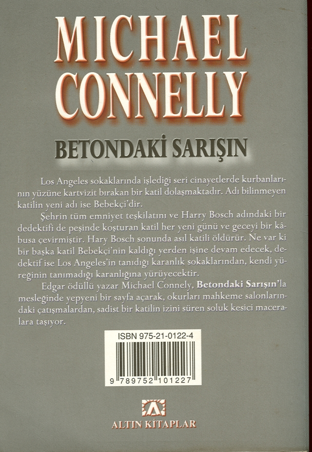

KİTABIN ORİJİNAL ADI: THE CONCRETE BLONDE
YAYIN HAKLARI: ©MICHAEL CONNELLY
KESİM: Telif Haklan Ajansı
© ALTIN KİTAPLAR YAYINEVİ ve TİCARET A.Ş.
Bu kitabın her türlü yayın hakları Fikir ve Sanat Eserleri Yasası gereğince ALTIN KİTAPLAR YAYINEVİ ve TİCARET A.Ş.'ye aittir.
KAPAK RESMİ: CÖMERT DOĞRU
BASKI: 1. BASIM / EKİM 2000
AKDENİZ YAYINCILIK A.Ş.
Matbaacılar Sitesi No: 83
Bağcılar - İSTANBUL
ISBN 975-21 -0122-4
ALTIN KİTAPLAR YAYINEVİ
Celâl Ferdi Gökçay Sk. Nebioğlu işhanı Cağaloğlu - İstanbul Tel: (0212) 513 63 65 - 526 80 12 520 62 46-513 65 18
Faks:(0212)526 80 11
www. altinkitaplar. com
info @altinkitaplar. com.tr.
MICHAEL CONNELLY
BETONDAKİ SARIŞIN
TÜRKÇESİ
FÜSUN DORUKER
Yazarın Yayınevimizden Çıkan Kitabı: KARANLIK AY
Bu kitap
Susan, Paul ve Jamie,
Bob ve Marlen, Ellen,
Jane ve Damian içindir.
Silverlake'deki kapkaranlık evin pencereleri bir ölünün gözlerindeki ifade kadar boştu. Eski Kaliforniya tipi evin geniş bir verandası ve yüksek çatısında iki yatık pencere vardı. Ama ne camların ardında bir ışık parlıyor, ne de giriş kapısının üzerindeki lamba yanıyordu. Evin gölgesi öyle karanlıktı ki, sokak lambalarının ışığı bile aydınlatmaya yetmiyordu. Bosch verandada bir adam dursa göremeyeceğini düşündü.
"Burası olduğundan emin misin?" diye sordu kadına.
"Evin olduğu asıl bina değil," dedi kadın. "Arka tarafta. Garajın üstü. Biraz daha yaklaş, yoldan içersini görebilirsin."
Bosch gaz pedalına dokununca Caprice model araba garaja giden yola girdi.
"İşte," dedi kadın.
Bosch arabayı durdurdu. Evin arkasındaki garajın üzerinde yandan ahşap merdivenle çıkılan bir kat vardı; hem kapısının üzerindeki lamba yanıyor, hem de iki penceresinden ışık sızıyordu.
"Tamam," dedi Bosch.
Bir süre durdukları yerde garaja baktılar. Bosch ne görmeyi beklediğini bile bilmiyordu. Belki de hiçbir şey. Fahişenin parfümü arabayı kaplamıştı. Bosch camı indirdi. Kadının söylediklerine güvenilir mi güvenilmez mi, emin değildi. Kesin olarak bildiği tek şey, destek ekip çağıramayacağıydı. Yanına telsiz almamıştı, arabanın da telefonu yoktu.
"Ne yap... bak işte orda!" dedi kadın aniden.
Daha küçük olan pencerenin ardından geçen gölgeyi Bosch da görmüştü. Orası herhalde banyoydu.
"Adam banyoda," dedi kadın. "Zaten ben de her şeyi orda gördüm."
Bosch gözlerini pencereden ayırıp kadına baktı.
"Ne gördün?"
"Ben, şey banyo dolabına bir göz attım. Evde neler bulunduğuna baktım. Bir kızın dikkatli olması gerekir. Her şeyi gördüm. Yani makyaj malzemeleri. Bilirsin işte, rimeller, rujlar, pudralar filan. Böylece adamın o olduğunu anladım. İşi bittikten sonra onları işte bu malzemelerle boyuyordu. Yani öldürdükten sonra."
"Bunu bana niye telefonda söylemedin?"
"Sormadın ki."
Adamın gölgesi öteki pencerenin perdesinde göründü. Bosch'un beyni hızla çalışırken, kalbi de aynı tempoda atmaya başlamıştı.
"Sen burdan çıkalı ne kadar oldu?"
"Ne bileyim, Bulvar'a gitmek için Franklin Caddesi'ne kadar yürüyüp otostop çekmek zorundaydım. O arabada da on dakka falan kaldım. Yani bilmiyorum."
"Bir tahmin yürüt. Bu çok önemli."
Allah kahretsin, dedi Bosch içinden, polisi aramadan önce bir müşteri daha kapmış anlaşılan.
Ne kadar endişeli olduğu belli. Şimdi evde başka biri olabilir ve ben hâlâ burda oturmuş
bakıyorum.
Arabaya gaz verip sokağa girdi ve bir yangın musluğunun önüne park etti. Motoru durdurdu ama anahtarları almadı. Arabadan inince dönüp açık pencereden kadınla konuştu.
"Dinle, ben oraya gidiyorum. Sen burda kal. Eğer silah sesi duyarsan ya da ben on dakika içinde dönmezsem, bir evin kapısını çal ve polis çağırmalarını iste. Bir polis memurunun yardıma gereksinimi olduğunu söyle onlara. Arabanın saatine iyi bak. Tam on dakika."
"On dakka bebeğim. Sen kahraman olacaksın. Ama ödülü ben alacağım."
Bosch acele adımlarla garaja yaklaşırken, tabancasını çıkardı. Yukarı çıkan merdivenin zaman içersinde eğrildiği belliydi. Gürültü etmemeye çalışarak basamakları üçer üçer tırmandı. Yine de çıkardığı gürültü varlığını tüm dünyaya ilan ediyormuş gibiydi. Yukarıya ulaşınca tabancanın kabzasıyla kapının üzerindeki çıplak ampulü kırdı. Karanlıkta gerileyip korkuluğa yaslandı. Sol ayağını kaldırıp tüm gücüyle kapı kolunun üzerine topuğuyla vurdu.
Kapı büyük bir gürültüyle ardınaa kadar açıldı. Bosch yere çömelip karanlık hole girdi.
Yatağın uzak tarafında ayakta duran adamı anında fark etti. Kel kafalı adam çırılçıplaktı ve vücudunda bir tek kıl bile yoktu. Bakışları karşılaşınca adamın gözlerinin korkuyla dolu olduğunu fark etti. Gergin bir sesle haykırdı.
"POLİS! SAKIN KIPIRDAMA!"
Adam bir an donup kaldı, sonra eğildi ve sağ eli yastığın altına doğru uzandı. Bir an durakladı
ve kolunu uzatmaya devam etti. Bosch gözlerine inanamadı. Ne halt etmeye çalışıyordu?
Zaman durmuş gibiydi. Bosch'un vücudunda dolaşan adrenalin görüşüne açıklık kazandırmıştı. Adam ya yastığın altında üzerini örtecek bir şey arıyordu ya da...
Adamın eli yastığın altına girdi.
"SAKIN YAPMA!"
Eli yastığın altında bir şey tuttu. Adam gözlerini bir an bile Bosch'dan ayırmamıştı. Bosch gözlerindeki o ifadenin korku olmadığını anladı. Başka bir duyguydu. Öfke mi? Nefret mi?
Adamın eli yastığın altından çıkıyordu.
"HAYIR!"
Bosch tetiği çekti ve iki eliyle tuttuğu tabanca yukarı doğru sarsıldı. Çıplak adam geriye savruldu. Arkasındaki ahşap kaplı duvara çarptı ve çırpınarak yatağın üzerine düştü. Bosch hızlı adımlarla odaya girip yatağa yaklaştı.
Adamın sol eli yine yastığa doğru gidiyordu. Bosch sol ayağını kaldırıp adamın sırtına abandı
ve hareket etmesini önledi. Kemerinden kelepçelerini çıkarıp adamın bileklerine taktı. Çıplak adam inliyordu.
"Ben... yapamam..." dedi, ama kan tükürerek öksürmeye başlayınca cümlesini tamamlayamadı.
"Sana söylediğimi yapamaz mıydın?" dedi Bosch. "Sana kıpırdamamanı söylemiştim!"
Ölsen iyi olur, dedi içinden ama yüksek sesle tekrarlamadı. Hepimiz için daha kolay olacak.
Yatağın etrafında dönüp yastığa yaklaştı. Altında duran nesneye baktı ve yastığı tekrar yerine bıraktı. Gözlerini bir an sımsıkı kapattı.
"Allah kahretsin!" diye haykırdı çıplak adama doğru. "Ne yaptın sen? Elimde silah vardı ve sen yastığın altına uzanıp... Sana kıpırdamamanı söylemiştim!"
Adamın yüzünü görmemek için yatağın öbür tarafına geçti. Kirli beyaz çarşafa ağzından kan boşalıyordu. Bosch kurşunun akciğerine saplandığını biliyordu. Çıplak adam artık ölmek üzereydi.
"Ölmek zorunda değildin," dedi Bosch.
Ve adam öldü.
Bosch gözleriyle odayı taradı. Başka kimse yoktu. Evden kaçan fahişenin yerine bir başkası
gelmemişti. Banyoya geçip lavabonun altındaki dolabı açtı. Fahişenin dediği gibi makyaj malzemeleriyle doluydu. Bosch bazı markalan tanıyordu. Max Factor, L'Oreal, Cover Girl, Revlon, her şey tabloya uygundu.
Banyonun kapısından yatağın üzerindeki cesede baktı. Oda hâlâ barut kokuyordu. Bir sigara yaktı. Evin içi öylesine sessizdi ki rahatlatıcı dumanı ciğerlerine çekerken, tütünün yanarken cızırdadığını duyabiliyordu.
Evde telefon yoktu. Küçük mutfakta bir iskemleye oturup beklemeye başladı. Odanın öteki köşesindeki cesede bakarken, kalbinin deliler gibi attığını ve başının döndüğünü hissetti.
Duygularından arınmış gibiydi. Yatağın üzerindeki adama karşı ne sempati, ne suçluluk, ne de üzüntü duyuyordu. Hiçbir şey hissetmiyordu.
Dikkatini gitgide yaklaşan siren sesine verdi. Bir süre sonra birden fazla siren sesinin geldiğini fark etti.
BİR
Los Angeles'ın merkezindeki Eyalet Mahkemesi'nin koridorlarında oturacak bir tek bank bile yoktur. Soğuk mermer zemine oturmak için sırtını duvara dayayıp yere çökenleri önlerinden geçen polisler derhal ayağa kaldırır. Zaten polisler hiç durmaksızın koridorları dolaşırlar.
Etrafta konuksever bir hava olmamasının nedeni; federal hükümetin, mahkemelerin uzun sürdüğü, adalet mekanizmasının ağır işlediği ya da hiç işlemediği görüntüsünü vermek istememesidir. İnsanların sıra sıra bankların üzerine ya da yere serilerek yorgun gözlerle mahkeme salonunun kapılarının açılıp sevdiklerinin ya da kendi davalarının başlamasını
beklemelerini hükümet hiç istemiyor. Bu manzara Spring Sokağı'ndaki Eyalet Ceza Mahkemesi'nin koridorlarında her gün yaşanmaktadır. Gün boyu her katın koridorları
kocalarını, babalarını ya da sevgililerini bekleyen kadın ve çocuklarla doluyor. Genelde bu insanlar ya kara ya da kahverengi derili. Banklar açık denizde kaybolmuş, dalgalara kapılmış, kurtarılmayı bekleyenlerle tıkış tıkış dolu cankurtaran sandallarını andırıyor. Adliyenin ukalaları onlardan "kayıkçılar" diye söz ediyor.
Eyalet Mahkemesi'nin basamaklarında sigarasını tüttüren Harry Bosch aradaki farkları
aklından geçiriyordu. Bir şey daha vardı. İçerdeki koridorlarda sigara içmek yasaktı. Yani davaya ara verilince asansörle aşağı inip dışarı çıkmak zorundaydı. Adalet terazisini elinde tutan gözleri bağlı kadın heykelinin beton kaidesinin arkasında içi kum dolu büyük bir küllük vardı. Bosch heykele bakarken adını bir türlü anımsayamıyordu. Yunancaydı galiba, diye düşündü ama emin değildi. Bakışlarını elindeki gazeteye çevirip öyküyü bir kez daha okudu.
Son zamanlarda sabahları gazetelerin yalnızca spor sayfalarına bakar olmuştu. Gollerin, sayıların dikkatle alt alta sıralandığı sayfaları okurken rakamların ve yüzde hesaplarının kendisini rahatlattığını hissediyordu. Karmakarışık bir dünyada, bu açık ve kesin rakamlar belirgin bir düzen oluşturur gibiydi. Dodgers beysbol takımında en fazla sayıyı kimin yaptığını okurken, yaşadığı kent ve kendi yaşamı arasında bir bağ varmış gibi hissediyordu.
Ama bugün spor sayfalarını mahkeme salonundaki iskemlenin altında duran çantasında bırakmıştı. Los Angeles Times'm kent haberleri bölümünü, otoyolda sürücülerin araba kullanırken bir yandan da okumak için yaptıkları gibi, incecik katlamış, birinci sayfanın alt köşesinde yer alan davayla ilgili haberi dikkatle okuyordu. Kendisi hakkında yazılanları bir kez daha okurken, yüzüne ateş bastığını hissetti.
POLİSİN "PERUKLU" ADAMI ÖLDÜRME DAVASI BAŞLIYOR
Joel Bremmer, Times muhabiri
Bugün olağandışı bir yurttaşlık hakları davası başlıyor. Los Angeles Emniyeti'nden bir dedektif dört yıl önce, seri katil olduğu varsayılan bir kişiyi, tabancasına uzandığını
zannederek vurup ölümüne yol açtığı için aşırı güç kullanmakla suçlanıyor. Oysa gerçekte katil zanlısı peruğunu almaya çalışmıştı.
Los Angeles Emniyeti'nden Dedektif Harry Bosch (43), Bebekçi ölümleri diye adlandırılan seri cinayetlerin soruşturması sırasında ölen, uzay sanayisi dalında çalışan Norman Church'ün dul karısı tarafından Eyalet Mahkemesi'nde dava ediliyor.
Olaydan yaklaşık bir yıl kadar önce, polisler 11 kurbanını öldükten sonra yüzlerine makyaj yaptığı için medya tarafından "Bebekçi" adıyla anılan seri katilin peşindeydi. Katilin sürekli olarak hem Bosch'a, hem de Times'a şiirler ve notlar göndermesiyle soruşturma çok ünlenmişti.
Church'ün ölümünden sonra polis, mühendisin aranan katil olduğu konusunda kesin kanıtlara sahip olduğu açıklamasını yapmıştı.
Bosch bir süre açığa alınmış ve daha sonra Los Angeles Emniyeti Gasp-Cinayet Masası'ndan Hollywood Beldesi Cinayet Masası'na atanmıştı. Bu rütbe indiriminin, Church'ün öldürüldüğü
Silverlake semtindeki eve girerken Bosch'un destek çağırmamak gibi bir usul hatası yaparak disiplin suçu işlediği gerekçesiyle gerçekleştirildiği vurgulanmıştı.
Polis müdürleri Church'ün öldürülmesinin 'iyi' bir atış olduğunu söylemişlerdi. Meslek terminolojisine göre Bosch gerektiği gibi davranmıştı.
Church'ün ölmüş olması davanın görülmesini zorlaştırdığından, polisin topladığı kanıtların çoğu yeminli ifadelerde açıklanmamıştı. Bu durumun federal mahkemede değişeceğine inanılıyor. Bir hafta süren jüri üyelerinin seçiminin bugün tamamlanması ve ardından avukatların açılış konuşmalarını yapmaları bekleniyor.
Bosch öykünün devamını okumak için gazeteyi yeniden katlamak zorunda kaldı. İç sayfada kendi fotoğrafına gözü takılınca bir an dikkati dağıldı. Eski bir fotoğraftı ve suçluların emniyette çekilen resimlerinden pek farklı görünmüyordu. Ruhsatında da aynı fotoğraf vardı.
Yazıdan çok, resminin kullanılması Bosch'u rahatsız etmişti. Fotoğrafının gazetede yayınlanmasını özel yaşamına tecavüz olarak algılıyordu. Dikkatini yazıya vermek için kendini zorladı.
Öldürme olayı gerçekleştiğinde Bosch görevde olduğundan, hükümet avukatı tarafından savunuluyor. Eğer davacı taraf kazanırsa, davanın giderlerini Bosch değil, kentin vergi veren halkı ödeyecek.
Church'ün karısı Deborah'yı ise, özellikle polisin gücünü kötüye kullanması konusunda uzman olan yurttaşlık hakları avukatı Honey Chandler temsil ediyor. Geçen hafta yapılan bir görüşmede Bayan Chandler, jüriye Bosch'un son derece dikkatsiz davranarak Church'ün ölümünü kaçınılmaz bir hale getirdiğini kanıtlayabileceğini açıklamıştı.
"Dedektif Bosch kovboyculuk oynamaya kalkışınca bir adam öldü," dedi Chandler. "Yalnızca dikkatsizlik mi etti yoksa daha kötü bir amacı mı vardı bilmiyorum, ama her şey mahkemede ortaya çıkacak."
Duruşmaya verilen ilk arada aldığı gazetenin bu satırını Bosch en az altı kez okumuştu. Kötü
amaç. Avukat ne demek istiyordu? Chandler'ın bir gazeteciyle yaptığı konuşmayı psikolojik bir savaşa çevirmekten kaçınmayacağını bildiği halde, tedirgin olmamaya gayret ediyordu.
Aslında bu sözler bir uyarı gibiydi ve arkasının geleceğine işaret ediyordu.
Chandler ayrıca polisteki Church'ün Bebekçi katil olduğunu gösteren kanıtları sorgulamaya hazırlanıyor. Açıkladığına göre iki kız babası olan Church, polisin aradığı seri katil değildi ve emniyet Bosch'un hatasını örtmek için onu böyle tanımlamıştı.
"Dedektif Bosch soğukkanlılıkla masum bir adamı öldürdü," dedi Chandler. "Biz bu yurttaşlık hakları davasını açarak, emniyetin ve bölge savcısının yapmayı reddettiği şeyi yapacağız.
Gerçeklen ortaya çıkarıp Norman Church'ün ailesi için adaletin yerine gelmesini sağlayacağız."
Bosch ve onu temsil eden hükümet avukatı yardımcısı Rodney Belk, bu olay konusunda açıklama yapmaktan kaçındılar. Bir ya da iki hafta sürecek olan duruşmalar boyunca Bosch'un yanı sıra ifade verecek kişilerin..."
"Bozuk paran var mı ahbap?"
Bosch gözlerini gazeteden ayırıp mahkeme binasının önünü kendi mekânı ilan eden evsiz adamın tanıdık kirli yüzüne baktı. Jüri üyelerinin seçildiği bir hafta boyunca her gün Bosch, adamın bozuk para ve sigara dilenme turlarına çıkmasını izlemişti. Adamın üzerinde iki kazak, kadife pantolon ve artık incelmiş bir tüvit ceket vardı. Elinde eşyalarının bulunduğu plastik torbadan başka bir de bozuk para isterken insanlara uzattığı kâğıt bardağı taşıyordu.
Ayrıca her tarafı kargacık burgacık yazılarla dolu sarı bir defteri de vardı.
Bosch hiç düşünmeden cebini yoklayıp omzunu silkti. Bozuk parası yoktu.
"Bir dolar da alabilirim."
"Fazladan bir dolarım yok."
Evsiz adam onunla ilgilenmekten vazgeçip, kumların üzerine kanser gibi yayılan sararmış
sigara izmaritlerine baktı. Sarı defterini koltuğunun altına sıkıştırıp, halen birkaç nefes çekilecek kadar tütün kalmış olan izmaritleri toplamaya başladı. Ara sıra eline neredeyse bütün bir sigara geçince ne denli hoşnut olduğunu anlatmak istercesine dudaklarını
şaplatıyordu. Küllükte bulduğu ganimetlerini, üzerinde Big Gulp yazan kâğıt bardağa yerleştirdi.
İzmaritleri bulduğuna sevinerek küllükten uzaklaştı ve heykele baktı. Bosch'a göz kırparak, cinsel çağrışımlar yaparcasına kalçasını sallamaya başladı.
"Sevgilim nasılmış bakalım?" dedi.
Sonra elini öpüp uzattı ve heykeli okşadı.
Bosch söyleyecek bir şey bulamazken kemerine takılı çağrı aygıtı çınlamaya başladı. Evsiz adam iki adım geriledi ve boş elini bilinmeyen bir kötülükten korunmak istercesine havaya kaldırdı. Adamın yüzündeki yoğun panik ifadesi Bosch'un dikkatini çekti. Gözlerine, beynindeki sinir uçları birbirinden çok uzakta, aralarındaki bağlantılar kopmuş birinin bakışları yerleşmişti. Elinde izmarit dolu bardağıyla Spring Sokağı'na doğru hızlı adımlarla uzaklaştı.
Adamı gözden kaybolana dek izleyen Bosch çağrı aygıtına baktı. Minik ekrandaki numarayı
tanıyordu. Hollywood Karakolu'ndaki Teğmen Harvey Pounds'un özel telefonundan aranmıştı. Sigarasını söndürüp mahkeme binasına girdi. İkinci katta asansörün yanında bir dizi jetonlu telefon vardı.
"Harry orda neler oluyor?" diye sordu Pounds.
"Her zamanki şeyler. Yalnızca bekliyorum. Jüri üyeleri seçildi. Şimdi de avukatlar açılış
konuşmaları hakkında yargıçla görüşüyorlar. Belk bunları dinlememe gerek olmadığını
söyledi, ben de buralarda takılıyorum."
Saatine baktı, on ikiye on vardı.
"Birazdan öğle tatili verecekler," diye ekledi.
"İyi. Sana ihtiyacım var." Bosch yanıt vermedi. Pounds dava bitene dek görevden alınacağına dair söz vermişti. Davanın bir ya da en fazla iki hafta sürmesi bekleniyordu. Üstelik Pounds'un bu sözü vermekten başka çıkar yolu yoktu. Bosch haftanın dört gününü
mahkemede geçirirken bir cinayet soruşturmasını sürdürmesi beklenemezdi doğrusu.
"Neler oluyor? Adımı listeden çıkardığını sanıyordum."
"Listede değilsin, ama bir sorunumuz var. Seni ilgilendiriyor."
Bosch bir kez daha durakladı. Pounds ile çalışmak böyleydi işte. Bosch ona güvenmektense bir yankesiciye güvenmeyi yeğlerdi. Pounds'un açık ve gizli amaçları arasında oldukça fark vardı. Teğmen şimdi de her zamanki oyunlarından birini oynuyor gibiydi. Anlaşılmayan cümleler kurup, Bosch'un yemi yutmasını bekliyordu.
"Sorun mu?" diye sordu Bosch sonunda. Kendini bağlamayan bir cümleydi.
"Bugünkü gazeteyi görmüşsündür. Times'dakl senin davanla ilgili yazıyı demek istiyorum."
"Evet şimdi okuyordum." .
"Şey bir not geldi."
"Not mu? Neden söz ediyorsun sen?"
"Birinin ön masaya bir not bıraktığını söylüyorum. Sana yazılmış. Üstelik cinayetler işlendiği sırada Bebekçi'den gelen notlara çok benziyor."
Pounds'un öyküyü uzattıkça uzatmaktan keyif aldığını hissediyordu.
"Eğer bana yazılmışsa içeriğini sen nerden biliyorsun?"
"Postayla gelmedi. Zarfı filan yok. İkiye katlanmış tek bir sayfa. Dış tarafta senin adın vardı.
Biri kâğıdı ön masaya bırakmış. Birisi de okumuş ve gerisini tahmin edebilirsin."
"Ne yazıyor?"
"Zamanlama kötü oldu ama Harry yazılanlardan hiç hoşlanmayacaksın. Temel olarak senin yanlış adamı zımbaladığını söylüyor. Bebekçi'nin hâlâ ortalıkta gezindiğini söylüyor. Yazan kişi, gerçek Bebekçi olduğunu ve cesetlerin sayısının artacağını bildiriyor. Yani senin yanlış
adamı vurduğunu söylüyor."
"Saçmalık bu. Bebekçi'nin mektupları Bremmer'ın makalelerinde yayınlanmıştı. Herhangi biri onları taklit ederek bir not yazabilir. Sen..."
"Sen beni aptal mı sanıyorsun Bosch? Herhangi birinin bunu yazabileceğini biliyorum.
Üstelik notu yazan da bunu biliyor. Ciddi olduğunu kanıtlamak için bir de küçük define haritası çizmiş. Yeni bir kurbanın cesedine işaret ediyor."
Bosch düşünüp Pounds beklerken uzun bir sessizlik oldu.
"Yani?" dedi Bosch sonunda.
"Bu sabah Edgar'ı gösterilen adrese gönderdim. Western Caddesi'ndeki Bing'in Yeri'ni anımsıyor musun?"
"Bing'in Yeri mi? Evet Bulvar'ın güneyinde. Bilardo salonuydu. Geçen yılki ayaklanmalarda orası yanmamış mıydı?"
"Doğru," dedi Pounds. "Tümüyle yandı. Her şeyi talan edip, yakıp yıktılar. Yalnızca yerdeki beton zemin ve üç duvarı kaldı. Kent yönetimi tümüyle yıkılması için karar aldı ama mülk sahibi henüz harekete geçmedi. Her neyse, bu sabah gelen notta cesedin orda olduğu yazıyor.
Genç kızın döşemenin altına gömüldüğü açıklanıyor. Edgar betonu kırdırmak için yanına kompresör filan da alıp oraya gitti..."
Pounds lafı uzatıyordu. Ne kadar alçak bir herif diye geçirdi içinden Bosch. Bu kez daha fazla bekletecekti. Sessizlik sinir bozucu bir hal alınca Pounds tekrar söze başladı.
"Edgar bir ceset buldu. Tıpkı notta yazıldığı gibi. Betonun altında. Ceset ortaya çıktı.
Aynen..."
"Ne zaman ölmüş?"
"Henüz bilinmiyor. Ama eski gibi görünüyor. Bu yüzden aradım seni. Öğle tatilinde oraya gidip, ortalıkta neler döndüğünü anlamanı istiyorum. Bakalım gerçekten Bebekçi'nin kurbanı
mı yoksa başka bir çılgın mı bizi işletiyor? Sen uzmansın. Yargıç öğlen için ara verince oraya gidersin. Orada buluşuruz. Açılış konuşmaları başlayana kadar geri dönersin."
Bosch duygularından arınmış gibiydi. Derhal bir sigara yakması gerekiyordu. Pounds'un anlattıklarını kafasında toparlamaya uğraşıyordu. Bebekçi, yani Norman Church dört yıl önce ölmüştü. Bu işte bir hata olamazdı. Bosch dört yıl önceki o gece de, bugün de Church'ün Bebekçi olduğundan kesinlikle emindi.
"Yani bu sabah bu not birdenbire ortaya çıkıverdi?"
"Masadaki memur dört saat kadar önce orda bulmuş. Kimin bıraktığını gören olmamış.
Bilirsin, sabahları gelen giden çok olur.
Üstelik nöbet değişimi de yapıldı. Meehan'ı gönderip masadaki adamlarla görüştürdüm. Hiç
kimse notu bulana dek olan, dikkate değer bir olay hatırlamıyor."
"Lanet olsun, okusana bana."
"Okuyamam. Olay Yeri İnceleme Bölümü aldı kâğıdı. Birilerini tutuklayacağımızı
sanmıyorum ama bir şeyler yapıyormuş gibi davranmamız gerek. Yazının bir kopyasını alıp oraya getiririm, olur mu?"
Bosch yanıt vermedi.
"Aklından neler geçtiğini tahmin ediyorum, ama orda neler olduğunu görene dek beklemeliyiz. Kaygılanmak için şimdilik bir neden yok. Belki de şu Chandler denen avukat bir hınzırlık yapmıştır. Ondan her şey beklenir. Bir polis memurunu duvara çivilemek için her şeyi yapabilecek bir tiptir. Adını gazetelerde görmekten zevk alıyor."
"Medyadan n'aber? Haberi duydular mı?"
"Bulunan ceset hakkında bilgi isteyenlerden birkaç telefon aldık. Anlaşılan çıkan sevk emrinden işin kokusunu aldılar. Şimdilik kimseyle konuşmuyoruz. Ayrıca bırakılan notu ve Bebekçi-'nin konuyla ilgisini henüz kimse bilmiyor. Yalnızca orda bir ceset olduğunu biliyorlar. İsyanda yakılan yerlerden birinde bulunmuş olması onlara fazlasıyla çekici bir fikir gibi gelmiş olmalı. "Her neyse, bir süre için Bebekçi konusunu gizli tutuyoruz. Tabii notu yazan kişi kopyalarını medyaya göndermediyse. Eğer öyle yaptıysa, akşam olmadan haber alırız."
"Cesedi nasıl beton zeminin altına gömebilmiş?"
"Binanın tamamı bilardo salonu değilmiş. Arka tarafta depolar varmış. Bing orayı işletmeye başlamadan önce, bina bir stüdyonun aksesuar deposuymuş. Bing binanın ön tarafını alınca, arkadaki odaları depo olarak kiraya vermişler. Bunları Edgar anlattı, mal sahibiyle görüşmüş.
Katil herhalde odalardan birine girdi ve betonu kırıp cesedi altına yerleştirdi. Her taraf isyanda yanıp kül oldu. Ama yangın beton döşemeye zarar vermedi. Zavallı kızın cesedi bunca zamandır orda duruyormuş. Edgar mumyaya benzediğini söylüyor."
Bosch 4 numaralı duruşma salonunun kapısına doğru bakınca Church ailesiyle avukatlarının dışarı çıktığını gördü. Öğle yemeği için ara verilmişti. Deborah Church ile iki kızı ona bakmadılar. Ama polislerin ve federal mahkeme binasında çalışanların çoğunun Money Chandler dediği avukat Honey Chandler öldürücü bakışlarını yüzüne dikti. Sert çeneli, güneşten yanmış yüzünün ortasında gözleri maun gibi kapkaraydı. Altın sarısı saçlarıyla oldukça çekici bir kadındı. Vücut hatlarını mavi tayyörünün sert çizgileri örtüyordu. Bosch, yanından geçen gruptan yükselen düşmanlık duygusunun, üzerine bir dalga gibi geldiğini hissetti.
"Orda mısın Bosch?" diye sordu Pounds.
"Evet. Galiba öğle tatili yapıyoruz."
"Çok iyi. Doğruca Bing'in Yeri'ne git, seninle orda buluşalım. Bunu söylediğime inanamıyorum ama katilin başka bir kaçık olduğunu umuyorum. Senin için en iyisi bu olur."
"Haklısın."
Tam ahizeyi bırakırken Pounds'un sesi tekrar duyuldu.
"Bir şey daha var. Eğer medya mensupları oraya gelirse, işi bana bırak. Sonuç ne olursa olsun, eski olaydan dolayı hâlâ davalı olduğundan, bu yeni olayla resmen ilgilenemezsin. Yani seni oraya sadece uzman bir tanık olarak götürüyoruz, tamam mı?"
"Pekâlâ."
"Orda görüşürüz."
İKİ
Bosch kent merkezinden Wilshire Caddesi'ne doğru girdi, Mac-Arthur Parkı'nın yanından geçip Üçüncü Cadde'ye saptı. Kuzeye, Western Caddesi'ne dönünce devriyelerin, dedektiflerin, Olay Yeri İnceleme ve adli tıp görevlilerinin sol tarafa park edilmiş arabalarını
gördü. Uzaklarda, harfleri sis ve hava kirliliği arasında zar zor okunan HOLLYWOOD yazısı
gözüne çarptı.
Bing'in Yeri'nden geriye, kararmış üç duvar ve yanık enkaz kalmıştı. Çatısı yoktu ama devriyeler binanın ön tarafındaki tel korkuluğa arka duvarın üzerinden mavi plastik bir branda germişlerdi. Bosch, brandanın araştırmacılara gölge sağlamak için çekilmediğini biliyordu.
Ön cama doğru eğilip yukarı bakınca, tepede dönüp duran kentin leş kargalarını, yani medya helikopterlerini gördü.
Arabasını kaldırım kenarına yanaştırırken, gözü malzeme kamyonunun yanında duran işçilere takıldı. Hepsinin yüzü sapsarı kesilmişti ve sigaralarından derin nefesler çekiyorlardı. Taş
kırıcı kompresörler kamyonun arkasına sıralanmıştı. İşçiler buradaki görevlerinin sona erdiğini umarak bekliyorlardı.
Kamyonun öte yanında Pounds, adli tıptan gelen mavi minibüsünün yanında duruyordu.
Kendini toplamaya çalıştığı belliydi ve Bosch, yüz ifadesinin işçilerinki kadar hastalıklı
göründüğünü fark etti. Gerçi Pounds, Hollywood Beldesi Cinayet Masası da dahil olmak üzere tüm dedektiflerin şefiydi, ama hiçbir zaman Cinayet Masası'nda çalışmamıştı. Bölüm yöneticilerinin çoğu gibi, kariyerinde ilerlemesi deneyimden çok, girdiği sınavların sonuçlarına bağlıydı. Pounds gibilerin, gerçek polislerin her gün karşılaştığı türden olaylara tanık olması onu her zaman keyiflendirirdi.
Arabadan inmeden önce saatine baktı. Açılış konuşmalarını dinlemek için mahkeme salonuna dönmek üzere bir saati vardı.
"Harry," diye seslendi Pounds yaklaşırken. "Gelebildiğine sevindim."
"Bir cesedi incelemeye her zaman hazırım teğmen."
Bosch ceketini çıkarıp koltuğa bıraktı ve bagajdan çıkardığı bol mavi tulumu üzerine geçirdi.
Terleyecekti ama mahkeme salonuna kir ve toz içinde dönmek istemiyordu.
"İyi fikir," dedi Pounds. "Keşke ben de getirseydim."
Getirecek bir tulumu olmadığını Bosch biliyordu. Pounds ancak televizyon kameralarının gelme olasılığı yüksek olduğu zamanlarda cinayet yerlerinde boy gösterirdi. Üstelik yazılı
basına aldırış etmeyip yalnızca görsel basınla ilgilenirdi. Bir gazete muhabiriyle konuşurken mantıklı sözler bulmak zorundasınız. Çünkü sözleriniz kâğıda dökülür ve ertesi gün, hatta ömür boyu yakanızı bırakmaz. Yazılı basınla konuşmak emniyetin politikasına dahil değildir.
Televizyon ise daha geçici ve daha az tehlikeli bir heyecan yaratıyordu.
Bosch mavi brandalı yere doğru ilerledi. Ortalıkta her zamanki araştırmacılar vardı. Kırık betonun ortasında binanın temeline doğru inen bir çukur kazılmıştı. Yukarıya bakınca televizyon helikopterlerinden birinin iyice alçaktan uçtuğunu gördü. Binanın üstündeki branda doğru dürüst görüntü almalarını engelliyordu. Herhalde kısa bir süre sonra yaya olarak da geleceklerdi.
Binanın kovuk gibi kalmış enkazının arasında yanık tavan krişleri, ahşap parçalar, kırılmış
beton kalıntıları ve daha bir sürü çerçöp vardı. Pounds, Bosch'a yaklaştı ve birlikte çöplerin üzerinden atlayıp kendilerine yol açtılar.
"Herhalde buraya kepçeleri sokup yeni bir otopark yaparlar," dedi Pounds. "İsyanlar kente bine yakın park yeri kazandırdı. South Central bölgesinde bir park istiyorsan mesele yok.
Ama bir şişe soda almak ya da arabana benzin doldurmayı düşünüyorsan, işin var demektir.
Her tarafı yakıp yıktılar. Noel'den önce South Side bölgesinden geçtin mi? Her tarafta çam ağaçlarının satıldığı geniş alanlar oluşmuştu. Şu adamların kendi mahallelerini niçin yaktıklarını hâlâ anlamış değilim."
Bosch, "şu adamların" böyle davranmalarının bir sebebinin de Pounds gibilerin onların niçin böyle yaptıklarını anlayamamaları olduğunu ve vakti geldiğinde yine öyle davranacaklarını
biliyordu. Bu olayları bir kısırdöngü olarak görüyordu. Yaklaşık yirmi beş yılda bir, kentin ruhu gerçeklerin ateşiyle yanıp tutuşuyordu. Ama sonra her şey olduğu gibi devam ediyordu.
Geriye dönüp bakmadan, tıpkı trafikteki vur-kaç kazaları gibi.
Birdenbire Pounds taş parçacıklarının üzerinde sendeledi ve yere düştü. Elleriyle düşüşünü
kesip, utanarak ayağa kalktı.
"Lanet olsun," diye bağırdı. Sonra da Bosch sormadığı halde, "İyiyim, iyiyim," diye bildirdi.
Açılmakta olan tepesini örttüğü saçlarını aceleyle düzeltirken eline bulaşmış olan is karasını
alnına sürdüğünü fark etmedi ve Bosch da gördüğü halde bir şey söylemedi.
Sonunda çukurun yanında duran gruba yaklaştılar. Bosch, yanında tanıdığı birkaç dedektif ve tanımadığı iki kadınla duran eski ortağı Jerry Edgar'a yaklaştı. Kadınların üzerinde adli tıptan ceset kaldırmak için gelenlerin giydiği yeşil tulumlar vardı. Asgari ücretle, cinayetten cinayete koşup cesetleri mavi minibüse yüklüyor ve morga götürüyorlardı.
"Nasıl giriyor Harry?" diye sordu Edgar.
"İyidir."
Edgar kısa bir süre önce New Orleans'taki müzik festivaline gitmiş ve bu selamlama biçimiyle geri dönmüştü. Öyle sık kullanıyordu ki çevresindekiler rahatsız olmaya başlamıştı, ama kendisi bunun farkında değildi.
Bosch'unki gibi bir tulum giymeyen Edgar grubun içinde hemen dikkati çekiyordu.
Nordstrom marka takım elbisesini buruşturmamak için hiçbir zaman tulum giymezdi ama olay yeri incelemesine gittiğinde paçalarına bile toz bulaştırmadan işini görmeyi becerirdi. Bir zamanlar iyi para getiren, ek iş olarak uğraştığı emlak alım satımı gerçi son üç yıldır kötüye gitmişti ama hâlâ bölümün en iyi giyinen dedektifi olmayı sürdürüyordu. Karade-rili dedektifin dikkatle bağlanmış açık mavi ipek kravatına bakan Bosch, fiyatının kendi gömleğiyle kravatının toplam fiyatından muhtemelen daha fazla olduğunu düşündü.
Bosch başını çevirip Olay Yeri İnceleme Bölümü teknisyeni Art Donovan ile selamlaştı ama ötekilere hiçbir şey söylemedi. İşin raconuna göre davranıyordu. Herhangi bir cinayet mahallinde dikkatle düzenlenmiş ve asla dışına çıkılmayan bir hiyerarşi vardı. Dedektifler genellikle ya kendi aralarında ya da Olay Yeri İnceleme Bölümü teknisyeniyle konuşurlardı.
Üniformalılar soru sorulmadıkça ağızlarını açmazdı. Hiyerarşik düzenin en aşağı sınıfı olan ceset taşıyıcılar adli tıp teknisyeni dışında kimseyle konuşmazlardı. Adli tıp teknisyeni de aynasızlarla sohbet etmezdi. Polisleri sürekli olarak bir şeyler isteyen, yok otopsi hemen yapılsın yok toksin testi bitmiş olmalıydı diye sızlanıp duran kişiler olarak görüp tepeden bakardı.
Taş kırıcılar betonu delip iki buçuk metre boyunda, yüz yirmi santim derinliğinde bir çukur açmışlardı. Sonra da betonun altından yanlara doğru çukuru genişletip, yüzeyden doksan santim kadar aşağıda bulunan bir başka betona erişmişlerdi. Bu betonun içinde bir boşluk vardı. Bosch diz çöküp daha yakından bakınca, çimento yığınının arasında bir kadın bedeninin dış hatlarını fark etti. Sanki bir vitrin mankeni yapmak için alçı dökmek üzere bir kalıp hazırlanmıştı, ama boştu
"Ceset nerde?" diye sordu.
"Çıkarıldı," dedi Edgar. "Arabadaki torbada. Bu beton yığınını kırıp dökmeden tek parça olarak nasıl götürebileceğimizi düşünüyoruz."
Bosch birkaç dakika sesini çıkarmadan boş çukura baktı ve ayağa kalkıp brandanın örttüğü
yerden çıktı. Adli tıp araştırmacısı Larry Sakai, onun ardından minibüse geldi ve arka kapının kilidini açtı. Aracın içi fırın gibiydi ve Sakai'nin soluğu dezenfektan kokusunu bastırıyordu.
"Seni buraya çağıracaklarını biliyordum," dedi Sakai.
"Öyle mi? Niye?"
"Çünkü Bebekçi'nin işine benziyor, dostum."
Bosch onaylar gibi görünmemek için yanıt vermedi. Sakai dört yıl önceki Bebekçi cinayetlerinin bir kısmında görev almıştı. Ayrıca medyanın katile bu ismi takmasından Sakai'nin sorumlu olduğunu düşünüyordu. Biri Kanal 4'teki habercilerden birine, katilin kurbanlarına yaptığı makyajın ayrıntılarını sızdırmıştı. Habercilerde katile Bebekçi adını
vermişti. Sonrasında polisler bile ondan aynı adla söz eder olmuştu.
Bosch başından beri bu isimden nefret etmişti. Kurbanlar kadar katil konusunda da bir şeyler ima eder gibiydi. Kurbanları kişiliklerinden arındırıyor ve ekrana yansıyan Bebekçi öykülerinin korkutucu değil, eğlendirici olmasını kolaylaştırıyordu.
Minibüsün içinde iki sedye ve iki ceset vardı. Cesetlerden biri, siyah torbayı tamamen doldurmuştu, görünmeyen ceset ya çok iriyarıydı ya da ölünce bedeni şişmişti. İkinci torba ise neredeyse boştu. Bosch betondan çıkarılan cesedin bunun içinde olduğundan emindi.
"Evet işte bu," dedi Sakai. "Ötekinde Lankershim'de bıçaklanan biri var. Kuzey Hollywood Karakolu ilgileniyor. Zaten tam onu morga götürürken, buraya gelmemiz gerektiğini öğrendik."
Medyanın haberi bu kadar çabuk almasının nedeni ortaya çıkmıştı. Adli tıpın cankurtaranlarını yönlendiren telsiz kentteki tüm basın kuruluşları tarafından dinleniyordu.
Siyah torbaya bir an daha baktı ve Sakai'nin işe karışmasına fırsat vermeden fermuarını açtı.
Torbadan yükselen keskin koku, ceset daha önce bulunsa herhalde daha dayanılmaz olurdu.
Sakai torbayı aralayınca Bosch kadından geri kalanlara baktı. Cildi kararmış ve kemiklerin üzerine sımsıkı gerilmişti. Bu sahnelere alışkın olan Bosch, kendini olayın dışında tutmayı
başarı-yordu. Bazen cesetlere bakmanın yaşamının bir parçası olduğunu düşünüyordu. Daha on iki yaşına basmadan polisler için annesinin cesedine bakıp kimliğini onaylamış, Vietnam savaşında sayısız ölü görmüş ve yirmi yıllık meslek yaşamında karşılaştıklarının sayısını
unutmuştu. Adeta bir kameranın arkasından bakar gibiydi. Bir psikopat kadar mesafeli olduğunun farkındaydı.
Torbanın içindeki kadının ufak tefek olduğu belliydi, ama çürüyen bedeni daha da küçülmüş
gibiydi. Saçından geri kalanlar omzuna kadar inen boyalı sarı saçları olduğunu göste.iyoıdu.
Yüzünde makyaj malzemelerinin tozlaşmış kalıntıları vardı. Küçülmüş bedeniyle inanılmaz bir zıtlık yaratan iri göğüslerine takıldı gözleri. Gergin derinin altında yusyuvarlak, iri göğüsler1 dipdiri gibiydi. Olması gerektiğinden farklı göründüğü için cesedin en garip uzuvları sayılırdı.
"Silikon," dedi Sakai. "Bu madde bozulmuyor, hatta çıka; ip göğüslerini büyütmek isteyen herhangi bir aptal pilice tekrar satabilirsin. Geri dönüşüm programı bile başlatabiliriz."
Bosch yanıtlamadı. Kendisini daha çekici kılmak için bedenini böylesine değiştiren ve sonunda bir çukura gömülen kadını düşünürken içi sızladı. Acaba kendini yalnızca katiline mi beğendirebilmişti?
Sakai düşüncelerini yarıda kesti.
"Eğer bunu Bebekçi yaptıysa, demek ki en azından dört yıldır betonun içinde duruyor, di mi?
Eğer böyleyse, bu süre için ceset fazla çürümüş sayılmaz. Saçlarının bir kısmı, gözleri ve bazı
iç dokuları yerinde duruyor. Bunlarla çalışabiliriz. Geçen hafta Soledad Kanyonu'nda bulunan bir doğa yürüyüşçüsünün cesedini taşıdım. Dediklerine göre adam geçen yaz kaybolmuş.
Geriye kemikten başka bir şey kalmamıştı. Tabii açık havada olunca, hayvanları da unutmamak gerekir. Biliyorsun adamın kıçından içeri girerler. En yumuşak noktadır ve hayvanlar..."
"Biliyorum Sakai. Şimdilik bununla ilgilenelim."
"Her neyse, betona gömülmesi cesedin çürümesini yavaşlatmış. Tabii tümüyle durdurmamış
ama epey yavaşlatmış. Anlaşılan mezarı hava geçirmiyormuş."
"Kadının ne zaman öldüğünü sizinkiler saptayabilecek mi?"
"Herhalde bunu cesedi inceleyerek bulamayız. Kadının kimliğini ortaya çıkarırız, sizler de ne zaman kaybolduğunu araştırırsınız. Sanırım böyle yapılacak."
Bosch cesedin neredeyse kurşunkalem inceliğindeki kararmış parmaklarına baktı.
"Parmak izi alabilecek misiniz?"
"Alacağız ama parmaklarından değil."
Bosch yüzüne bakınca Sakai'nin sırıttığını gördü.
"Ne? Kadın betonda iz mi bırakmış?"
Sakai'nin sırıtışı bir anda uçup gitti, Bosch sürprizi berbat etmişti.
"Aynen öyle. Bir iz bırakmış da diyebilirsin. Betonun burda kalan kısmını çıkarabilirsek, parmak izi dışında yüz kalıbını da alacağız. Betonu hazırlayan fazla su koymuş. Çok ince bir harç yapmış. Yani bize iyilik etmiş. İstediğimiz izleri alabiliriz."
Bosch sedyenin üzerine eğilip cesedin boynundaki düğümlü deri şeridi inceledi. İnce, siyah derinin kenarında üreticinin dikiş izleri görünüyordu. Bir el çantasının sapından kesilmişti.
Tıpkı ötekiler gibi. Başını biraz daha eğince ceset kokusu ağzına burnuna doldu. Boynundaki derinin çevresi ancak bir şarap şişesi sığacak kadardı. Ölümcül olacak kadar dardı. Şeridin üzerindeki düğüme dikkatle baktı. Sağ tarafa sol elle atılmıştı. Tıpkı ötekiler gibi. Church solaktı.
İncelemesi gereken bir nokta daha, yani katilin imzası kalmıştı.
"Üzerinde giysileri yok mu? Ya ayakkabıları?"
"Hiçbir şey yok. Tıpkı ötekiler gibi."
"Fermuarı aç, tamamını görmek istiyorum."
Sakai fermuarı torbanın alt ucuna kadar çekti. Bosch adamın, Bebekçi'nin imzasından haberi olup olmadığını bilmiyordu, ama bu konuyu açmaya niyetli değildi. Cesedin tümünü
inceliyor-muş gibi davranıyordu ama yalnızca ayak tırnaklarıyla ilgileniyordu. Ayak parmakları büzüşmüş, kararmış ve kırılmıştı. El tırnakları da kırılmıştı ve birkaç parmağının tırnağı yoktu. Ama bazılarının ojesi bozulmamıştı. Pembe renkli oje zaman içinde solmuştu.
Yine de, sağ ayağının başparmağında aradığı imzayı gördü. Minik beyaz bir haç dikkatle çizilmişti. Bebekçi'nin imzası. Tüm cesetlerde bu işarete rastlamışlardı.
Bosch kalbinin gürültüyle çarptığını hissediyordu. Aracın içine bakarken klostrofobiye kapıldı. Paranoya beynini kemirmeye başlıyordu. Aklında tüm seçenekleri sıralamaya başladı.
Eğer bu cesedin üzerinde Bebekçi'nin bilinen tüm izleri bulunursa, katil Church demekti. Eğer bu kadının katili artık öbür dünyada bulunan Church ise, Hollywood Karakolu'nun ön masasına o notu kim bırakmıştı?
Doğrulup ilk kez cesedin tümüne birden baktı. Çıplak, büzüşmüş, unutulmuş bir beden. Bu betonun altında bulunmayı bekleyen başka cesetler olup olmadığını merak etti.
"Kapatabilirsin," dedi Sakai'ye.
"Katil o, di mi? Yani Bebekçi?"
Bosch yanıtlamadı. Minibüsten dışarı çıkınca biraz hava almak için tulumunun fermuarını
açtı.
"Hey Bosch," diye seslendi Sakai aracın içinden. "Yalnızca merak ettim. Bu cesedi nasıl buldunuz? Eğer Bebekçi öldüyse, nerede arayacağınızı size kim söyledi?"
Bosch bu soruya da yanıt vermedi. Ağır adımlarla mavi brandanın örttüğü yere doğru yürüdü.
Anlaşılan gruptakiler cesedi çıkardıkları beton parçasıyla ne yapacaklarına henüz karar verememişlerdi. Edgar üstünü kirletmemeye özen göstererek yanlarında duruyordu. Bosch ona ve Pounds'a işaret etti. Kazılan çukurun solunda, seslerinin duyulmayacağı bir noktada konuşmaya başladılar.
"Eeee?" dedi Pounds. "Elimizde ne var?"
"Church'ün işine benziyor," dedi Bosch.
"Lanet olsun," dedi Edgar.
"Nasıl emin olabilirsin?" diye sordu Pounds.
"Gördüğüm kadarıyla Bebekçi'nin kullandığı tüm ayrıntıları içeriyor. İmzası da dahil olmak üzere. İmzasını gördüm."
"İmza mı?" diye sordu Edgar.
"Ayak parmağındaki beyaz haç işareti. Soruşturma sırasında bunu açıklamamış ve tüm habercilerle de yayınlamamaları için anlaşma yapmıştık."
"Kopya olamaz mı?" diye önerdi Edgar umutla.
"Olabilir. Dava dosyasını kapatıncaya dek beyaz haçtan hiç söz edilmemişti. Ancak ondan sonra Times yazarı Bremmer bu olay konusunda bir kitap yazdı ve beyaz haçtan da söz etti."
"Yani elimizde bir kopyacı var," dedi Pounds.
"Kadının ne zaman öldüğüne bağlı," dedi Bosch. "Bremmer'ın kitabı Church'ün ölümünden bir yıl sonra yayınlandı. Eğer kadın bu tarihten sonra öldürülmüşse, bir kopyacıdan söz edebiliriz. Ama eğer bundan önce betona gömülmüşse, bilemeyeceğim..."
"Durum bombok," dedi Edgar.
Bosch bir an düşünüp tekrar konuşmaya başladı.
"Bu işte birbirinden çok farklı olasılıklar var. Bir kopyacı olabilir. Ya da belki Church'ün bir ortağı vardı ve biz onu hiç görmedik. Ya da belki... ben yanlış adamı vurdum. Belki bu notu yazan gerçeği söylüyor."
Bu sözler sessizliğin içinde, kaldırımın üzerindeki köpek pisliği gibi durdu. Herkes bakmamaya özen göstererek, çevresinden dolanıp yürürdü.
"Not nerde?" diye sordu Bosch sonunda.
"Arabamda. Getiririm. Bir ortağı vardı derken neyi kastediyorsun?"
"Yani eğer bunu Church yaptıysa notu kim yazdı? Kadını onun öldürdüğünü ve nereye gömdüğünü bilen birinin yazmış olması gerekir. Eğer durum böyleyse, bu ikinci kişi kim?
Ortağı mı? Yoksa Church'ün cinayetlerine ortak olan biri vardı da, biz mi bilmiyorduk?"
"Hillside Canavarı'nı anımsıyor musunuz?" diye sordu Edgar. "Sonunda birden fazla kişi olduğu anlaşılmıştı. Genç kadınları öldürme zevkini paylaşan iki kuzendi katiller."
Pounds mesleğini tehlikeye atabilecek olaydan uzaklaşmak istercesine bir adım gerileyip başını salladı.
"Chandler'dan ne haber?" diye sordu. "Diyelim ki, Church'ün karısı cesetlerin nereye gömüldüğünü biliyor. Kadın bildiklerini ona anlatıyor ve Chandler da bu senaryoyu hazırlıyor. Bebekçi'nin notlarına benzer bir yazı hazırlıyor ve karakola bırakıyor. Senin davanı
berbat edeceği kesindir."
Bosch bu senaryoyu aklından bir kez daha geçirdi. Önce akla yatkın göründü ama sonra çelişkilerini fark etti. Anlaşılan, yazılabilecek tüm senaryoları tüketmişlerdi.
"Peki ama Church niçin bazı cesetleri gömdü ve bazılarını açıkta bıraktı? O tarihte görevlilere yardım eden deli doktoru kurbanlarını açıkta bırakmasının bir amacı olduğunu söylemişti.
Katilin teşhirci olduğunu açıklamıştı. Ancak sonlara doğru, yedinci kurbandan sonra bize ve gazetelere not göndermeye başlamıştı. Yani kurbanlarının bir kısmını betona gömmesi, bir kısmını da kolayca bulunacak yerlere bırakması mantıklı değil."
"Doğru," dedi Pounds.
"Ben bir kopyacının varlığını yeğlerim," dedi Edgar.
"Ama niçin birini imzasına kadar taklit ettikten sonra cesedi betona gömüyor?" diye sordu Bosch.
Aslında bu soruyu onlara sormuyordu. Kendisinin yanıt vermesi gereken bir soruydu. Uzun süren bir dakika boyunca sessizlik içinde durdular ve hepsi de en mantıklı olasılığın Bebekçi'
nin hâlâ yaşıyor olması olduğunu düşünmeye başladı.
"Bunu her kim yaptıysa, niçin not yazsın?" diye sorarken Pounds çok tedirgindi. "Niçin notu bize iletsin? Kaçıp kurtulabilirdi."
"Çünkü dikkat çekmek istiyor," dedi Bosch. "Tıpkı Bebekçi gibi. Tıpkı bu davanın ilgi çekmesi gibi."
Yine upuzun bir sessizlik oldu.
"Çözüm yolu kadının kimliğinin ortaya çıkmasına bağlı. Ne zamandan beri betonun içinde yattığını öğrenmeliyiz. Ancak ondan sonra elimizde neler bulunduğunu anlayacağız," dedi Bosch sonunda.
"Peki, şimdi ne yapıyoruz?" dedi Edgar.
"Ne yapacağımızı söyleyeyim," diye atıldı Pounds. "Bu konuda hiç kimseye, hiçbir şey söylemeyeceğiz. Şimdilik susacağız. Elimizde ne bulunduğundan emin olmadıkça konuşmayacağız. Otopsi ve kimlik arama çalışmalarının sonucunu bekleyeceğiz. Bu kızın ne zaman öldüğünü ve ortadan kaybolduğu sırada ne yaptığını öğrenmek zorundayız. Ancak ondan sonra ne yapacağımızı söyleyebilirim. "Bu arada kesinlikle konuşmayın. Eğer yanlış
anlaşılırsa, bölüm için hiç de iyi olmaz. Gördüğüm kadarıyla bazı medya mensupları buraya gelmiş bile. Ben onlarla ilgilenirim. Başka kimse konuşmayacak. Anlaşıldı mı?"
Bosch ile Edgar onaylayınca Pounds ağır ağır enkazın arasından yürüyüp, üniformalıların çektiği sarı bantın arkasında bekleşen habercilere yaklaştı.
Bosch ile Edgar birkaç dakika sessizce ardından baktılar.
"Umarım neler söyleyeceğini iyi biliyordur," dedi Edgar.
"İnsana ne kadar da güven veriyor, değil mi?"
"Yaa, evet."
Bosch çukura doğru ilerleyince Edgar onu izledi.
"Cesedin betona bıraktığı izler konusunda ne yapacaksınız?"
"Taş kırıcılar çıkarılabileceğini sanmıyorlar. Dediklerine göre betonu hazırlayan kişi, talimatları doğru uygulamamış. Çok fazla su ve küçük taneli kum kullanmış. Betondan çok alçıya benziyor. Tek parça halinde çıkarmaya çalıştığımız zaman, kendi ağırlığıyla paramparça olabilir."
"Öyleyse?"
"Donovan alçı hazırlıyor. Yüzün kalıbını alacak. Çukuru kazarken sağ el izine hasar vermişiz.
Donovan sol elinin izi üzerinde kauçuk silikon kullanmayı deneyecek. İzleri bozmadan kalıbını almak için en iyi yöntem buymuş."
Bosch başıyla onayladı. Birkaç dakika habercilerle konuşan Pounds'u izledi ve gün boyu ilk kez gülümsemesine neden olan manzarayı fark etti. Pounds kameralara konuşuyordu ama kimse alnındaki kara lekeden ona söz etmemişti. Bosch sigarasını yakıp tekrar Edgar'a döndü.
"Demek eskiden depo olarak kiralanan yer burasıydı?"
"Evet öyle. Binanın sahibi biraz önce burdaydı. Arkadaki bölümün küçük depolar halinde tek tek kiralandığını söyledi. Bebek-çi ya da bir başka katil, adı her ne haltsa, burda bir oda kiralayıp istediğini gizlice yapabilirdi. Tek sorun, deponun zemin betonunu kırarken çıkaracağı gürültüydü. Herhalde geceleri çalıştı. Binanın sahibi genelde insanların gece vakti buraya gelmediklerini söyledi. Kiracılarda arka sokağa açılan dış kapının anahtarı da varmış, isteyen buraya gece gelip işini bitirebilirmiş yani."
Bundan sonra gelebilecek soru öylesine açıktı ki, Bosch'un sormasına fırsat vermeden Edgar yanıtladı.
"Bina sahibi bize kiracıların isimlerini veremiyor. En azından kesin olarak değil. Tüm belgeler yangında kül olmuş. Sigorta şirketi zarar bildirenlerle anlaşmalar yapmış, hiç
olmazsa o isimleri alabileceğiz. Ama dediğine göre isyandan sonra ortadan kaybolup sigortaya başvurmayanlar da varmış. Hepsinin adını da anımsamıyor. Üstelik içlerinden biri bizim adamsa, herhalde takma bir ad kullanmıştır. Binanda bir oda kiralayıp oraya mezar kazacaksam, gerçek adımı vermeyeceğimden emin olabilirsin."
Bosch başıyla onaylayıp saatine baktı. Biraz sonra mahkeme salonuna dönmesi gerekiyordu.
Karnı acıkmıştı ama yemek yemeye vakti olmayacağını biliyordu. Kazıları yere dikkatle bakınca eski ve daha yeni betonlar arasındaki renk farkı dikkatini çekti. Eski beton neredeyse beyazdı, kadının gömüldüğü yeni beton ise koyu griydi. Çukurun dibinde gri bir beton kütlesinin arasında duran kırmızı bir kâğıt parçası gözüne takıldı. Çukura atlayıp yumuşak harcı aldı ve eski betona çarpıp kırdı. Boş bir Marlboro paketinin bir parçası kaldı elinde.
Edgar takım elbisesinin cebinden bir kanıt torbası çıkardı ve Bosch'un bulduğu kâğıdı içine atması için torbanın ağzını açtı.
"Bunu cesedin yanına koymalı," dedi. "İyi bir kanıt olabilir."
Bosch çukurdan çıkıp tekrar saatine baktı. Gitme zamanı gelmişti.
"Kimliğini saptayınca bana haber verin," dedi Edgar'a.
Tulumunu bagaja atıp, bir sigara yaktı. Arabasına yaslanıp, Pounds'un hazırlık yapmadan düzenlediği basın toplantısını beceriyle sona erdirmesini izlemeye başladı. Kameralar ve habercilerin pahalı giysileri, çoğunun televizyon kanallarından geldiğini gösteriyordu.
Times'dan Bremmer, grubun biraz dışında duruyordu. Bosch uzun zamandır görmediği yazarın biraz kilo almış olduğunu ve sakal bıraktığını fark etti. Anlaşılan Pounds'a düşünerek yanıtlaması gereken daha önemli sorularını sorabilmek için televizyoncuların işlerini bitirmesini bekliyordu.
Bosch sigarasını tüttürerek beş dakika daha bekledi. Mahkemeye geç kalabilirdi, ama yine de notu görmek istiyordu. Pounds görüşmesini bitirince arabanın yanına gelmesi için Bosch'a işaret etti. Arabaya binince, Pounds bir fotokopi uzattı.
Bosch uzun bir süre kâğıdı inceledi. Kolayca tanınan bir el yazısıyla yazılmıştı. Kuşkulu Belgeler Bölümü'ndeki analizci, yazı karakterini Philadelphia blok stili olarak tanımlamış ve sağdan sola eğimli olmasını da eğitimsiz bir elden çıkmasına bağlamıştı. Belki de solak biri, sağ eliyle yazmıştı.
Gazeteler der ki dava yeni başladı
Bebekçi'nin işleri için karar verilecekmiş
Bosch'un kurşunu gerçek ve isabetliydi
Ama bebekler işimin bitmediğini bitirmiş
Western Caddesi'nde çarpıyor yüreğim
Bing'in Yeri'nde yatan bebeği düşündükçe
İşin kötüsü Bosch'un ıskalamış olması
Yıllar geçti ama ben hâlâ oyundan çıkmadım
Bosch yazı stilinin kopya edilebileceğini biliyordu ama şiirin ona tanıdık gelen bir havası
vardı. Tıpkı ötekilere benziyordu. Ancak bir okul çocuğunun bilgisiyle bulunabilecek uyaklar ve gösterişli laflar etmeye çalışan, pek de parlak olmayan bir zekâ. Aklının karıştığını, göğsünün sıkıştığını hissediyordu.
Bunu yazan o, diye düşündü. Kesinlikle o.
ÜÇ
"Bayanlar baylar," diye söze başladı Eyalet Yargıcı Alva Keyes, jüri üyelerine bakarak.
"Duruşmaya avukatların açılış konuşmalarıyla başlıyoruz. Söylenenleri kanıt olarak algılamamanız gerekir. Bu konuşmalar avukatların izleyecekleri yolu gösteren birer harita gibidir. Bu sözlere sakın kesin kanıt olarak bakmayın. Belki çok gösterişli iddialarda bulunacaklar, ama söylenenlerin doğruluğu kesin değildir. Eninde sonunda onlar birer avukat."
4 numaralı duruşma salonundaki jüri üyeleriyle izleyiciler arasında gülüşmeler duyuldu.
Güneyli aksanıyla konuşan yargıç bazı sözcükleri yayarak söyleyince, sanki avukatlara yalancı demiş ve dinleyenleri neşelendirmişti. Hatta Money Chandler bile gülümsedi.
Savunmaya ayrılmış masada oturan Bosch çevresine bakınca, duvarları ahşap kaplı, tavanı altı
metre yüksekliğinde olan duruşma salonunda, izleyicilere ayrılan bölümün yarı yarıya dolu olduğunu gördü. Davacı tarafında Norman Church'ün dul karısının yanı sıra akraba ve dostlarından oluşan sekiz kişilik bir grup vardı. Ayrıca salonda yarım düzine kadar, insanların hayatını izlemek dışında bir heyecanları olmayan, adliye müdavimi yaşlı adam vardı. Ünlü
Honey Chandler'ın gösterisini izlemeye gelen birkaç stajyer avukat ve hukuk öğrencisi dışında, kâğıt kalemleri hazır bekleyen bir grup muhabir de salondaydı. Açılış
konuşmalarından daima haber konusu çıkabilirdi. Yargıcın da açıkladığı gibi avukatlar bu aşamada istedikleri her şeyi söyleyebilir lerdi. Habercilerin bundan sonra ara sıra salona uğrayacaklarını ve kapanış konuşmalarıyla karar duruşması dışında davaya pek ilgi göstermeyeceklerini Bosch çok iyi biliyordu. .
Tabii arada olağandışı bir şey gerçekleşmezse.
Bosch tam arkasındaki koltuklarda kimsenin olmadığını gördü. Sylvia Moore'un gelmeyeceğini biliyordu; bu konuda anlaşmışlardı. Onun bu davayı izlemesini istemiyordu.
Bunun yalnızca bir formalite olduğunu, bir polisin görevini yaptığı için mahkemelik olmasının, bu işe başlarken üstlendiği sorumluluğun bir parçası olduğunu söylemişti Bosch.
Aslında içinde bulunduğu durum kendi kontrolü altında olmadığı için onun salonda olmasını
istemiyordu. Savunma makamının masasında oturacak, insanların en isabetli atışlarını
yapmalarını izleyecekti. Her şey olabilirdi ve herhalde olacaktı. Bunları görmesini istemiyordu.
Jüri üyelerinin, savunma tarafının izleyicilerine ayrılan bölümün boş olduğunu görünce kimsenin desteklemek için gelmediğini ve onun suçlu olduğunu düşünüp düşünmeyeceklerini merak etti.
Gülüşmeler kesilince tekrar yargıca baktı. Yargıç Keyes'in etkileyici bir görünümü vardı.
Siyah cübbesini çok iyi taşıyan iriyarı yargıç, kalın kollarını, büyük ellerini geniş gövdesinin önünde kavuşturmuş oturuyordu. Güneşten kızarmış, tepesinde saçları iyice seyrelmiş başı
büyük ve yuvarlaktı. Yüzünü çevreleyen kır saçları, önemli ölçüde hukuk bilgisi ve görüş
açısıyla dolu bir beyni vurgular gibiydi. Güney eyaletlerinde doğup büyümüş ve yurttaşlık hakları davalarında uzmanlığıyla ün salmıştı. Özellikle zenci vatandaşların tutuklanmaları
sırasında polislerin aşırı davranışları nedeniyle yaşamlarını yitirdikleri olaylarda Los Angeles Emniyeti'ni dava ederek ününe ün katmıştı. Görevi bitip Georgia eyaletine geri gönderilmeden önce Başkan Jimmy Carter tarafından federal mahkemenin başkanlığına atanmıştı. O tarihten bu yana Yargıç Keyes 4 numaralı mahkemenin tek yöneticisi olmuştu.
Bosch’u savunan kamu avukatı Rod Belk, duruşma öncesinde yargıcı usul açısından reddedip başka birinin atanması için çok çırpınmıştı. Yurttaşlık haklarının savunucusu olarak ünlenmemiş bir yargıcı elbette yeğlerdi ama başarılı olmamamıştı.
Ne var ki bu durum Belk’i üzdüğü kadar Bosch’u üzmemişti. Yargıç Keyes’in davacı avukatı
Honey Chandler ile aynı hukuksal dokuya sahip olduğunu, polislere karşı kuşkucu olduğunu, hatta bazen onlardan nefret ettiğini, ama bunun yanı sıra son derece adil bir insan olduğunu hissediyordu. Kendi açısından iyi bir sonuca ulaşmak içinse yalnızca buna gereksinimi olduğunu düşünüyordu.
"Avukatların söylediklerinin dava sürecinde kanıtlanıp kanıtlanmadığına karar vermek sizin göreviniz, " diyordu yargıç jüriye. "Bunu unutmayın. Şimdi Bayan Chandler ilk konuşmayı
siz yapacaksınız. "
Honey Chandler başını sallayarak ayağa kalkıp davacıyla davalı tarafların arasında duran kürsüye yaklaştı. Yargıç Keyes kesin kuralları önceden bildirmişti. Başkanlık ettiği mahkeme salonunda avukatlar ortada dolaşamaz, tanık sandelyesine ya da jüri bölmesine yaklaşamazdı.
Bir avukat yüksek sesle söyleyeceği her şeyi iki makamın arasındaki kürsüden söylemek zorundaydı. Hatta Chandler ağır maun kürsüyü jüriyi görebilmek amacıyla biraz çevirmek için yargıçtan izin istedi. Ve Keyes yüz hatlarını yumuşatmadan bu isteği onayladı.
"İyi günler, " diye başladı Chandler. "Sayın Yargıç bu konuşmanın bir yol haritasından farklı
olmadığını söylerken haklıydı. "
İyi bir strateji diye düşündü Bosch davaya karşı daldığı alaycılık kuyusunun derinliklerinden.
İlk cümlenle yargıca yağ çekersin. Chandler’in kürsünün üzerine yerleştirdiği notlara bakarak konuşmasını sürdürmesini izledi. Bluzunun üst düğmesinin üzerindeki ortasında siyah yuvarlak bir onniks taşı olan broş gözüne çarptı. Bir köpekbalığmın gözü kadar düz ve cansızdı. Saçlarını başının arkasında kalın bir örgüyle sıkıca toplamıştı. Ama örgüden çözülmüş bir tutam saç, Chandler'ın kendi görünümünden çok; hukukun, davanın ve davalının yaptığı adalet dışı hatanın üzerinde yoğunlaştığını gösteriyordu. Bosch kadının o saç tutamını
bilinçli olarak örgüye katmadığına inanıyordu.
Açılış konuşması başlarken, Chandler'ın Church'ün karısının avukatlığını yapacağını ilk kez duyduğunda göğsünde hissettiği ağırlığı anımsadı. Bosch'a göre Chandler'ın işe karışması
Keyes'in yargıçlığa getirilmesinden daha tedirgin ediciydi. Kadın işte bu kadar yetenekliydi.
Zaten bu nedenle ona Money diyorlardı.
"Sizlere biraz bilgi vermek istiyorum," diye sözlerini sürdürürken Bosch, Chandler'ın neredeyse Güneyli aksanıyla konuşmaya başlayıp başlamadığını merak etti. "Kararını
vereceğiniz davanın temel noktalarını ve kanıtların neyi doğrulayacağını göstermek istiyorum.
Bu bir yurttaşlık hakları davasıdır. Norman Church adında bir erkeğin, bir polisin tabancasından çıkan kurşunla öldürülmesiyle ilgilidir."
Bir an durakladı. Amacı notlarına bakmak değil, bundan sonra söyleyeceklerine dikkat çekmekti. Bosch jüri üyelerine baktı. Beş kadın ve yedi erkek. Üç zenci, üç Güney Amerikalı, bir Asyalı ve beş beyaz. Tüm dikkatleri Chandler'a yönelmişti.
"Bu dava, görevinden ve görevinin kendisine tanıdığı geniş güçten tatmin olmayan bir polis memuruyla ilgili. Bu memur sizin görevinizi de, Yargıç Keyes'in görevini de yapmak istiyordu. Ayrıca yargıçlar ve jüriler tarafından verilen kararların ve cezaların infazı
konusundaki devletin görevini de üstlenmeyi istiyordu. Hepsini birden istiyordu. Bu dava, savunma masasında oturan Dedektif Harry Bosch'un davasıdır."
Sa-vun-ma sözcüğünü yayarak söylerken parmağıyla Bosch'u işaret etti. Belk derhal ayağa fırlayıp itiraz etti. "Bayan Chandler'ın benim müvekkilimi parmağıyla jüriye işaret etmesine ya da alaycı bir tonla konuşmasına hiç gerek yok. Evet biz savunma makamıyız. Çünkü burası
bir özel hukuk mahkemesidir ve bu ülkede herkesin birbirini dava etme hakkı vardır. Hatta bir..."
"İtiraz ediyorum, Sayın Yargıç," diye bağırdı Chandler. "Avukat bey itiraz hakkını kullanarak henüz hiçbir konuda suçu kanıtlanmamış olan Bay Church'ün temiz adını mahvetmeye çalışıyor..."
"Yeter!" diye gürledi Yargıç Keyes. "İtiraz kabul edildi. Bayan Chandler, insanları
parmağımızla göstermek zorunda değiliz. Hepimiz kim olduğumuzu biliyoruz. Ayrıca sözcüklere de tahrik edici vurgulamalar yapmak zorunda değiliz. Sözcükler kendi içlerinde güzel ya da çirkin olabilirler. Bırakın onlar kendilerini anlatsın. Size gelince Bay Belk, tarafların açılış konuşması ya da kapanış iddiaları sırasında sözlerinin kesilmesini doğru bulmuyorum. Sizin de konuşma sıranız gelecek. Müvekkilinize karşı hoşgörü sınırlarını aşan bir durum olmadıkça, Bayan Chandler'ın konuşmasını kesmemenizi öneriyorum.
Müvekkilinizin parmakla işaret edilmiş olması bence itiraz nedeni olmamalı."
"Teşekkür ederim, Sayın Yargıç," dedi Belk ile Chandler aynı anda.
"Devam edin Bayan Chandler. Bu sabah odamda açıkladığım gibi açılış konuşmalarının bugün tamamlanmasını istiyorum ve saat dörtte başka bir davam daha var."
"Teşekkür ederim Sayın Yargıç," diye yineledi Chandler ve tekrar jüriye döndü. "Bayanlar baylar, hepimizin polise gereksinimi vardır. Polisimize saygı duyarız. Onların büyük çoğunluğu işlerini çok iyi yapar ve karşılığında bir teşekkür bile almaz. Emniyet güçleri toplumumuzun vazgeçilmez bir parçasıdır. Bizi korumaları ve hizmet etmeleri için polislere güvenemezsek, kime güvenebiliriz? Ama bu davanın konusu bu değil. Duruşmalar ilerledikçe bunu anımsamanızı istiyorum. Bizim konumuz emniyet kuvvetlerinden bir kişinin kuruşulun yasaları, kuralları ve politikalarını hiçe sayarak kendi başına iş yapmasıdır. Bizim konumuz serseri bir polistir. Kanıtlar size Harry Bosch'un başına buyruk bir polis olduğunu, dört yıl önce bir gece hem yargıç, hem jüri, hem de celladın görevini üstlendiğini gösterecektir. Katil olduğunu varsaydığı birini öldürdü. Onun iğrenç bir seri katil olduğunu sanıyordu evet, ama tabancasını çekip Bay Norman Church'e ateş ettiği zaman, elinde hiçbir kanıt yoktu.
"Şimdi savunma makamı size polisin elinde Bay Church'ü bu cinayetlerle ilişkilendiren varsayımlı kanıtlar olduğunu söyleyecektir. Ama bu kanıtların yine polislerden geldiğini unutmayın. Üstelik bu kanıtlar Bay Church'ün öldürülmesinden sonra ortaya çıkarılmıştır.
Sanırım bu varsayımlı kanıtların tartışılabilir olduğunu göstereceğiz ve hatta kanıtları
çürüteceğiz. Davanın sonunda sizler evli, iki çocuk babası, bir uçak fabrikasında yüksek ücretle çalışan Bay Church'ün gerçekten de Bebekçi adıyla bilinen seri katil mi, yoksa içlerinden birinin işlediği suçu örtmek için polisin ortaya attığı bir günah keçisi mi olduğuna karar vereceksiniz. Silahsız bir adam son derece acımasız, gereksiz ve desteksizce öldürülmüştü."
Chandler bundan sonra emniyetin uyguladığı sessizliği bozmama kuralından, şiddete yatkınlığın uzun geçmişinden, Rodney King'in dövülmesinden ve isyanlardan uzun uzun söz etti. Her nasılsa Honey Chandler'a göre bunların hepsi Harry Bosch'un, Norman Church'ü
öldürmesinden sonra ortaya çıkan bir tohumdan üreyen kara çiçeklerdi. Bosch kadının sözlerini duyuyor ama artık dinlemiyordu. Gözleri açıktı, ara sıra jüri üyelerinden biriyle göz göze geliyordu ama kendi dünyasına dalmış gibiydi. Bu dava onun kendi savunmasıydı.
Bosch'un beş saniye bile sürmeyen bir zaman diliminde düşünüp, karara varıp, uyguladığını
avukatların, jüri üyelerinin ve yargıcın incelemesi belki bir, belki iki hafta sürecekti. Bu süre içinde bu salonda oturabilmesi için kendine özel bir dünya yaratması şarttı.
Daldığı düşünceler arasında Church'ün yüzünü gözlerinin önünde canlandırdı. Hyperion Sokağı'ndaki evde her şeyin sonundaki ifadesini düşündü. Bakışları kenetlenmişti. Bosch'un gördüğü gözler, Chandler'ın boğazındaki broşun taşı kadar kara, katil gözleriydi.
"... tabancasını almak için uzansa bile, böyle davranılması gerekir miydi?" diyordu Chandler.
"Adamın biri tekmeyle evin kapısını açmış. Elinde silah olan bir adam. Bu durumda, kendini korumak için bir silaha doğru uzansa bile onu suçlayabilir miyiz? Gerçekte ise peruğunu almak için uzanmış olması bu sahneyi daha da iğrençleştiriyor. Bu adam soğukkanlılıkla öldürüldü. Bizim toplumumuz bunu kabul edemez."
Bosch tekrar kulaklarını tıkadı ve yıllardır beton bir mezarın içinde yatan son kurbanı
düşünmeye başladı. Acaba bir kayıp raporu hazırlanmış mıydı? Onu arayan bir anne, bir baba, bir koca ya da bir çocuk va mı? Olay yerinden dönünce Belk'e bu cesetten söz etmiş ve Yargıç Keyes'den bu cinayetin ayrıntıları ortaya çıkana dek davanın ertelenmesini istemesini söylemişti. Ama Belk bu konuda ne kadar az bilgisi olursa, o kadar iyi olacağını söyleyerek sözünü yarıda kesmişti. Belk yeni bulunan cesedin ortaya çıkaracaklarından öylesine ürkmüştü ki, Bosch'un önerisinin tam aksi yönde davranmayı yeğlemişti. Cesedin ortaya çıkışı ve Bebekçi'yle bağlantılı olabileceği haberinin halk tarafından duyulmasından önce davayı sonuçlandırmak istiyordu.
Chandler açılış konuşması için kendisine tanınan bir saatlik sürenin sonuna yaklaşıyordu.
Emniyet teşkilatının ateş etme politikası üzerinde o kadar uzun durmuştu ki, Bosch, onun jürinin ilgisini yitirmeye başladığını fark ediyordu. Hatta bir süre için kendi konuşmasının provasını yapan Belk'in ilgisini bile yitirmişti.
Belk iriyarı bir adımdı ve yaklaşık kırk kilo fazlası vardı. Gereğinden fazla soğutulan salonda bile sürekli terliyordu. Jüri seçimi sırasında Bosch avukatın terlemesinin fazla kilolarının yükünden mi, yoksa Chandler ile Yargıç Keyes'e karşı bir dava sürdürmenin zorluğundan mı
kaynaklandığını merak etti. Belk otuzundan fazla olamaz diye düşündü Bosch. Orta karar bir hukuk fakültesinden mezun olalı herhalde en fazla beş yıl geçmişti ve şimdi de Chahdler'a karşı koymak fikriyle başa çıkmaya çabalıyordu.
"Adalet" sözcüğü Bosch'un dikkatini yine Chandler'a vermesini sağladı. Bu sözcüğü
neredeyse her cümlede kullanmaya başlaması, belirli bir noktaya ulaşıp, insanları etkilediğini ve artık inişe geçtiğini gösteriyordu. Özel hukuk mahkemelerinde adalet ile para sözcükleri aynı anlamı taşıdıklarından birbirinin yerine kullanılabilirdi.
"Norman Church açısından adalet yitip gitmek üzereydi. Her şey yalnızca birkaç saniye sürdü.
Adalet, Dedektif Bosch'un kapıyı bir tekmede açıp 9 milimetrelik Smith & Wesson tabancasıyla nişan alıp tetiği çektiği süre kadardı. Dedektif Bosch'un Bay Church'ü öldürmek için seçtiği kurşun XTP yani aşırı öldürücü performans gösterdiği bilinen bir kurşun tipidir.
Hedefe isabet ettiği anda eninin 1,5 katı kadar genişler ve yoluna çıkan tüm uzuvlardan ve dokulardan büyük parçalar koparır. Bu olayda Bay Church'ün kalbini parçaladı. Adalet buydu işte."
Bosch bazı jüri üyelerinin Chandler yerine davacı masasına baktıklarını fark etti. Biraz öne eğilince, kürsünün kenarından, Church'ün dul karısı Deborah'nın kâğıt mendille gözyaşlarını
kurulamakta olduğunu gördü. Koyu renk kısa saçlı, küçük açık mavi gözlü, bedeni aşağıya doğru genişleyen bir kadındı. Bosch kocasını öldürene dek banliyöde yaşıyan iyi bir eş ve anne örneği idi. Ama o sabah polisler ellerinde arama izniyle, gazeteciler ise sorularıyla kapısına dayanmışlardı. Aslında Bosch zamanında ona acımış ve Money Chandler'ı avukat olarak tutup, kendisine katil diyene kadar, onun da olayın bir kurbanı olduğunu bile düşünmüştü"Bayanlar, baylar, kanıtlar Dedektif Bosch'un bağlı bulunduğu bölümün bir ürünü
olduğunu size gösterecektir. Adaleti kendisinin dağıttığına inanan duygusuz, kibirli bir makine. Emniyet teşkilatından bunu mu beklediğiniz sorulacaktır size. Bir yanlışı
düzeltmeniz, babası, kocası koparılıp alınan bir aile için adaleti sağlamanız istenecektir."
"Sözlerimi bitirirken Alman filozof Friedrich Nietzsche'nin yaklaşık yüz yıl önce yazdıklarını, içinde bulunduğumuz duruma çok uygun olduğu için aktarmak istiyorum. Nietzsche,
'Canavarlarla savaşanlar, bu süreç içinde canavarlaşmamaya dikkat etmelidirler. Ve bir derinliğin içine baktığınız zaman, derinlik de size bakar...' demişti.
"Bayanlar, baylar işte davamızın konusu budur. Dedektif Harry Bosch yalnızca derinliğe bakmakla kalmadı, Norman Church'ün öldürüldüğü gece, derinlik de ona baktı. Karanlık onu sarıp sarmaladı ve Dedektif Bosch savaştığı canavarın ta kendisi oluverdi. İnanıyorum ki, sunulacak kanıtlar bizi yalnızca bu sonuca götürecektir. Teşekkür ederim."
Chandler yerine oturdu ve Deborah Church'ün kolunu teselli edercesine okşadı. Bosch bu hareketin dul kadını rahatlatmaktan çok jüriyi etkilemek için yapıldığına emindi.
Yargıç salon kapısının üzerindeki maun kaplamaya gömülmüş saatin pirinç kollarına baktı ve Belk'i kürsüye çağırmadan önce on beş dakika ara verileceğini ilan etti. Jürinin dışarı çıkışını
beklemek üzere ayağa kalkan Bosch, izleyici bölümünün ön sırasında oturan Church'ün kızlarından birinin dikkatle kendisine baktığını gördü. Kız on üç yaşında filan olmalıydı.
Herhalde Nancy adlı büyük kızıydı bu. Derhal gözlerini kaçırdı ve suçluluk duygusuna kapıldı. Jüri üyelerinin bunu fark edip etmediklerini merak etti.
Belk verilen arayı yapacağı konuşmayı gözden geçirerek değerlendirmek istediğini söyledi.
Hâlâ karnını doyurmamış olan Bosch altıncı kattaki kafetaryaya çıkmayı düşündü, ama herhalde birkaç jüri üyesi ve daha da kötüsü Church ailesinin bireyleri orada olabilirdi.
Asansörle aşağıya inip giriş kapısının dışındaki küllüğe yöneldi. Bir sigara yakıp heykelin kaidesine yaslandı. Birdenbire terlemiş olduğunu fark etti. Chandler'ın bir saat süren konuşması hiç bitmeyecekmiş gibi gelmişti ve sanki dünyanın gözü Bosch'un üzerindeydi.
Giydiği elbisenin bir hafta dayanmayacağını düşünüp öteki takımını kuru temizleyiciye götürmesi gerektiğine karar verdi. Böyle ayrıntılarla uğraşmak, onu rahatlatıyordu.
İlk sigarasını söndürüp ikincisini yakarken, mahkeme binasının çelik ve cam kapısı açıldı.
Sırtıyla kapıya dayanıp açan Honey Chandler onu görmeden arkasını döndü ve başını eğip altın çakmağıyla sigarasını yaktı. Doğrulup dumanı üflediğinde Bosch'u fark etti. Küllüğe yaklaşıp sigarasını söndürmeye niyetlendi.
"Zararı yok," dedi Bosch. "Bildiğim kadarıyla burda başka küllük yok."
"Doğru ama duruşma salonu dışında yüz yüze gelmemizin ikimize de yararı dokunacağını
sanmıyorum."
Bosch omzunu silkti ve yanıtlamadı. Adım atma sırası Chandler'daydı, isterse çekip gidebilirdi,
"Birkaç nefes daha çekeyim," dedi Chandler. "Sonra içeri girmem gerek."
Bosch başıyla yanıtlayıp Spring Sokağı'na doğru baktı. Eyalet Ceza Mahkemesi'nin önünde dedektörlü metal kapıdan geçmek için sıra bekleyenler vardı. Kayıkçıların sayısı artıyor, diye düşündü. Evsiz adamın küllüğü kontrol etmek üzere yaklaştığını gördü. Adam ani bir hareketle arkasını dönüp Spring Sokağı'nda gözden kayboldu. Uzaklaşırken tedirgin bir hareketle omzunun üstünden bir kez geriye baktı.
"Beni tanır."
Bosch merakla Chandler'a baktı"Sizi tanıyor mu?"
"Bir zamanlar avukattı. Adı Tom bilmemneydi. Soyadını anımsamıyorum ama galiba Faraday. Evet doğru. Sanırım kendisini bu halde görmemi istememiştir. Burdaki herkes onu bilir. İşler kötüye gittiği zaman neler olabileceğinin canlı bir örneğidir."
"Ne oldu?"
"Uzun bir öykü. Belki avukatınız size anlatır. Bir şey sorabilir miyim?"
Bosch yanıt vermedi.
"Niçin eyalet bu davayı halletmedi? Rodney King, isyanlar. Bir polisi dava etmek için en kötü
zamanlama. Bulk'ın" başarılı olacağını sanmıyorum. Ona Bulk diyorum çünkü onun da bana Money dediğini biliyorum. Sonunda kabak sizin başınıza patlayacak."
Bosch yanıtlamadan önce bir süre düşündü.
"Kayda geçmeyecek Dedektif Bosch," dedi avukat. "Sadece sohbet ediyoruz."
"Anlaşmaya yanaşmamasını ben söyledim. Eğer anlaşma yapmak istiyorsa, gidip kendi paramla avukat tutacağımı da söyledim."
"Kendinize bu kadar güveniyorsunuz demek?" Bir an duraklayıp sigarasından bir nefes çekti.
"Neyse, göreceğiz bakalım."
"Evet göreceğiz."
"Bunun kişisel bir mesele olmadığını biliyorsunuz."
Kadının bunu söyleyeceğinden emindi. Oyunun en büyük yalanıydı bu.
"Belki sizin için değil."
"Ya sizin için? Silahsız bir adamı vuruyorsunuz ve karısı itiraz edince, size karşı dava açınca, kişisel bir sorun olarak algılıyorsunuz."
"Müvekkilinizin kocası kurbanlarının el çantalarının sapını kesip boğazlarına geçiriyor ve bir yandan onlara tecavüz ederken, bir yandan da attığı düğümü sıkıyordu. Deri saplı çantaları
tercih ediyordu. Böyle davrandığı kadınlara hiç acımıyordu. Yalnızca deri çanta saplarını
seviyordu."
Chandler irkilmedi bile. Bosch da irkilmesini beklemiyordu zaten.
"Müvekkilimin merhum kocasından söz ediyoruz. Ve bu davada kesin olarak kanıtlanabilecek tek nokta, sizin onu öldürmüş olmanızdır."
"Doğru ve bunu yine yaparım."
"Biliyorum Dedektif Bosch. Onun için burdayım."
Dudaklarını donuk bir öpücük biçiminde büzünce, çenesinin hatları gerildi. Saçları öğleden sonrasının güneşinde parladı. Öfkeyle sigarasını söndürüp uzaklaştı. Mahkeme binasının kapısını tüy kadar hafifmiş gibi ardına kadar açtı.
DÖRT
Bosch, Wilcox Caddesi üzerindeki Hollywood Karakolu'nun otoparkına girdiği zaman saat dört olmamıştı. Belk açılış konuşması için kendisine ayrılan bir saatlik sürenin yalnızca on dakikasını kullanmış ve Yargıç Keyes, jüri üyelerinin, konuşmalarla tanık ifadelerini birbirine karıştırmamaları için duruşmayı ertesi güne bırakıp erkenden tatil etmişti.
Belk'in kısa konuşması Bosch'u huzursuz etmiş ama avukat endişelenecek bir şey olmadığını
söylemişti. Binaya arka kapıdan girip, dedektiflerin bürosuna doğru yürüdü. Saat dörtte genellikle boşalmış olurdu ve içerde yalnızca Jerry Edgar vardı. Bir daktilonun başına oturmuş, 51 kod adıyla bilinen Soruşturma Memuru Kronoloji Raporu'nu yazıyordu. Başını
kaldırıp Bosch'a baktı.
"Nasıl gidiyor be Harry?"
"iyidir."
"İşin erken bitmiş. Sakın karar verildi deme bana. Demek yargıç, Money Chandler'ı kıçının üstüne oturttu."
"Keşke."
"Evet, biliyorum."
"Şimdiye kadar neler oldu?"
Pek bir şey olmadığını söyledi Edgar. Cesedin kimliği henüz saptanamamıştı. Bosch masasına oturup kravatını gevşetti. Po-unds'un odasında ışık yanmadığına göre, sigara içmesinde sakınca yoktu. Düşünceleri davaya ve Money Chandler'a kaydı. Ko nuşmasının büyük bir bölümünde jüriyi avucunun içine almış ve Bosch'a katil damgası vurup duygusal düzeyde bir darbe indirmişti. Belk ise hukuk ve polis memurlarının tehlike karşısında öldürücü güç
kullanma hakkı konusunda bir söylev vermişti. Ortada bir tehlike yoksa, yani yastığın altında bir tabanca bulunmuyorsa bile, Church'ün davranışları bir tehlike havası yaratmıştı ve Bosch'un bu biçimde davranmasına neden olmuştu.
Sonunda Chandler'ın Nietzsche'den yaptığı alıntıya Sun Tzu'nun The Art of War adlı
yapıtından bir alıntıyla karşılık vermişti. Belk'in anlattığına göre Church'ün kapısını bir tekmede açtığı anda Bosch "Ölüm Tarlasına" adımını atmış sayılırdı. Bu noktada artık ya savaşacak ya yok olacak, ya ölecek ya da öldürecekti. Davranışlarını daha sonradan yorumlamak haksızlıktı.
Edgar'ın karşısındaki masasında otururken, Belk'in konuşmasının işe yaramadığını
düşünüyordu. Chandler ne denli inandırıcı ve ilgi çekici olmuşsa, Belk de o denli sıkıcı
konuşmuştu. Bir an Edgar'ın artık konuşmadığını fark etti ama şimdiye dek söylediklerini de duymamıştı.
"Parmak izleri ne oldu?" diye sordu.
"Harry beni dinliyor musun? Kauçuk silikon işini yaklaşık bir saat önce bitirdiğimizi daha şimdi söyledim. Donovan elin izlerini aldı ve izlerin çok iyi çıktığını söyledi. Bu gece karşılaştırmaları yapacak ve sanırım yarın sabah bir sonuç alırız. Herhalde bitirmesi yarım gün sürecektir. Ama en azından bu olayı bir kenara atmıyorlar. Pounds öncelik tanınmasını
istedi."
"Çok iyi. Sonuçları bana bildir. Sanırım bütün hafta boyunca ara sıra buraya uğrayabileceğim."
"Kaygılanma Harry. Sonuçları sana bildiririm. Ama serinkanlı olmaya çalış. Şey, sen doğru adamı zımbaladın, di mi? Bundan kuşku duyuyor musun?"
"Bugüne kadar duymuyordum."
"Öyleyse merak etme. Güçlü olan haklıdır. Money Chandler yargıcı ve jüriyi üfleyebilir ama gerçeği değiştiremez." "Haklı olan güçlüdür."
"Ne?"
"Yok bir şey."
Edgar'ın Chandler için söylediklerini düşündü Bosch. Bir kadından gelen bir tehdidi polislerin genellikle bir cinsel tehdit düzeyine indirgemesi ne kadar ilginçti. Polislerin çoğu Edgar gibidir, diye geçirdi içinden. Chandler'ın cinsel çekiciliğinin kendisine bir şeyler kazandırdığına inanıyorlardı. Kadın işini çok iyi yaparken, şişko hükümet avukatının başarısız olduğunu itiraf etmek istemiyorlardı.
Bosch ayağa kalkıp dosya dolabına yürüdü. Kendi çekmecesini açıp en arkada duran cinayet dosyaları diye bilinen iki mavi klasörü çıkardı. Bebekçi cinayetlerini içeren dosyalardan birincisinin kapağında BİYOGRAFİLER, diğerinde ise BELGELER yazıyordu.
"Yarın kim ifade veriyor?" diye sordu Edgar.
"Sıralamayı bilmiyorum. Yargıç, Chandler'ın açıklamasına izin vermedi. Ama beni, Lloyd'u ve Irving'i tanık olarak çağıracak. Adli tıp koordinatörü Amado ve hatta Bremmer bile tanıklık çağrısı almış. Herkes yarın orada olacak ve Chandler kimleri hangi sırayla çağıracağını söyleyecek."
"Times Bremmer'ın ifade vermesine izin vermez. Gazeteler hep buna karşı çıkar."
"Evet ama onu Times muhabiri olarak çağırmıyor. Bremmer bu olay hakkında bir kitap yazmış. Chandler da kitabın yazarı olarak çağrı çıkartmış. Yargıç Keyes bu durumda onun gazeteci kalkanı ardına sığınmaya hakkı olmadığını söyledi. Belki Times avukatları karşı
çıkmak için boy gösterebilirler ama yargıç kararını verdi bile. Bremmer ifade verecek."
"Ne dediğimi anladın, di mi? Kadın herhalde şu morukla arka odada işini bitirdi bile. Neyse önemli değil, Bremmer sana zarar veremez. Kitap seni dünyayı kurtaran kahraman olarak gösteriyordu." "Sanırım."
"Harry buraya gelip şuna bir göz atsana."
Edgar daktilonun başından kalkıp dosya dolaplarına yaklaştı ve üstte duran bir kutuyu dikkatle alıp masaya yerleştirdi. Bir şapka kutusu boyutlarındaydı.
"Dikkatli olmak gerek. Donovan ancak sabaha kadar donacağını söyledi."
Kapağını açınca, beyaz alçıdan bir kadın yüzü göründü. Yüz biraz yana döndürülmüş ve sağ
tarafı tümüyle kalıptan çıkarılmışken, çenesinin sol tarafı eksik kalmıştı. Gözleri kapalı, ağzı
aralıktı. Saçlarının başladığı çizgi belirsizdi. Sağ gözünün çevresi şişmiş gibiydi. Bosch'un mezarlık ya da müzede gördüğü klasik kabartmaları andırıyordu. Ama güzel değildi. Bir ölüm maskesiydi.
"Anlaşılan herif gözüne bir tane patlatmış ve iyice şişmiş."
Bosch başını salladı ama konuşmadı. Kutudaki surata bakmak, cesedin kendisine bakmaktan daha fazla huzursuzluk vermişti ama bunun nedenini çözemedi. Sonunda Edgar kutunun kapağını kapattı ve dikkatle dolabın üzerine yerleştirdi.
"Bununla ne yapacaksınız?"
"Emin değilim. Eğer izlerden bir sonuç alamazsak, belki de kimliğini öğrenmenin tek yolu bu olacak. Northridge Kaliforniya Eyalet Üniversitesi'nde, adli tıpta çalışıp cesetlerin yüzlerini yeniden yaratan bir antropolog var. Genelde iskeletler ya da kafataslarıyla çalışıyor ama bunu ona götüreceğim, bakalım belki yüzünü tamamlayabilir, sarı bir peruk takabilir. Cilt rengi vermek için alçıyı boyayabilir. Bilmiyorum, belki boşa çabalayacağız, ama yine de denemeye değer olduğunu düşünüyorum."
Edgar daktilonun başına dönünce, Bosch kapağında BİYOGRAFİ yazan cinayet dosyasını
açtı ve birkaç dakika arkadaşına baktı. Olayla böylesine özveriyle ilgilenmesine hayran olup olmaması gerektiğini düşündü. Bir zamanlar ortak çalışmışlardı ve Bosch bir yıl boyunca onu cinayet araştırmacısı olmak üzere yetiştirmişti. Ama ne kadarını öğrendiğinden emin değildi.
Edgar sık sık satılık evlere bakmak için işten kaytarıyor, öğle tatillerini iki saate çıkarıp açık arttırmalara katılıyordu. Cinayet masasında çalışmanın yalnızca bir iş değil bir misyon olduğunu hiçbir zaman anlamamıştı. Katiller için nasıl cinayet işlemek bir sanat ise, bu misyonu yüklenenler için de soruşturmalar bir sanat sayılırdı. Ayrıca siz bu işi değil, bu iş sizi seçerdi.
Aklından bu fikirler geçerken Edgar'ın doğru nedenlerle bu olay üzerinde böylesine canla başla çalıştığını kabul etmek Bosch'a zor geliyordu.
"Ne arıyorsun?" diye sordu Edgar yazısına ara vermeden.
"Hiçbir şey. Olayı düşünüyordum."
"Endişelenme Harry. Her şey yoluna girecek."
Bosch sigarasını bir kahve fincanında söndürüp yenisini yaktı.
"Pounds bu olaya öncelik verilmesini isterken fazla mesaiye de yeşil ışık yaktı mı?"
"Elbette," diye gülümsedi Edgar. "Şu anda karşında kafası fazla mesai konusuyla dolu biri var."
En azından bu açıdan dürüst davranıyor, diye düşündü Bosch. Edgar hakkındaki ilk izlenimlerinin bozulmadığından emin olarak cinayet dosyasına döndü. On bir ayrı bölümün üzerinde Bebekçi'nin kurbanlarının isimlen sıralanmıştı. Bölümden bölüme geçip olay yeri resimlerine baktı ve kurbanların yaşam öykülerini karşılaştırdı.
Kadınların hepsi benzer bir geçmişi paylaşıyordu; hayat kadınları, daha üst düzeyde eskort servislerinde çalışanlar, striptizciler, özel müşteriler bulan porno film artistleri. Bebekçi kentin alt katmanında elini kolunu sallayarak dolaşmıştı. Bu kadınlar onunla birlikte karanlığa ne kadar rahat dalabiliyorlarsa, o da kurbanlarına o kadar rahat ulaşabiliyordu. Cinayetleri aydınlatmak için kurulan özel ekibin psikologu, öykülerin aralarında bir benzerlik olduğunu söylemişti.
Ama resimlerdeki ölü yüzlere bakarken, özel ekibin kurbanların ortak fiziksel yönleri üzerinde bir saptama yapamadığını anımsadı. Bir kısmı sarışın, bazıları esmerdi. Birkaç tanesi iri yapılı, birkaçı da sıska, uyuşturucu bağımlısıydı. Altısı beyaz, ikisi Güney Amerikalı, ikisi Asya kökenli ve biri siyahiydi. Hiçbir benzerlik yoktu. Bu açıdan Bebekçi kurbanlarını
rastgele seçmişti. Ama yalnızca seçenekleri kısıtlı olan, yabancılarla çekinmeden birlikte olabilecek yaşamın kıyısında dolaşan kadınlar arasından seçiyordu. Psikolog bu kadınların, yaralı balıklar gibi eninde sonunda köpekbalıklarmı çağıran görünmez bir işaret verdiklerini söylemişti.
"Kadın beyazdı, değil mi?" diye sordu Edgar'a.
Edgar yazıya ara verdi.
"Evet, adli tıp öyle söyledi."
"Otopsi yaptılar mı? Kim yaptı?"
"Hayır otopsi yarın ya da öbür gün yapılacak ama cesedi getirdiğimiz zaman Corazön baktı.
Beyaz bir kadın olduğunu söyledi. Niye sordun?"
"Yok bir şey. Sarışın mı?"
"En azından öldüğünde öyleymiş. Boya sarısı. Eğer dört yıl önce ortadan kaybolan sarışın beyaz bir kadın için kayıp listesini araştırıp araştırmadığımı soruyorsan, yazıklar olsun sana.
Fazla mesaiden yararlanabilirim ama bu tanım, arananların sayısını ancak üç ya da dört yüze indirecektir. Yarın parmak izlerinden kimliği ortaya çıkabileceğine göre, niye bununla uğraşayım. Zaman kaybı."
"Evet, biliyorum. Ama keşke..."
"Keşke tüm yanıtları bulsaydım diyorsun. Hepimiz diyoruz. Ama bazen çözüme ulaşmak zaman alıyor dostum."
Edgar tekrar yazmaya başladı ve Bosch da dosyalara döndü. Kutudaki alçı suratı bir türlü
aklından çıkaramıyordu. Ne adı, ne mesleği vardı. Onun hakkında hiçbir şey bilmiyorlardı.
Ama alçı maske, Bebekçi'nin izlediği yola uyduğunu açıkça gösteriyordu. Yüz hatlarının alçıdan kaynaklanmayan bir sertliği vardı; o da yaşamın kıyısından gelmişti.
"Ben ayrıldıktan sonra beton blokların arasında başka bir şey buldunuz mu?"
Edgar derin bir soluk verip, başını salladı.
"Yani sigara paketi gibi mi?"
"Bebekçi öteki kurbanların yanına çantalarını bırakmıştı. Onları boğmak için çanta saplarını
kesmişti ama çantalarını ve giysilerini cesetlerin yakınına bırakmıştı. Yalnızca makyaj malzemelerini bulamamıştık. Onları alıp götürmüştü."
"Bu kez bir şey bulamadık. En azından betonun arasında böyle bir şey yok. Betonu kırmayı
sürdürdükleri için Pounds olay yerinde bir devriye bıraktı. Ama başka bir şey bulunmadı.
Belki eşyalarını depoya saklamıştı ve yangında kül oldu ya da talan edildi. Ne düşünüyorsun Harry, bir kopyacı filan mı?"
"Sanırım."
"Ben de aynen öyle."
Bosch sık sık işini yarıda kestiği için özür dileyerek dosyalarına geri döndü. Birkaç dakika sonra Edgar raporu daktilodan çıkarıp Cinayet Masası Bölümü'ne geldi ve yeni olayın ince dosyasına iliştirip iskemlesinin arkasındaki dolaba kaldırdı. Her gün yaptığı gibi karısına telefon ederken, masasının üzerindekileri özenle yerlerine yerleştirdi. Eve gelirken birkaç
dakikalığına bir yere uğrayacağını söyledi. Konuşmayı dinleyen Bosch, Sylvia Moore'u ve ilişkilerindeki yerleşmiş bazı alışkanlıkları anımsadı.
"Ben çıkıyorum Harry," dedi Edgar telefonu kapatınca.
Bosch başını sallamakla yetindi.
"Sen biraz daha takılacak mısın?"
"Bilmem. İfade verirken ne dediğimi bilmek için şunları bir kez daha okuyorum." Aslında bu bir yalandı. Bebekçi konusunda belleğini tazelemek için cinayet dosyalarına kesinlikle gereksinimi yoktu.
"Umarım Money Chandler'ı bozguna uğratırsın."
"Herhalde o beni paramparça edecektir, işini iyi biliyor."
"Neyse gitmem gerek. Görüşürüz."
"Hey, yarın kimliğini saptarsanız, beni aramayı sakın unutma."
Edgar çıkınca Bosch saatin beş olduğunu fark edip, dosya dolabının üstünde, alçı kafanın bulunduğu kutunun yanında duran televizyonu açtı. Bulunan ceset hakkındaki haberin yayınlanmasını beklerken Sylvia'ya telefon etti.
"Bu gece sana gelemeyeceğim."
"Harry ne oldu? Açılış konuşmaları nasıl geçti?"
"Sorun dava değil. Yeni bir olay var. Bugün bir ceset bulundu ve Bebekçi'nin işine çok benziyor. Karakola da bir not geldi. Özet olarak benim yanlış adamı vurduğumu söylüyor.
Gerçek Bebekçi hâlâ ortalıktaymış."
"Doğru olabilir mi?"
"Bilmiyorum. Bugüne kadar böyle bir kuşku yoktu."
"Ama nasıl..."
"Bir dakika, haberler başladı. İkinci kanal."
"Televizyonu açıyorum."
Erken haber saatinde olay anlatılırken ayrı ayrı televizyonlardan izleyip konuşmayı
sürdürdüler. Sunucu Bebekçi konusunda hiçbir şey söylemedi. Olay yeri gösterildi, Pounds'un pek fazla bilgi olmadığı, kaynağı belirsiz bir ipucundan yola çıkarak cesedin bulunduğu konusundaki konuşması ekrana geldi. Pounds'un alnındaki is lekesi Harry ile Sylvia'yı epey güldürdü. Gülmek Bosch'a iyi gelmişti. Haberler sona erince Sylvia ciddileşti.
"Yani medyaya bilgi vermedi."
"Emin olmak zorundayız. Önce neler olup bittiğini anlamalıyız. Ya Bebekçi ya da bir kopyacı... Belki de hiç haberimiz olmayan bir ortak var karşımızda." "Hangi yöne gideceğine ne zaman karar vereceksin?"
Masum birini öldürüp öldürmediğini ne zaman öğreneceğini sormanın zarif bir yoluydu bu sözler.
"Bilmem, herhalde yarın. Otopsi bize bazı bilgiler sağlayacaktır. Ancak kimliğinin açığa kavuşması ne zaman öldüğünü kesin olarak bildirecek."
"Harry bunu yapan Bebekçi olamaz, sakın kaygılanma."
"Teşekkürler, Sylvia."
Genç kadının kuşku içermeyen sadakatinin ne kadar güzel olduğunu düşündü ve ardından her ikisini de ilgilendiren konularda her zaman tümüyle açık davranmadığı için suçluluk duygusuna kapıldı. Bu ilişkiye kendini tüm benliğiyle vermeyen kendisiydi.
"Hâlâ bugünkü duruşmanın nasıl geçtiğini ve daha önce söz verdiğin halde niçin bu akşam buraya gelemeyeceğini söylemedin."
"Bugün bulunan cesetle ilgili. Ben de olaya dahil oldum... Biraz üzerinde düşünmek istiyorum."
"Her yerde düşünebilirsin Harry."
"Ne demek istediğimi anlıyorsun."
"Evet anlıyorum. Ya mahkeme nasıldı?"
"Sanırım fena gitmedi. Yalnızca açılış konuşmalarını dinledik. İfadeler yarın başlayacak. Ama bu yeni olay... Sanki her şeyi gölgeliyor gibi."
Konuşurken kanalları değiştiriyordu, yeni bulunan ceset konusunda diğer kanallardaki haberlere rastlayamadı.
"Senin avukatın bu konuda ne diyor?"
"Hiçbir şey. Bilmek bile istemiyor."
"Ne kötü."
"Davanın çabucak sonuçlanmasını istiyor. Bebekçi ya da ortağı hâlâ ortalıkta dolaşıyorsa, dava bitmeden önce bunun onaylanmasını istemiyor." "Ama Harry bu meslek ahlakına aykırı
bir davranış. Kanıtlar davacının lehine bile olsa, ortaya çıkarmak zorunda değil mi?"
"Eğer haberi varsa, evet. Mesele bu zaten. Bu nedenle bilmek istemiyor. Böylece kendini emniyete alıyor."
"Sen ne zaman ifade vereceksin? Orda olmak istiyorum. Bir gün izin alıp gelebilirim."
"Yoo hayır, kaygılanma. Her şey bir formalite. Bu konu hakkında bildiğinden fazlasını
öğrenmeni istemiyorum."
"Niçin? Bu senin öykün."
"Hayır, değil. Onun öyküsü."
Ertesi gün arayacağını söyleyip telefonu kapattı Bosch. Uzun bir süre masanın üzerinde duran telefondan bakışlarını ayıramadı. Yaklaşık bir yıldır Sylvia Moore ile haftada üç, dört gece birlikte oluyorlardı. Aralarındaki ilişkiye yeni bir düzen getirmek isteyen Sylvia'ydı. Hatta bu yüzden kendi evini satışa bile çıkarmıştı, ama Bosch onun yanındayken hissettiği rahatlığın bıçak sırtındaki dengesine zarar vermekten korktuğundan konuyu aklına bile getirmek istemiyordu.
Şu anda da dengeyi bozup bozmadığını düşündü. Sylvia'ya yalan söylemişti. Yeni olayla belirli bir noktaya kadar ilgileniyordu, bugün için işi bitmişti ve evine gidecekti. Yalnız kalmak istediği için yalan söylemişti. Düşünceleriyle, Bebekçi'yle baş başa kalmak istiyordu.
İkinci dosyayı açıp, yazılı kanıtların bulunduğu ağzı mühürlü naylon torbaları çıkardı.
Bebekçi'nin bundan önce yazdığı üç mektup vardı bunların içinde. Medyadaki haberler kendisini unutup orman yangınına yönelince katil mektup yazmaya başlamış ve bundan sonra ona Bebekçi adı verilmişti. On birinci ve sonuncu cinayetten hemen önce bir mektup da Bosch'a gelmişti. Diğer ikisi yedinci ve on birinci cinayetlerden sonra Times'daki Bremmer'a yollanmıştı. Harry kendisine gelen mektubun zarfını inceledi ve ardından katlı kâğıdın içindeki şiire bir göz attı. Ezbere bildiği sözleri bir kez daha okudu Uyarmak ve çekip gitmek zorundayım.
Bu gece av peşindeyim... kabardı arzularım.
Ötekiler gibi rafa bir bebek daha konacak.
Ben sıkarken boynunu, son soluğunu verecek.
Ana baba biraz geç ağlayacak
Çan kulemin altında genç bir kız olacak.
Onu boyamadan önce çanta sapını sıkıştırırken,
Son soluğunu duyacağım, sanki Boschhhh der gibi.
Bosch dosyaları kapatıp evrak çantasına yerleştirdi. Televizyonu kapatıp, binanın arkasındaki otoparka yöneldi. Elleri kelepçeli bir sarhoşu içeri sokmaya çalışan iki devriyenin girmesi için kapıyı açık tuttu. Sarhoş adam ona bir tekme savurdu ama Harry darbe almamayı başardı.
Kuzeye dönüp Mulholland'a doğru Outpost Caddesi'nden ilerledi ve sonra Woodrow Wilson'a saptı. Otoparka girince uzun bir süre elleri direksiyonun üzerinde oturdu. Mektupları ve Bebekçi'nin kurbanlarının tırnağına attığı beyaz haç biçimindeki imzasını düşünüyordu.
Ancak Church ölünce, bunun anlamını çıkarabilmişlerdi. Haç işareti bir çan kulesini simgeliyordu. Bir kilisenin çan kulesi.
BEŞ
Sabahleyin Bosch evinin arka verandasında oturup, güneşin Cahuenga Geçidi'nin üzerinden yükselmesini izledi. Sabah sisi yavaş yavaş dağılırken, geçen kış donan kır çiçekleri güneşte parlamaya başladı. Vadiden geçen Hollywood Otobanı'nın uğultusu iyice yükselene dek kahve ve sigara içerek çevresini izlemeyi sürdürdü.
Koyu mavi takım elbisesinin içine beyaz gömleğini giyip üzerinde altın sarısı gladyatör miğferleri bulunan kestane rengi kravatını aynanın önünde bağlarken, jüri üyelerinin gözüne nasıl göründüğünü merak etti. Bir gün önce, içlerinden herhangi biriyle göz göze geldiğinde, bakışlarını önce onların kaçırdığına dikkat etmişti. Bunun anlamı neydi? Bunu Belk'e sormak isterdi, ama adamdan hoşlanmıyordu ve herhangi bir konuda fikri sorulduğu zaman huzursuzlandığını fark ediyordu.
Dikkatle taktığı gümüş kravat iğnesinin üzerindeki "187" rakamı Kaliforniya eyaletinin cinayetlerle ilgili ceza yasasını simgeliyordu. Kırlaşmaya başlayan ıslak kahverengi saçlarını
plastik ta-rağıyla düzeltip, bıyığını taradı. Gözlerine Visine damlattıktan sonra aynaya yaklaştı. Uykusuzluktan kızarmış gözlerinin içinde irisleri asfaltın üzerindeki buz gibi kapkara parlıyordu. Niçin bakışlarını benden kaçırıyorlar, diye sordu kendine. Chandler'ın kendisini tanımlaması aklına gelince, nedenini anladı.
Elinde evrak çantasıyla kapıya yaklaşırken, kapı açıldı ve kilitten anahtarını çıkaran Sylvia içeri girdi. "Merhaba," diyerek gülümsedi genç kadın. "Çıkmadan önce seni yakalayacağımı
umuyordum."
Üzerinde haki rengi pantolon ve yakası düğmeli pembe bir bluz vardı. Salı ve perşembe günleri okulun bahçesinde nöbetçi olduğundan elbise giymediğini biliyordu Bosch. Bazen öğrencilerin peşinden koşmak, bazen kavgaları ayırmak zorunda kalıyordu. Kapıdan içeri dolan güneş, koyu sarı saçlarını altın rengine boyamıştı.
"Ne yaparken yakalayacaktın?"
Gülümseyerek Bosch'a yaklaştı ve öpüştüler. "Seni geciktirdiğimi biliyorum ama ben de geç
kaldım. Yine de sabah seni görüp iyi şanslar dilemek istedim. Gerçi ihtiyacın yok ama."
Saçlarının kokusunu içine çekerek ona sarılmayı sürdürdü Bosch. Tanışalı neredeyse bir yıl olmuştu ama her an Sylvia'nın kendisine duyduğu ilginin yanlış olduğunu ilan ederek çekip gidebileceğinden korkuyordu. Sylvia belki de yitirdiği kocasının yerine koyuyordu Bosch'u.
Üstelik narkotik bölümünde çalışan kocası intihar ettiğinde, soruşturmayı da Bosch yürütmüştü.
Aralarındaki ilişki zamanla her ikisine de huzur veren bir düzeye ulaşmıştı, ama son günlerde belirgin bir durgunluk çökmüştü. Sylvia da bunu hissetmiş ve hatta tümüyle kendisine açılmadığından şikâyet etmişti. Sözlerinde haklı olduğunu biliyordu Bosch. Yaşamının büyük bir bölümünü yalnızlık çekmeden tek başına yaşamaya alışkın olduğundan, çok derinlere gömdüğü sırlarını açmaya henüz hazır değildi.
"Geldiğin için teşekkürler," diyerek biraz geri çekilip Sylvia' nın yüzünde parlayan ışığa baktı.
Ön dişlerinden birinde hafif bir ruj izi kalmıştı. "Bahçe nöbetinde dikkatli ol."
"Pekâlâ," dedi ve kaşlarını çattı. "Ne dediğini biliyorum, ama yine de hiç olmazsa bir tek gün mahkemeye gelmek istiyorum. Senin için orada olmak istiyorum." "Bana destek olmak için mahkemeye gelmek zorunda değilsin. Anlıyorsun, değil mi?"
Sylvia başını salladı ama Bosch onun bu yanıtla tatmin olmadığını hissediyordu. Birkaç
dakika havadan sudan söz ettiler ve Bosch bu akşam Bouquet Kanyon semtindeki evine geleceğini söyledi. Tekrar öpüştüler ve ikisi de kendine özgü tehlikelerle dolu işlerine gitmek üzere ayrıldılar.
Her sabah yargıcın kapıyı açıp içeri girmesini beklerken salona dolan sessizlik orada bulunanların adrenalinini yükseltiyordu. Saat 9:10 olduğu halde yargıcın görünmemesi herkesi şaşırttı, çünkü jüri seçiminin yapıldığı hafta boyunca son derece dakik biri olduğu kanıtlanmıştı. Çevresine bakman Bosch salondaki habercilerin sayısının belki de bir gün önceye oranla fazlalaştığını fark etti. Genelde açılış konuşmaları medyanın ilgisini çektiğinden, bu durumu ilginç buldu.
Belk arkasına yaslanıp Bosch'a fısıldadı. "Herhalde Keyes odasında Times'daki yazıyı okuyor.
Sen okudun mu?"
Sylvia yüzünden geç kaldığı için Bosch gazeteyi okumadan kapının önünde bırakmıştı.
"Ne yazıyor?"
Belk'in yanıtlamasına fırsat kalmadan kapı açıldı ve yargıç salona girdi.
"Jüriyi çağırmayın Bayan Rivera," dedi kâtibe. Koltuğuna yerleşip gözleriyle salonu taradı.
"Sayın avukatlar, jüriyi salona almadan önce tartışmak istediğiniz bir konu var mı? Bayan Chandler?"
"Evet, Sayın Yargıç," dedi Chandler kürsüye doğru ilerlerken.
Bugün gri takımını giymişti. Jüri seçiminin başladığından bu yana üç değişik kıyafetini sırayla giyiyordu. Belk, zengin bir kadın olduğu izlenimini jüriye vermemek için kıyafetlerine kısıtlama getirdiğini söylemişti. Kadın avukatlar farklı davrandıkları zaman jürideki kadınların sempatisini yitiriyorlardı. "Sayın Yargıç, davacı tarafı Dedektif Bosch ile Bay Belk için ceza kurallarının işletilmesini istiyor."
Times'ın kent haberleri sayfasında öykünün yine dünkü gibi sağ alt köşede yer aldığını gördü
Bosch. BETONDAKİ SARIŞIN, BEBEKÇİ'NİN İŞİ başlığı atılmıştı. Belk ayağa fırladı ama yargıcın konuşmacının sözünü kesmeme kuralına saygı göstererek sesini çıkarmadan bekledi.
"Hangi açıdan ceza verilmesi gerekiyor Bayan Chandler?" diye sordu yargıç.
"Sayın Yargıç dün bu cesedin bulunması davanın üzerinde kanıtlayıcı bir durum ortaya çıkarmıştır. Mahkemenin bir görevlisi olarak Bay Belk'in bu bilgiyi gündeme getirmesi gerekiyordu. Kanıt bulunması konusundaki 11 sayılı kurala göre, davalı avukatı..."
"Sayın Yargıç," diye atıldı Belk. "Bu gelişmeden benim ancak dün akşam haberim oldu.
Niyetim öğrendiğim bilgileri bu sabah size sunmaktı. Avukat hanım..."
"Bir dakika durun Bay Belk. Benim duruşma salonumda herkes teker teker konuşur. Galiba bunu size her gün hatırlatmak zorundayım. Bayan Chandler, sözünü ettiğiniz yazıyı ben de okudum ve Dedektif Bosch'un adı geçtiği halde, hiçbir yorumda bulunmadığını gördüm.
Ayrıca Bay Belk de oldukça kaba biçimde bu haberi dün duruşma bittikten sonra aldığını
söyledi. Açıkçası, cezalandırılması gereken bir hareket göremiyorum. Tabii elinizde henüz oynamadığınız başka bir koz yoksa."
Ama vardı.
"Sayın Yargıç, Dedektif Bosch gazetecilerle konuşmamış olsa bile, bu gelişmeden haberi vardı. Dün öğle tatilinde olay yerindeydi."
"Sayın Yargıç?" dedi Belk ürkek bir sesle.
Yargıç Keyes, Bosch'a baktı.
"Söylenenler doğru mu Dedektif Bosch?" Bosch bir an Belk'e bakıp ayağa kalktı. Lanet olsun Belk. Söylediği yalanla topu şimdi Bosch'a atmıştı.
"Olay yerindeydim Sayın Yargıç. Öğleden sonraki duruşmaya katılmak üzere buraya geldiğimde bu gelişmeyi Bay Belk'e anlatacak zamanım olmadı. Dünkü duruşmanın bitiminden sonra anlattım. Bugünkü gazeteleri henüz görmedim ve ne yazdığını bilmiyorum, ama bulunan cesedin Bebekçi ya da başka bir katille bağlantısı henüz kurulmadı. Hatta kimliği bile saptanmadı."
"Sayın Yargıç," dedi Chandler. "Öğleden sonraki duruşma sırasında on beş dakika ara verildiğini Dedektif Bosch unutmayı yeğliyor. Sanırım bu süre böylesine önemli bir konuyu avukatına aktarması için yeterliydi."
Yargıç tekrar Bosch'a baktı.
"Ara verildiği zaman kendisine anlatmak istedim, ama Bay Belkaçıiış konuşmasının üzerinde çalışması gerektiğini söyledi."
Yargıç sesini çıkarmadan birkaç saniye ona baktı. Gerçeğin sınırını zorladığımı biliyor sanki, diye düşündü Bosch. Keyes önemli bir karar verir gibiydi.
"Pekâlâ Bayan Chandler," dedi sonunda. "Sizden farklı olarak ben bu olayda bir art niyet görmüyorum. Ama her iki tarafı da uyarmak isterim. Benim mahkememde işleyeceğiniz en ağır suç, kanıtları gizli tutmaktır. Eğer bunu yaptığınızı görürsem, sizi baro sınavına girdiğinize pişman ederim. Şimdi bu yeni gelişme konusunda konuşmak istiyor musunuz?"
"Sayın Yargıç," diye atıldı Belk kürsüye doğru ilerleyerek. "Bu gelişmenin üzerinden henüz yirmi dört saat bile geçmedi. Bu nedenle iyice araştırılıp bizim davamızla ilişkisi saptanıncaya dek duruşmanın ertelenmesini öneriyorum."
Şimdi soruyor ama erteleme önerisinin artık kabul edilmeyeceğini de biliyor, diye düşündü
Bosch.
"A-ha," dedi yargıç. "Siz ne diyorsunuz Bayan Chandler? "Erteleme istemiyoruz Sayın Yargıç. Bu aile bu davanın açılması için dört yıl bekledi. Biraz daha ertelemek bence suçun devam ettirilmesi anlamına gelir. Ayrıca Bay Belk bu araştırmayı kimin yürütmesini öneriyor? Dedektif Bosch'un mu?"
"Eminim Los Angeles Emniyeti'nin araştırmayı yürütmesi davalı tarafı tatmin eder," dedi yargıç.
"Ama beni etmez."
"Tatmin olmayacağınızı biliyorum Bayan Chandler ama bu sizin sorununuz değil. Daha dün bu kentteki polislerin büyük çoğunluğunun yetenekli, dürüst insanlar olduğunu söylediniz.
Sözlerinizin arkasında durmanız gerekir... Ama duruşmanın ertelenmesi önerisini reddediyorum. Bir davaya başladık ve durdurmayacağız. Emniyet bu araştırmayı yapar ve mahkememize bilgi verir ama bekleyecek değilim. Olayların yeniden gündeme getirilmesi zamanı gelene dek dava sürecektir. Başka bir şey var mı? Jüri çağırılmayı bekliyor."
"Gazetedeki haber ne olacak?" diye sordu Belk.
"Ne olmuş?"
"Sayın Yargıç, jüri üyelerinin gazeteyi okuyup okumadıklarının araştırılmasını istiyorum.
Ayrıca kendilerine gazeteleri okumamaları ve televizyon haberlerini izlememeleri de söylenmeli. Sanırım tüm TV kanalları Times haberini sunacaktır."
"Jüri üyelerini gazete okumamaları ve TV izlememeleri konusunda dün uyardım, ama bu yazıyla ilgili olarak tekrar soracağım. Bakalım ne yanıt verecekler. Aldığımız yanıtlara göre, eğer usul yönünden mahkemeyi hatalı bulursanız, yeni bir jüri seçilir."
"Mahkemenin hatalı bulunmasını istemiyorum," dedi Chandler. "Davalı bunu istiyor.
Duruşmaları en az iki ay ertelemek istiyorlar. Bu aile adaletin yerine getirilmesi için dört yıldır bekliyor. Onlar..."
"Bakalım jüri ne diyecek. Sözünüzü kestiğim için özür dilerim Bayan Chandler." "Efendim, ceza kurallarının işletilmesi konusuna değinebilir miyim?" dedi Belk.
"Gerekli olduğunu sanmıyorum Bay Belk. Bayan Chandler'ın bu önerisini reddettim.
Söylenecek başka ne var?"
"Bunu biliyorum Sayın Yargıç. Kuralların Bayan Chandler'a karşı işletilmesini isteyecektim.
Kanıtları gizli tutmakla beni suçlayarak mesleki onurumu kirletmek istedi ve ben..."
"Oturun Bay Belk. İkinize de bir sözüm var; aranızdaki gereksiz dalaşmalara son verin, sizi bir yere götürmeyecektir. Ceza kuralları her iki taraf için de işletilmeyecektir. Son kez soruyorum, başka bir şey var mı?"
"Evet efendim," dedi Chandler.
Elinde bir koz daha vardı. Not kâğıtlarının altından bir belge çıkarıp yargıca iletmesi için kâtibe verdi ve tekrar kürsüye döndü.
"Efendim, emniyet için bir celp hazırladığımın kayıtlara geçmesini istiyorum. Times gazetesindeki yazıda Bebekçi'nin dün gönderdiği nottan söz ediliyor. Bu notun bir kopyasının tarafıma gönderilmesini istiyorum."
Belk ayağa fırladı.
"Durun biraz Bay Belk," diye azarladı yargıç. "Sözünü bitirmesini bekleyin."
"Sayın Yargıç bu not bu davada bir kanıttır. Derhal tarafımıza gönderilmelidir."
Yargıç Keyes başıyla işaret edince kamu avukatı Belk kürsüye ilerledi ve Chandler kenara çekildi.
"Sayın Yargıç bu not görülen dava için bir kanıt değildir. Kimden geldiği henüz saptanmamıştır. Yalnızca görülen davayla bağlantısı olmayan bir cinayet soruşturmasında bir kanıttır. Üstelik katil zanlısı henüz ele geçirilmeden Los Angeles Emniyeti elindeki kanıtları
kamuya açık bir davada sunmak eğiliminde değildir. Bu nedenle bu isteğin reddedilmesini istiyorum." Yargıç Keyes ellerini kavuşturup bir süre düşündü.
"Bakın ne diyeceğim Bay Belk. Siz bu notun bir kopyasını bulup buraya getirin. Ben okuduktan sonra kanıtların arasına alınıp alınmayacağına karar veririm. Hepsi bu kadar.
Bayan Rivera lütfen jüriyi içeri alın, zaman yitiriyoruz."
Jüri yerini alınca Yargıç Keyes sözü edilen yazıyı okuyup okumadıklarını sordu. Kimse el kaldırmadı. Okumuş olsalar bile hiçbirinin itiraf etmeyeceğini biliyordu Bosch. Bunu yapmak jüriden atılmak olurdu. Doğruca, dakikaların saatler kadar uzun sürdüğü jüri toplantı odasına geri gönderilmek demekti.
"Pekâlâ," dedi yargıç, "ilk tanığınızı çağırın Bayan Chandler."
Terry Lloyd tanık sandalyesine, her gece televizyonun karşısında sarhoş olup yayıldığı koltuk kadar alışkınmış gibi yerleşti. Kâtibin yardım etmesine gerek duymadan mikrofonu bile ayarladı. Altmışına yaklaşan Lloyd'un içkiciliğini gösteren kıpkırmızı bir burnu ve bu yaşta bir erkek için olağanüstü koyu kahverengi saçları vardı. Anlaşılan peruk taktığını herkesin bildiğini kendisi fark etmiyordu. Chandler kurallara uygun olarak rutin sorularla sorguya başlayıp Los Angeles Emniyeti'nin seçkin bir bölümü sayılan Gasp-Cinayet Masası'nda teğmen rütbesiyle görev yaptığını saptadı.
"Dört buçuk yıl önce bir seri katilin bulunması için kurulan özel ekibin başında görevlendirilmiş miydiniz?"
"Evet görevlendirilmiştim."
"Ekibin nasıl kurulduğunu ve nasıl çalıştığını jüriye anlatır mısınız?"
"Beş cinayetin aynı kişi tarafından işlendiği saptanınca bir ekip kuruldu. Çalıştığımız bölümde bize gayri resmi olarak West-side Canavarı Özel Ekibi adı verildi. Medya işin kokusunu alınca, kurbanlarının yüzlerini kendi makyaj malzemeleriyle taş bebek gibi boyayan katile Bebekçi adını taktı. Özel ekipte on sekiz de dektif görev yapıyordu. A ve B grupları olarak dedektifleri ikiye ayırdık. A grubu gündüzleri, B grubu ise geceleri görevliydi. Cinayetleri araştırmaya ve elimize ulaşan ipuçlarını izlemeye başladık. Konu medyanın ilgisini çektikten sonra her hafta Bebekçi'nin şu ya da bu kişi olduğunu söyleyen en az yüz ihbar alıyorduk.
Hepsini araştırmak zorundaydık."
"Adı ne olursa olsun, bu özel ekip başarısız oldu, değil mi?"
"Hayır efendim bu doğru değil. Başarıya ulaştık. Katili yakaladık."
"Katil kimdi?"
"Katil Norman Church idi."
"Katil olduğu öldürülmesinden önce mi sonra mı ortaya çıktı?"
"Sonra. Tüm cinayetlerden sorumluydu."
"Tabii bölümünüz için de bu durum çok iyi oldu, değil mi?"
"Anlayamadım?"
"Onu bu cinayetlerle ilişkilendirmeniz, bölümünüz için iyi oldu. Yoksa siz..."
"Soru olarak sorun Bayan Chandler," diyerek sözünü kesti Yargıç Keyes.
"Özür dilerim Sayın Yargıç. Teğmen Lloyd, katil olduğunu söylediğiniz Norman Church, özel ekibin kurulmasının ardından, altı cinayet daha işlendikten sonra öldürüldü, doğru değil mi?"
"Doğru."
"Yani altı kadının daha öldürülmesine izin verildi. Bölümünüz bunu nasıl bir başarı olarak nitelendirebilir?"
"Biz hiçbir şeye izin vermedik. Bu katili yakalamak için elimizden gelenin en iyisini yaptık.
Sonunda da ele geçirdik. Böylece başarılı olduk. Benim görüşüme göre, çok başarılı olduk."
"Size göre demek. Söyleyin bana Teğmen Lloyd, silah taşımadığı bir sırada Dedektif Bosch tarafından öldürülen Norman Church'ün adı soruşturma sırasında ortaya çıkmış mıydı?
Kendisinden hiç söz edilmiş miydi? "Hayır edilmemişti, ama biz aradaki bağlantıyı..."
"Yalnızca sorduğum soruları yanıtlayın teğmen. Teşekkür ederim."
Chandler kürsünün üzerinde duran not kâğıtlarına bakarken Bosch, avukat Belk'in bir kâğıda notlar alıp, bir başkasına da hazırladığı soruları yazmakta olduğunu gördü.
"Pekâlâ teğmen," dedi Chandler. "Kurduğunuz özel ekip işe başladı ve ancak altı kadın daha öldükten sonra katil olduğu varsayılan birini buldu. Siz ve dedektiflerinizin katili yakalayıp bu dosyayı kapatmak için baskı altında olduğunuzu söylemek doğru olur mu acaba?"
"Evet baskı altındaydık."
"Baskı yapan kimdi? Kimler size baskı yapıyordu Teğmen Uoyd?"
"Şey, gazeteler televizyon. Bölüm başkanı bana yükleniyordu."
"Nasıl yapılıyordu? Yani bölümün içindeki baskı. Şeflerinizle toplantı mı yapıyordunuz?"
"Her gün gasp-cinayet masası şefiyle toplantımız vardı. Ayrıca haftada bir, pazartesi günleri polis müdürüyle toplantı yapılıyordu."
"Olayın çözümlenmesi için size neler söylüyorlardı?"
"Bu olayı çözün diyorlardı. İnsanlar ölüyordu. Söylenmesine gerek yoktu, ama onlar yine de söylüyordu."
"Siz de bunları özel ekip dedektiflerine aktarıyordunuz?"
"Elbette. Ama onlara söylememe de gerek yoktu. Her yeni cinayette bu adamlar başka bir cesede bakmak zorundaydılar, işleri çok zordu. Bu adamı ele geçirmeyi gerçekten istiyorlardı.
Olayın çözümlenmesi gerektiğini gazetelerden okumaya, televizyonlardan duymaya, müdürden ya da hatta benden dinlemeye gereksinimleri yoktu."
Lloyd polis-yalnız-avcıdır öyküsüne iyice dalmış gibiydi ama Chandler'ın kurduğu tuzağa düşmek üzere olduğunu farketmemişti. Bosch ise Chandler in duruşmanın sonunda dedektiflerin böylesine büyük bir baskı altında olduklarından, Church öldürülünce onu aranan katil ilan edip bu cinayetlerle arasında bağlantı kurduklarını iddia edeceğini tahmin ediyordu.
Zavallı kurban öyküsü. Mola verilmesini isteyip Lloyd'a çenesini tutmasını söylemek geçiyordu içinden.
"Yani özel ekip bir katili bulmak için baskı yapıldığını biliyordu?"
"Bir katil değil. O katili. Evet baskı vardı ama bu zaten görevimizin bir parçasıdır."
"Özel ekipte Dedektif Bosch'un görevi neydi?"
"B grubunun şefiydi. Gece nöbetinde çalışıyordu. Kıdemi dolayısıyla ben olmadığım zaman işleri yürütebilirdi. Ben daha değişik konumda çalışıyordum ve genelde A grubuyla birlikte gündüzleri göreve çıkıyordum."
"Acaba Dedektif Bosch'a, 'Bu herifi yakalamalıyız,' dediniz mi hiç?"
"Özel olarak hayır. Ama grup toplantılarında buna benzer laflar ettim. O da toplantılara katılıyordu. Ama zaten amacımız katili yakalamaktı ve bu noktada hatalı bir şey yoktu. Katili ele geçirmek zorundaydık. Aynı durumda kalırsam, bugün yine aynısını söylerim."
Bosch, olayı tek başına sonuçlandırdığı ve kendisiyle paylaşmadığı için Lloyd'un bunun borcunu ödetmekte olduğunu hissetti. Yanıtları artık sempatik bir aptallık değil, kötülük içermeye başlamıştı. Bosch eğilip Belk'e fısıldadı. "Church'ü kendisi öldürmediği için benim canıma okumaya çalışıyor."
Belk parmağını dudaklarına değdirip susmasını işaret etti ve hızla notlarını yazmayı sürdürdü.
"FBl'ın Davranış Bilimi Bölümü'nü duymuş muydunuz?" diye sordu Chandler.
"Evet, duydum"Ne iş yapar bu bölüm?"
"Başka konuların yanı sıra seri katilleri de incelemeye alırlar. Psikolojik profil, kurban profili çıkarırlar, öneriler getirirler, böyle işler yaparlar."
"Elinizde on bir cinayet varken FBl'ın Davranış Bilimi Bölümü size ne gibi önerilerde bulundu?"
"Hiçbir şey."
"Neden? Şaşkına mı dönmüşlerdi?"
"Hayır, biz onlarla temas kurmadık."
"Yaa, neden temas kurmadınız?"
"Şey efendim, kendi çabamızla başa çıkacağımızı düşündük. Profilleri kendimiz çıkardık ve FBl'ın bize daha fazla yardımcı olamayacağını düşündük. Bir zamanlar FBl'a seks cinayetlerinde danışmanlık yapmış olan Kaliforniya Üniversitesi'n-den adli tıp psikologu Dr.
Locke bize yardımcı oluyordu. Hem onun deneyimlerinden, hem de kendi kurumumuzun psikiyatrlarından yararlanıyorduk. Bu açıdan iyi bir konumda olduğumuzu varsayıyorduk."
"FBI yardım önerdi mi?"
Lloyd bir an durakladı. Avukatın konuyu nereye götürmek istediğini ilk kez fark etmişti.
"Aa şey, olay basına yansıdıktan sonra biri bizi aradı. Olaya sahip çıkmak istediler. İyi durumda olduğumuzu, yardıma gerek duymadığımızı söyledim."
"Bu kararınızdan şimdi pişman mısınız?"
"Hayır. FBl'ın bizden daha başarılı olacağına hâlâ inanmıyorum. Genellikle daha küçük karakolların üzerinde çalıştığı ya da medyada çok fazla yankı uyandıran olaylarla ilgilenirler."
"Siz de bunun haksızlık olduğunu düşünüyorsunuz, değil mi?"
"Anlamadım?"
"Sanırım buna rol çalmak diyorsunuz. FBl'ın işe karışıp, olayı çözümleyip, sahip çıkmasını
istemediniz değil mi? "Hayır. Dediğim gibi, onlarsız da bu işi başarabilirdik."
"Los Angeles Emniyeti'yle FBI arasında çok eski tarihlere dayanan kıskançlık ve rekabetten dolayı, iki kuruluşun pek seyrek iletişim kurduğu ya da birlikte çalıştığı doğru değil mi?"
"Hayır, bunu kabul edemem."
Önemli olan Lloyd'un kabul etmesi değildi. Chandler'ın jürinin gözünde puan kazandığını
biliyordu Bosch. Jüri üyelerinin kabul edip etmemesi daha önemliydi.
"Sizin özel ekibiniz bir zanlı profili çıkardı, doğru değil mi?"
"Evet. Galiba biraz önce söylemiştim."
Chandler, Yargıç Keyes'e dönüp, davacı tarafın 1A sayılı belgesini tanığa gösterip gösteremeyeceğini sordu. Kâtip belgeyi Lloyd'a uzattı.
"Elinizdeki belge nedir teğmen?"
"Katilin tanık ifadesine dayanarak çizilmiş resmi ve psikolojik profili. Sanırım yedinci cinayetten sonra hazırlanmıştı."
"Zanlının resmini nasıl çizebildiniz?"
"Yedinci ve sekizinci cinayetlerin arasında katilin elinden bir kadın kurtulmayı başarmıştı.
Adamdan kaçıp polisi aradı. Bu kadınla birlikte çalışıp bu resmi çizdik."
"Pekâlâ, Norman Church'ün yüz hatlarını biliyorsunuz, değil mi?"
"Çok iyi değil. Ancak öldükten sonra gördüm."
Chandler bu kez 2A sayılı belgeyi sunmak için izin istedi. Church'ün bir kartona yapıştırılmış
çeşitli resimlerini tanığa kâtip aracılığıyla ulaştırdı. İncelemesi için birkaç dakika süre tanıdı.
"Çizdirdiğiniz resimle Bay Church'ün fotoğrafları arasında benzerlik var mı?"
Lloyd tereddütle yanıtladı. "Aradığımız katilin sık sık kılık değiştirdiğini biliyorduk. Elinden kurtulmayı başaran kurban ise uyuşturucu kullanıyordu. Porno film artistiydi. Fazla güvenilir bir tanık değildi. "Sayın Yargıç yalnızca sorduğum soruları yanıtlaması için tanığa talimat verebilir misiniz?"
Yargıç istenileni yaptı.
"Hayır," dedi Lloyd azarlanmış bir çocuk gibi başını eğerek. "Benzerlik yok."
"Pekâlâ," dedi Chandler. "Şu profile dönersek, onu kim hazırladı?"
"Öncelikle Kaliforniya Üniversitesi'nden Dr. Locke ve Los Angeles Emniyeti psikiyatrı Dr.
Shafer. Sanırım hazırlık aşamasında başkalarına da danışmışlardı."
"Birinci paragrafı okur musunuz?"
"Tabii. 'Zanlının beyaz, erkek, yirmi beş-otuz beş yaşları arası, en fazla lise öğrenimi gördüğü
varsayılıyor. Fiziksel açıdan güçlü bir yapıya sahip, ama görünümü iriyarı olmayabilir.
Dostlarından ve ailesinden uzaklaşmış, yalnız yaşıyor. Kadınlara karşı nefreti, benliğinin derinliklerinde yatıyor. Nedeni belki ona kötü davranan bir anne ya da kadın bir bakıcı
olabilir. Kurbanlarının yüzlerini boyaması belki kadınları kendisine gülümseyen, mutlu etmeye çalışan taş bebekler biçimine getirme çabasıdır. Oyuncak bebek haline gelince, onu tehdit edemezler. Cinayetlerde yinelenen özellikleri anlatan bölümü de okumamı ister misiniz?"
"Hayır gerekli değil. Bosch tarafından öldürüldükten sonra Bay Church konusunda yapılan soruşturmada da görev aldınız, değil mi?"
"Doğru."
"Özel ekibinizin hazırladığı profille Bay Church'ün çakışan özelliklerini jürinin öğrenmesi için sayabilir misiniz?"
Lloyd uzun bir süre ağzını açmadan elindeki kâğıda baktı.
"Başlamanıza yardım edeyim, teğmen," dedi Chandler. "Beyaz erkekti, değil mi?"
"Evet."
"Başka benzerlik? Yalnız mı yaşıyordu?" "Hayır."
"Aslında karısı ve iki kızı vardı, doğru mu?"
"Evet."
"Yirmi beş, otuz beş yaşlan arasında mıydı?"
"Hayır."
"Otuz dokuz yaşındaydı, değil mi?"
"Evet."
"Öğrenim durumu çok düşük müydü?"
"Hayır."
"Makine mühendisliği dalında master yapmıştı, değil mi?"
"Öyleyse o odada ne işi vardı?" diye atıldı Lloyd öfkeyle. "Kurbanların makyaj malzemeleri orda ne arıyordu? Niçin..."
"Size sorulanları yanıtlayın, teğmen," diye araya girdi Yargıç Keyes. "Soru sormayın. Sizin göreviniz sormak değil."
"Özür dilerim efendim," dedi Lloyd. "Evet master yapmıştı. Hangi dalda olduğunu bilmiyorum."
"Biraz önce makyaj malzemelerinden söz ettiniz. Ne demek istediniz?"
"Church'ün öldürüldüğü, garajın üzerindeki evde bulundu. Kurbanlardan dokuzuna ait makyaj malzemelerini bulduk. En azından bu cinayetlerle arasında bir bağlantı vardı. On bir cinayetten dokuzuyla ilişkiiendirilmesi inandırıcıydı."
"Makyaj malzemelerini kim buldu?"
"Harry Bosch buldu."
"Tek başına gidip onu öldürdüğü zaman mı buldu?"
"Bu bir soru mu?"
"Hayır teğmen, geri alıyorum."
Jüri üyelerinin düşünmelerine olanak vermek için duraklayıp not kâğıtlarını karıştırmaya başladı.
"Teğmen Lloyd, bize o geceyi anlatın. Neler yaşandı?"
Lloyd ekranlarda, gazetelerde, Bremmer'ın kitabında defalarca anlatılmış olan öyküyü bir kez daha yineledi. Gece yarısında B grubu nöbeti devrederken karakolun acil telefonu çalmış ve Bosch yanıtlamıştı. Dixie McQueen adında bir sokak kadını biraz önce Bebekçi'nin elinden kaçtığını söylemişti. B grubunun diğer dedektifleri evlerine gittikleri ve bu ipucunun da gerçekdışı olabileceğini düşündüğü için Bosch çağrıya tek başına gitmişti. Kadını Hollywood ile Western caddelerinin kesiştiği yerden almış ve Silverlake semtine kadar onun verdiği tarifle gitmişti. Hyperion Sokağı'nda kadın Bosch'u, gerçekten Bebekçi'nin elinden kaçtığına inandırmış ve bir garajın üzerindeki evin ışık yanan pencerelerini işaret etmişti. Bosch oraya yalnız gitmişti. Birkaç dakika sonra da Norman Church ölmüştü.
"Kapıyı tekmeleyerek mi açmış?"
"Evet. Adamın kaçan fahişenin yerine bir başkasını bulup getirmiş olabileceğini düşünmüş."
"Polis olduğunu bildirmiş mi?"
"Evet."
"Nerden biliyorsunuz?"
"Kendisi söyledi."
"Tanığı var mı? Kimse duymuş mu?"
"Hayır."
"Ya şu fahişe, Bayan McQueen duymamış mı?"
"Hayır. Bosch bir olay çıkabileceğini düşünerek onu sokağa park ettiği arabasında bırakmış."
"Yani siz şimdi Dedektif Bosch'un anlattıklarına dayanarak, başka biri daha olduğundan kuşkulandığını, kendini tanıttığını ve Bay Church'ün yastığa doğru tehdit edici bir harekette bulunduğunu söylüyorsunuz."
"Evet," dedi Lloyd isteksizce.
"Görüyorum ki Teğmen Lloyd, siz de peruk takıyorsunuz."
Arka sıralardan kısık gülüşme sesleri duyuldu. Bosch geriye doğru bakınca medya mensuplarının sayısının arttığını fark etti. Bremmer da salondaydı"Evet," diye yanıtlarken tüm yüzü burnu kadar kızarmıştı.
"Peruğunuzu hiç yastığınızın altına koyar mısınız? Durması gereken yer orası mıdır?"
"Hayır."
"Başka sorum yok, Sayın Yargıcım."
Yargıç Keyes önce duvar saatine sonra Belk'e baktı.
"Ne dersiniz Bay Belk? Sorgulamanızın yarım kalmaması için öğle tatilini şimdi yapalım mı?"
"Yalnızca bir tek sorum var."
"Öyleyse tanık sizin."
Belk not kâğıtlarıyla birlikte kürsüye geldi ve mikrofona doğru eğildi.
"Teğmen Lloyd, bu olay konusundaki bilgilerinizin ışığında, Norman Church'ün Bebekçi olmadığından hiç kuşku duydunuz mu?"
"Hayır. Hiç kuşku duymadım."
Jüri üyeleri dışarı çıkınca Bosch kulağına eğilip ısrarla fısıldadı. "Ne demekti bu? Chandler onu paramparça etti ve sen yalnızca bir tek soru sordun. Church'ü bu cinayetlere bağlayan diğer noktalar ne olacak?"
Belk onu sakinleştirmek için elini kaldırdı ve sakin bir sesle yanıtladı.
"Bu konularda sen tanıklık edeceksin. Bu dava seninle ilgili Harry. Seninle birlikte ya kazanacağız ya da kaybedeceğiz.
ALTI
Ekonomik durgunluk sırasında Code Seven, lokanta bölümünü kapatınca, kentin merkezinde çalışanlara hizmet sunabilmek için biri oraya bir pizza ve salata salonu açmıştı. Seven'ın barı
hâlâ çalışıyordu ama lokantası Parker Center'dan yürüme mesafesinde olduğundan Bosch yemeklerini orada yemeyi tercih edenlerdendi. Mahkemeye ara verilince Parker'daki otoparktan arabasını çıkarıp tekstil merkezi olarak bilinen mahalledeki Gorky adlı lokantaya yöneldi. Rus lokantası gün boyu kahvaltı servisi de sunduğundan, yumurta, jambon ve özel patateslerden ısmarlayıp, tepsisini daha önceki müşterinin bir Times gazetesi bırakmış olduğu masaya yerleştirdi.
Betondaki sarışınla ilgili makalede Bremmer'ın imzası vardı. Davanın açılış konuşmalarından alıntılara yer verildiği gibi, cesedin bulunuşundan ve bu davayla bağlantılı olma olasılığından da söz ediliyordu. Ayrıca polisten sızan bilgiye göre, kendisinin gerçek Bebekçi olduğunu ileri süren biri Dedektif Bosch'a bir not göndermişti.
Anlaşılan Hollywood Karakolu'nda bilgi sızdıran biri vardı ama kim olduğunu bulmanın olanaksız olduğunu Bosch da biliyordu. Not ön masaya bırakıldığına göre devriyelerin hepsi açıp okumuş ve içlerinden biri Bremmer'a haber uçurmuş olabilirdi. Ne de olsa Bremmer dostluk gösterilmesi gereken biriydi. Bosch bile geçmişte ona haber sızdırmış ve ara sıra onun bilgilerinden yararlanmıştı Adı açıklanmayan kaynaklar, emniyet güçlerinin notun gerçekliğini henüz saptamadığını ve bulunan cesedin dört yıl önce kapanan Bebekçi dosyasıyla bağlantısının ortaya çıkarılamadığını açıklamıştı. Öyküde Bosch'un ilgisini çeken tek nokta Bing'in bilardo salonunun bulunduğu binanın kısa tarihçesiydi. İsyanın ikinci gecesi kundaklanmıştı ve hiç kimse tutuklanmamıştı. Yangını araştıranlar depoların arasındaki duvarların, alevlere ancak tuvalet kâğıdının suya gösterdiği dayanıklılık kadar karşı
durabildiğini söylemişlerdi. İlk kıvılcımın parlamasıyla alevlerin tüm binayı sarması arasında yalnızca on sekiz dakika geçmişti. Depoların çoğu film endüstrisi tarafından kiralandığından bazı değerli mallar ya yangında kül olmuş ya da talan edilmişti. Bina tümden gözden çıkarılmıştı. Araştırmacılar yangının Bing'in Yeri'ndeki bir bilardo masasından başladığını
saptamışlardı.
Bosch gazeteyi bırakıp Lloyd'un ifadesini düşünmeye başladı. Davanın kendisinin üzerine kurulduğunu söylemişti Belk. Chandler da bunu biliyor ve onu bekliyordu, Bosch'un öyle bir canına okuyacaktı ki, Lloyd'un ifadesi bunun yanında çocuk oyuncağı kalacaktı. Kadının yeteneğine, katılığına saygı duyduğunu istemeden de olsa itiraf etmek zorundaydı. Bunları
düşünürken aklına başka bir şey takıldı ve kalkıp telefona gitti. Edgar'ın öğle yemeğine çıkmak yerine masasında çalıştığını öğrenince şaşırdı.
"Kimliğini saptayabildiniz mi?" diye sordu Bosch.
"Hayır dostum, parmak izleri tutmadı. Hiç tutmadı. Sabıka kaydı yokmuş. Şimdi başka kaynakları, örneğin eğlence yerinde çalışmak için alınması gereken vesikaları araştırıyoruz."
"Lanet olsun."
"Ama bir şey daha var. Sana sözünü ettiğim antropologu anımsıyor musun? Bütün sabah bir öğrencisiyle birlikte burdaydı ve alçı modelin yüzünü boyayıp hazırladı. Saat üçte basın buraya gelecek. Rojas sarı bir peruk almaya gitti. Eğer ekranlara iyi bir biçimde yansıtabilirsek, kimliğini ortaya çıkarabiliriz." "İyi bir bir plana benziyor."
"Doğru. Dava nasıl gidiyor? Her şey bugünkü Times'daydı. Bremmer denen herifin sıkı
kaynakları var."
"Dava iyi. Bir şey soracağım, dün sen olay yerinden ayrılıp karakola döndüğünde Pounds neredeydi?"
"Pounds mu? O şey... aynı zamanda buraya geldik. Ne oldu?"
"Ne zaman çıktı?"
"Biraz sonra. Daha doğrusu sen gelmeden biraz önce."
"Odasından telefon etti mi?"
"Sanırım birkaç kez telefon etti. Ama onu izlemiyordum. Neler oluyor? Bremmer'a laf uçuranın o olduğunu mu düşünüyorsun?"
"Bir sorum daha var. Telefonda konuşurken kapıyı kapattı mı?"
Pounds'un paranoyak olduğunu biliyordu Bosch. Sürekli oda kapısını açık ve cam bölmedeki jaluzileri aralık tutardı. Bölüm odasında olanları görüp duymak isterdi. Kapıyı ya da jaluzileri örttüğü zaman, herkes içerde bir şeyler döndüğünü bilirdi.
"Şimdi sen söyleyince hatırladım. Galiba bir ara kapıyı kapattı. Neler oluyor?"
"Ben Bremmer konusunda endişelenmiyorum. Ama biri Money Chandler ile konuşmuş. Bu sabah mahkemede, benim dün olay yerine çağırıldığımı biliyordu. Bu haber Times 'da yoktu.
Biri bunu ona söylemiş olmalı."
Edgar kısa bir sessizlikten sonra sordu.
"Ama niçin Pounds onunla konuşsun?"
"Bilmiyorum."
"Belki de Bremmer öttü. Yazısında belirtmediği halde ona açıklamış olabilir."
"Gazetede Chandler'a ulaşılamadığı söyleniyor. Yani başka birinin konuşmuş olması gerek.
Belki de Bremmer ve Chandler ile konuşan aynı kişidir. Benim canıma okumak isteyen biri olmalı."
Edgar yanıt vermeyince Bosch üzerinde daha fazla durmadı.
"Mahkemeye dönmek zorundayım."
"Hey, Lloyd nasıldı? Radyodan onun ilk tanık olduğunu duydum."
"Ondan bekleneceği gibi davrandı."
"Allah kahretsin. İkinci tanık kim?"
"Bilmiyorum. Chandler, Irving ile şu deli doktoru Locke'ada celp göndermiş. Bence önce Irving tanıklık edecek ve öyküyü Lloyd'un bıraktığı yerden sürdürecek."
"Neyse, iyi şanslar. Bu arada yapacak bir şey arıyorsan, basın toplantısı bu akşam televizyonların haber bültenlerinde yayınlanacak. Ben burda telefonların başında olacağım.
Eğer birkaç tanesini yanıtlarsan, bana yardım etmiş olursun."
Bosch, Sylvia ile akşam yemeği için plan yaptığını anımsadı. Sylvia anlayışlı davranırdı.
"Tamam, gelirim."
Öğleden sonraki duruşmada ifadelerin alınması olaysız geçti. Bosch'a göre Chandler'ın stratejisi iki kısımlı soruları jüri üyelerinin dikkatine sunup, müvekkiline bir taşla iki kuş
vurdurtmaktı. Sorunun bir kısmı yanlış adam kuramıydı ve böylece Bosch'un masum birini öldürdüğü varsayılıyordu. İkinci kısım ise aşırı güç kullanımıydı. Jüri üyeleri aile babası
Norman Church'ün Bebekçi adıyla tanınan seri katil olduğuna inansalar bile, Bosch'un davranışlarının içinde bulunduğu duruma uygun olup olmadığına karar vermek zorunda kalacaklardı.
Öğle tatilinden sonra Chandler tanık sandalyesine müvekkili Deborah Church'ü çağırdı. Dul kadın harika kocasıyla ne denli iyi bir yaşam sürdüğünü, Norman Church'ün kendisine, kızlarınaannesine, kayınvalidesine ne kadar iyi davrandığını, herkese iyilik yaptığını
gözyaşları içinde anlattı. Anlattığı Norman Church'te kadın düşmanlığının izi yoktu.
Çocukluğunda kendisine kötü davra-nıldığı da söylenemezdi. Deborah Church elinde bir kâğıt mendil kutusuyla yerini almıştı ve iki soruda bir yeni bir mendil çıkarıyordu.
Kadının üzerinde geleneksel siyah yas giysileri vardı. Bosch, kocasının cenazesinde Sylvia'nın siyahlar içindeki çekici görüntüsünü anımsadı. Deborah Church ise insanı ürkütür gibiydi. Sanki zavallı masum adamın dul karısı rolünü oynamaktan keyif alıyordu. Chandler onu çok iyi eğitmişti.
İyi bir gösteriydi ama inandırıcı olamayacak kadar iyiydi ve Chandler da bunun farkındaydı.
Kötü noktaların çapraz sorguda ortaya çıkmasını önlemek için sonunda Deborah Church'e, evliliği bu kadar iyi gittiğine göre kocasının sahte bir isimle garajın üzerindeki evi niçin kiraladığını sordu.
"Bazı sorunlarımız vardı," dedi Bayan Church ve susup gözlerini kuruladı. "Norman büyük bir stres içindeydi. Uçak tasarımı bölümünde ağır sorumluluklar yüklenmişti. Bu dönemle başede-bilmek için bu evi kiraladı. Yalnız kalmak istediğini söyledi. Düşünmek istiyordu. Eve getirdiği söylenen kadını bilmiyorum. Sanırım ilk kez böyle bir şey yapıyordu. Çok saf bir adamdı. Belki de kadın da bunu fark etti. Cebindeki parasını alıp kaçtı ve polisi arayıp onun Bebekçi olduğu hikâyesini uydurdu. Biliyorsunuz, katil için bir ödül konmuştu."
Bosch önündeki not kâğıdına bir şeyler karalayıp, Belk'e uzattı ve yazılanları okuyan avukat kendi kâğıdına bir not aldı.
"Peki Bayan Church orda bulunan makyaj malzemeleri için ne diyeceksiniz?" diye sordu Chandler. "Bunu açıklayabilir misiniz?"
"Eğer benim kocam sözü edilen canavar olsaydı, ben bunu hissederdim. Bunu bilirdim. Eğer orda makyaj malzemesi bulun duysa, herhalde başka biri bıraktı. Belki de kocam öldükten sonra bırakıldı."
Bu noktadan sonra Chandler sorularını, Norman Church'ün kızlarıyla ilişkileri gibi daha güvenli konulara çevirdi ve herkesin içini burkacak bir biçimde sorgulamasını bitirdi.
"Kızlarını sever miydi?"
"Çok severdi," diye yanıtladı Bayan Church gözyaşlarına boğularak. Artık gözlerini kurulamıyordu. Jüri üyelerinin yaşların yanaklarından çift gerdanının kıvrımlarına kadar inmesini izlemelerine izin vermişti.
Kadına kendini toplaması için biraz süre verdikten sonra Belk kürsüye geldi.
"Fazla soru sormayacağım Sayın Yargıç. Bayan Church, jüriye bir noktayı açıklamanızı
istiyorum. İfadenizde kocanızın bu evi kiraladığını bildiğinizi ama oraya kadın getirip getirmediğini bilmediğinizi söylediniz, değil mi?"
"Evet, doğru."
Belk notlarına baktı.
"Öldürülme olayının yaşandığı gece dedektiflere, bu evden hiç haberiniz olmadığını
söylemediniz mi? Kocanızın bir ev kiraladığını kesinlikle reddetmediniz mi?"
Deborah Church yanıtlamadı.
"Eğer anımsamanıza yardımcı olacaksa, verdiğiniz ifadenin bantını burada dinletebilirim."
"Evet öyle söyledim, yalan söyledim."
"Yalan mı söylediniz? Niçin polise yalan söylediniz?"
"Çünkü kocamı bir polis öldürmüştü. Polislerle uğraşmak istemiyordum."
"Aslında o akşam gerçeği söylediniz, öyle değil mi Bayan Church? Bu evden hiç haberiniz yoktu değil mi?"
"Hayır, doğru değil. Evi kiraladığını biliyordum."
"Kocanızla bu konuyu görüşmüş müydünüz?" "Evet bu konuda konuşmuştuk."
"Fikrini desteklediniz mi?"
"İstemeyerek de olsa evet. Böyle davranırsam, evinden kopmayacağım, yaşadığı stresi atlatmasına yardımcı olacağımı düşündüm."
"Pekâlâ Bayan Church, kocanızın bu evi kiralayacağını öğrendiniz ve hatta istemeyerek de olsa desteklediniz. Öyleyse kocanız niçin evi sahte bir isimle kiraladı?"
Kadın yanıt vermedi. Belk isabetli bir vuruş yapmıştı. Dul kadının Chandler'a baktığını fark etti Bosch. Ama Chandler ne kıpırdadı, ne de yüz ifadesi değişti.
"Sanırım, Bay Bosch soğukkanlılıkla kocamı öldürmemiş olsaydı bu soruyu kendisine sorabilirdiniz," dedi sonunda.
Belk'in müdahelesine gerek kalmadan, Yargıç Keyes'in sesi duyuldu. "Jüri üyeleri son sözleri dikkate almayacaktır. Böyle konuşmamanız gerektiğini biliyorsunuz Bayan Church."
"Özür dilerim Sayın Yargıç."
"Başka sorum yok," dedi Belk kürsüden ayrılırken.
Yargıç duruşmaya on dakika ara verdiğini bildirdi.
Ara verilince Bosch binanın dışındaki küllüğe gitti. Money Chandler gelmedi, ama ortada dolaşan evsiz adam uzattığı içilmemiş sigarayı sevinçle gömleğinin cebine attı. Yine traş
olmamıştı ve gözlerinde aynı çılgın bakışlar vardı.
"Senin adın Faraday," dedi Bosch küçük bir çocukla konuşur gibi.
"Eee, n'olacak teğmenim?"
Bosch gülümsedi. Bir serseri onun kim olduğunu anlamıştı. Rütbe dışında bilgileri doğruydu.
"Yok bir şey. Geçen gün adını ve bir zamanlar avukat olduğunu duydum."
"Hâlâ avukatım ama çalışmıyorum." Arkasını dönüp Spring Sokağı'ndaki mahkeme binasına yaklaşan hapishane otobüsüne baktı. Siyah çelik telle kaplı pencereleri, dışarı bakan öfkeli yüzlerle doluydu. İçlerinden biri Bosch'un polis olduğunu anlayıp, tellerin arasından uzattığı
parmağıyla bilinen işareti yaptı. Bosch adama gülümsedi.
"Adım Thomas Faraday idi. Ama artık Tommy Faraway adını yeğliyorum."
"Ne oldu da avukatlıktan vazgeçtin?"
"Adalet yerini buldu, olan bu. Sigara için teşekkürler."
Elinde bardağıyla hükümet konağına doğru yürümeye başladı. Herhalde orasını da kendi arazisi olarak parsellemişti.
Duruşma başlayınca Chandler, adli tıptan Victor Amado adında bir laboratuvar araştırmacısını
tanık olarak çağırdı. Ufak tefek yapılı, çalışkan görünümlü adamın bakışları yargıçla jüri arasında gidip geliyordu. En fazla yirmi sekiz yaşında gibi duruyordu ama tepesi şimdiden açılmaya başlamıştı. Dört yıl önce gür saçları olduğunu ve özel ekibin ona "Ufaklık" adını
taktığını anımsadı Bosch. Eğer Chandler çağırmasaydı Belk'in onu tanık olarak çağıracağını
biliyordu.
Belk kulağına eğilip Chandler'ın bir iyi-adam, ardından bir kötü-adam taktiğini uyguladığını
ve tanık olarak polislerle, kendi tarafı için sempati toplayacak kişileri sırayla çağırdığını
söyledi.
"Herhalde Amado'dan sonra kızlardan birini çağıracak," dedi Belk. "Stratejik olarak pek de orijinal olduğu söylenemez.
Bosch ona, uyguladığı bize-güvenin-biz-polisiz biçimindeki savunma taktiğinin medeni hukuk davalarının başlangıcı kadar eski olduğunu anımsatmadı.
Amado, Church'ün Hyperion Sokağı'ndaki evinde ele geçen makyaj malzemelerinin nasıl incelendiğini ve izlerinin Bebekçi'nin bazı kurbanlarının üzerinde nasıl bulunduğunu tüm ayrıntılarıyla anlattı. Church'ün evinde dokuz ayrı marka makyaj malzemesi bulunmuştu ve kurbanların yüzlerinden alınan örneklerin kimyasal analizlerinden sonra hangi markanın kime ait olduğu saptanmıştı. Bundan sonra da dedektifler kurbanların akraba ve arkadaşlarıyla görüşüp kullandıkları makyaj malzemelerinin markalarını bir kez daha öğrenip kanıtları
sağlamlaştırmışlardı. Hepsinin birbirine uyduğunu söyledi Amado. Örneğin Church'ün banyo dolabındaki bir rimel fırçasının üzerinde bulunan kirpiğin iki numaralı kurbana ait olduğu bile ortaya çıkmıştı.
"Peki ya makyaj malzemeleri bulunamayan diğer iki kurban?" diye sordu Chandler.
"Bu nokta çözülemedi. İki kurbanın makyaj malzemelerini bulamadık."
"Aslında banyo dolabında rimel fırçasının üzerinde olduğu söylenen kirpiğin iki numaralı
kurbana ait olduğunun kanıtlanması dışında, polisin garajın üstündeki evde bulduğu varsayılan makyaj malzemelerinin kurbanlara ait olduğu yüzde yüz doğru olarak kabul edilemez değil mi?"
"Bu malzemeler fabrikalarda üretiliyor ve dünyanın her yerinde satılıyor. Yani etrafta binlercesi var, ama bence dokuz ayrı markanın kurbanların kullandıklarına tümüyle uyum göstermesinin rastlantı olma olasılığı ancak astronomik sayılarla anlatılabilir."
"Sizden bir tahmin yürütmenizi istemedim Bay Amado. Yalnızca sorumu yanıtlayın."
Azarlandığı için irkilen Amado bir an duraklayıp yanıt verdi. "Yüzde yüz emin olmak diye bir durum söz konusu değil."
"Pekâlâ, şimdi de jüriye Norman Church'ü on bir cinayetle ilişkilendiren DNA testlerinden söz edin lütfen."
"Böyle bir test yapılmadı. Gerek..."
"Yalnızca soruları yanıtlayın. Ya Bay Church'ü cinayetlere bağlayan kan testlerinin sonuçları
nasıldı?" "Bu testler yapılmadı."
"Yani yalnızca makyaj malzemelerinin arasındaki benzerlik üzerinde duruldu. Bay Church'ün Bebekçi olduğunu saptamak için bu kanıt yeterli mi bulundu?"
"Benim için yeterliydi. Dedektiflerin görüşünü bilmiyorum. Benim raporum..."
"Eminim dedektifler için cinayetlerle Church'ü bağlayan nokta, ölümüne neden olan kurşundu."
"İtiraz ediyorum," diye bağırdı Belk ayağa fırlarken. "Sayın Yargıç, avukat..."
"Bayan Chandler," diye gürledi Yargıç Keyes. "Bu konuda ikinizi de uyarmıştım. Önyargılı
ve yersiz olduğunu gayet iyi bildiğiniz bir lafı niçin söylüyorsunuz?"
"Özür dilerim, Sayın Yargıç."
"Özür dilemek için biraz geç oldu. Jüri salondan çıktıktan sonra sizinle bu konuyu tartışırız."
Ardından jüri üyelerine Chandler'ın son sözlerini dikkate almamaları için uyardı. Ama her şeyin Chandler'ın çok iyi planladığı bir oyun olduğunu biliyordu Bosch. Jüri şimdi onu haksızlığa uğramış biri olarak görecekti. Hatta yargıç, bile ona karşı olduğunu düşüneceklerdi ama gerçekte böyle değildi. Üstelik olanları düşünmeye daldıkları için Beik'in kürsüye gelip Amado'nun ifadesini düzeltmeye çalışmasını da belki dikkatle izlemeyeceklerdi.
"Başka sorum yok Sayın Yargıcım," dedi Chandler.
"Bay Belk," diye seslendi yargıç.
Yine 'yalnızca birkaç sorum olacak' deme sakın, diye geçirdi içinden Bosch, avukatı kürsüye doğru ilerlerken.
"Yalnızca birkaç sorum olacak Bay Amado," dedi Belk. "Davacı taraf, DNA ve seroloji testlerinden söz etti ve siz de yapılmadığını söylediniz. Niçin?"
"Çünkü test yapılacak bir şey yoktu. Cesetlerin hiçbirinde sperm kalıntısı bulunamadı. Katil prezervatif kullanmış. Elimizde örnek olmayınca, DNA ya da kan testi yapmanın anlamı
yoktu. Kurbanlardan örnek alabilecektik, ama kıyaslayacağımız bir şey olmayacaktı."
Belk not kâğıdındaki sorulardan birinin üstünü çizdi.
"Sperm örnekleri bulunmadığına göre bu kadınların tecavüze uğradığını ya da kendi istekleriyle cinsel ilişkiye girdiklerini nasıl saptadınız?"
"Otopsilerde on bir kurbanın da cinsel organında istek dahilinde kurulan ilişkiler için olağan ya da olası kabul edilemeyecek derecede yara bere izi olduğu saptandı. Hatta iki kurbanın cinsel uzuvlarında yırtılma vardı. Benim tahminlerime göre hepsine acımasızca tecavüz edilmişti."
"Ama bu kadınlar cinsel etkinliğin fazla ve sık olduğu, hatta 'sert seksin' bile yaşandığı bir yaşam katmanından geliyorlardı. İçlerinden iki tanesi pornografik filmlerde rol almıştı.
İstekleri dışında tecavüze uğradıklarından nasıl emin olabilirsiniz?"
"Yara izleri o denli kötüydü ve özellikle uzuvlarındaki yırtıklar çok acı vermiş olmalıydı.
Kanamaların ölüm anında olduğu saptandı. Otopsileri yapan uzmanlar bu kadınların tecavüze uğradıkları konusunda fikir birliğindeydiler."
Belk not kâğıdına bir çizgi daha çizip sayfayı çevirdi. Amado'nun sorgusunda çok başarılı
gidiyor, diye düşündü Bosch. Hatta Money'den bile daha iyiydi. Belki de davacı tarafın onu tanık olarak çağırması hataydı.
"Katilin prezervatif kullandığını nereden biliyorsunuz?" diye sordu Belk. "Sperm örneği olmadığına göre, bu kadınlara herhangi bir cisimle tecavüz edilmiş olamaz mı?"
"Olabilir ve belki de bedenlerindeki hasarın bir kısmı böylece açıklanabilir. Ama beş cesette, prezervatif kullanan bir erkekle cinsel ilişki yaşadıklarını gösteren kesin kanıtlar var."
"Nedir bu kanıt?"
"Tecavüz kanıt kutusu hazırladık. Bulduğumuza göre..." "Bir dakika Bay Amado. Tecavüz kanıt kutusu nedir?"
"Tecavüz kurbanı olduğundan kuşkulanılan kişilerin bedeninden çeşitli kanıtlar toplanır. Kişi eğer kadınsa, vajinadan ve makattan örnekler alınır, yabancı kıl taraması yapılır. Zanlı ile kıyaslama olanağı olduğu zaman kurbanın kan ve saç örnekleri alınır. Bunların hepsi bir kanıt kutusunda toplanır."
"Pekâlâ. Sözünüzü kestiğim zaman, beş kurbanın prezervatif kullanan bir erkekle cinsel ilişki yaşadığına dair kanıtlar bulunduğunu söylüyordunuz."
"Bebekçi'nin tüm kurbanları için aynı araştırmaları yaptık ve beş kurbanın vajina örneklerinde yabancı bir madde bulduk. Beşinde de bulunan madde aynıydı."
"Bu madde neydi Bay Amado?"
"Prezervatif yağlayıcısı olduğu saptandı."
"Bu maddeyle belirli bir prezervatif tipi ya da markasının arasında bağlantı var mıydı?"
Belk'e bakarken şişman avukatın nasıl ilerlediğini düşünüyordu Bosch. Amado her soruya ağır ağır yanıt veriyor ve her seferinde Belk yeni bir soru sormak için sabırsızlıkla bekliyordu.
Belk yürümeye başlamıştı.
"Evet," dedi Amado. "Maddenin ne olduğunu saptadık. Özel uçlu, Trojan-Enz yağlı
prezervatifin iziydi."
Amado mahkeme kâtibine bakarak, "Sonu E-N-Z olarak bitiyor," dedi.
"Beş kurbandan alınan örneklerin hepsi aynıydı, öyle mi?"
"Evet, doğru."
"Size teorik bir soru soracağım. On bir kadına saldıran kişi aynı marka prezervatifi kullanmışsa, yalnızca beş kurbandan alınan örneklerde yağlandırıcının izi nasıl bulunabilir?"
"Bence işin içinde çeşitli unsurlar vardır. Örneğin kurbanın ne kadar mücadele ettiği. Ama prezervatiften ne kadar yağlan-dırıcı sızdığı ve vajinada kaldığı temel alınır." "Polisler size Norman Church'ün Hyperion Sokağı'nda kiraladığı evden analiz etmeniz için makyaj malzemelerinin yanında bir şey daha getirdiler mi?"
"Evet, getirdiler."
"Neydi bu?"
"Bir kutu özel uçlu Trojan-Enz yağlı prezervatif."
"Kutuda kaç tane vardı?"
"Ayrı ayrı paketlenmiş on iki tane."
"Polis kutuyu size getirdiği zaman içinde kaç tane prezervatif kalmıştı?"
"Üç tane kalmıştı."
"Başka sorum yok."
Belk kürsüden zafer kazanmış bir ifadeyle yerine döndü. "Bir dakika Sayın Yargıç," dedi Chandler.
Bosch kadının polis belgeleriyle dolu kalın bir dosyayı açmasını izledi. Kâğıtları hızla karıştırıp, bir ataşla tutturulmuş bazı belgeleri eline aldı. En üsttekini okuyup, diğerlerine kısaca göz attı. En üstteki belgenin tecavüz araştırması tutarîağı olduğunu fark etti Bosch. On bir kurbanın tutanaklarını okuyordu şimdi.
Belk eğilip kulağına fısıldadı. "Şimdi boka battı işte. Bu konuyu daha sonra sen ifade verirken gündeme getirecektim."
"Bayan Chandler?" diye seslendi yargıç.
"Evet Sayın Yargıcım. Hazırım. Bay Amado'ya birkaç sorum var."
Tutanaklarla birlikte kürsüye geldi, son ikisini sessizce okudu ve adli tıp araştırmacısına baktı.
"Bay Amado, tecavüz araştırması sırasında yabancı kılların incelendiğini de söylemiştiniz, değil mi?"
"Evet."
"Bu işlemi biraz daha açar mısınız?"
"Şey, işlem olarak kurbanın cinsel uzvundaki kıllar taranır ve bedene bağlı olmayanlar tarağın üzerinde toplanır. Çoğu za man kurbana saldıran kişiye ya da daha önce cinsel ilişkiye girdiği kişilere ait kıllar böylece toplanır."
"Kıllar oraya nasıl gitmiş olabilir?"
Amado'nun yüzü kıpkırmızı kesildi.
"Şey... yani... seks sırasında... hani şey., bedenler arasında sürtünme olur diyebiliriz, değil mi?"
"Soruları ben soruyorum Bay Amado. Siz yanıt veriyorsunuz."
Seyirci sıralarından kısık gülüşme sesleri duyuldu. Amado adına utandığını düşünen Bosch belki kendi yüzünün de kızarmakta olduğunu hissetti.
"Evet, peki, bir sürtünme vardır," dedi Amado. "Ve böylece bazı kıllar yer değiştirir. Bir insanın üzerindeki kıl parçaları diğerine geçer."
"Anlıyorum," dedi Chandler. "Şimdi siz Adli Tıp Kurumu'nun Bebekçi cinayetleri kanıtlarını
araştıran görevlisi olarak on bir kurbanda bulunan kanıtları biliyorsunuz, değil mi?"
"Evet."
"Kurbanların kaç tanesinde yabancı kıl örneği bulundu?"
Bosch neler olduğunu anlayıp Belk'in haklı olduğunu düşündü. Chandler testereye doğru kolunu uzatıyordu.
"Hepsinde," dedi Amado.
Deborah Church'ün sertçe başını kaldırıp kürsüdeki Chand-ler'a baktığını fark etti Bosch.
Sonra bakışları Bosch'a doğru kaydı ve göz göze geldiler. Kadın aceleyle başını çevirdi, ama Bosch biliyordu. Neler olacağını kadın da anlamıştı. Bosch'un son gecesinde gördüğü gibi kocasının görünümünü o da iyi biliyordu. Çıplak olarak neye benzediğinden emindi.
"Yaa, hepsinde demek," dedi Chandler. "Şimdi jüriye kurbanlarda bulunan kıl örneklerinden kaç tanesinin Norman Church' ün bedeninden gelmiş olduğunu açıklar mısınız?"
"Hiçbiri Norman Church'e ait değildi." "Teşekkür ederim."
Chandler not kâğıtlarını ve belgelerini toplamadan önce Belk yerinden kalkıp kürsüye yaklaşmıştı. Yerine oturunca dul kadının ona eğilip ısrarlı bir biçimde fısıldadığını gördü
Bosch. Chandler'ın bakışları bir anda soluverdi. Kadına yeterince konuştuğunu belirtmek için elini kaldırdı ve arkasına yaslanıp derin bir soluk verdi.
"Bir noktayı aydınlatalım," dedi Belk. "Bay Amado, on bir kurbanın bedeninde kıl örnekleri bulduğunuzu söylediniz. Bu örneklerin hepsi bir tek erkeğe mi aitti?"
"Hayır. Çok çeşitli örnekler bulduk. Genelde her kurbanın bedeninde iki ya da üç ayrı erkeğe ait örnek bulduğumuzu söyleyebiliriz."
"Sizce bu durum neden kaynaklanabilir?"
"Yaşam biçimlerinden. Bu kadınların çok sayıda erkekle birlikte olduklarını biliyorduk."
"Aralarında benzerlikler olup olmadığını saptamak için kıl örneklerini araştırdınız mı? Başka bir deyişle bir erkeğe ait kılların farklı kadınlarda olup olmadığını saptanız mı?"
"Hayır araştırmadık. Bu olaylarda ele geçen örneklerin sayısı çok kabarıktı ve elimizdeki insan gücü böyle araştırmalar yerine katilin kimliğini saptamaya yarayacak araştırmalara yönelmemiz gerektiğini gösteriyordu. Örnekler çok olduğundan, bir zanlı ele geçirildiği zaman onun kuşkulanılan kişi olup olmadığını kıyaslama yoluyla kesin olarak saptayabilirdik."
"Anlıyorum. Norman Church öldürülüp, Bebekçi katil olarak tanımlandıktan sonra kurbanlardan alınan örnekleri onun beden kıllarıyla kıyasladınız mı?"
"Kıyaslamadık."
"Niçin?"
"Çünkü Bay Church tüm bedenini traş etmişti. Kıyaslama yapabileceğimiz bir tek kıl yoktu."
"Niçin böyle bir şey yapsın?"
Chandler, bu konuda Amado'nun Church'ün yerine yanıt veremeyeceğini söyleyerek itiraz etti ve yargıç da itirazını kabul etti. Mahkeme salonunda bulunan herkes Church'ün niçin tüm bedenini traş ettiğini biliyordu: kanıt olarak geride kıl örneği bırakmak istememişti.
Bosch jüriye bakınca iki kadın üyenin mübaşirlerin dağıttığı defterlere not aldıklarını gördü.
Belk'e ve Amado'ya bira ısmarlamak geçti içinden.
YEDİ
Kutunun içindeki, bir pastaya ya da Marilyn Monroe'ya benzemesi için yapılan garip oyuncaklara benziyordu. Antropolog, alçı kalıbın yüzüne bej cilt rengi vermiş, mavi gözlerine uyması için dudaklarını kırmızıya boyamıştı. Bir pastanın üzerindeki kremayı anımsatıyordu.
Bir de dalgalı bir peruğu vardı. Odanın ortasında durup alçı kalıba bakarken, gerçek bir insana benzeyip benzemediğini düşündü.
"Gösteri zamanına beş dakika var," dedi Edgar.
İskemlesini dosya dolabının üzerinde duran televizyona çevirmiş, elinde uzaktan kumanda aygıtıyla oturuyordu. Mavi takım elbisesinin ceketi, masanın bir ucundaki askıya özenle asılmıştı. Bosch da ceketini çıkarıp askıya tutturdu, mesaj kutusunda kendisine ayrılan bölmeye baktı ve Cinayet Masası'ndaki yerini aldı. Sylvia aramıştı, diğer mesajlar önemli değildi. Kanal 4'te haberler başlarken Sylvia'nın numarasını çevirdi. Betondaki sarışın konusundaki raporun birinci haber olarak verilmeyeceğini bilecek kadar kentin önceliklerini tanıyordu.
"Bizim konuya gelince, o telefona gereksinim duyacağız," dedi Edgar.
"Bir dakika bile sürmez. Hemen göstermeyeceklerdir. Tabii eğer göstereceklerse."
"Yayınlayacaklar. Hepsiyle gizli anlaşmalar yaptım. Kimliği ortaya çıktığı takdirde her kanal kendisine öncelik tanıyacağımızı sanıyor. Kızın ailesiyle görüşmek için hepsi can atıyor."
"Ateşle oynuyorsun dostum. Böyle bir söz veriyorsun ve onlar da atlatıldıklarını anlayınca..."
Sylvia telefonu açtı.
"Alo, benim."
"Merhaba, nerdesin?"
"Büroda. Bir süre telefonlara bakmak zorundayız. Dün ortaya çıkan kurbanın resmi haberlerde yayınlanacak."
"Duruşma nasıldı?"
"Şimdilik davacının lehinde. Ama sanırım biz de birkaç puan aldık."
"Bugünkü Times'ı öğleyin okudum."
"Yazdıklarının yarısı doğru."
"Gelecek misin? Geleceğini söylemiştin."
"Er geç gelirim. Hemen değil. Telefonlara cevap vermekte yardımcı olmak zorundayım ve tabii sonunda ne elde edeceğimize bağlı. Eğer başaramazsak, erken gelirim."
Edgar'ın konuştuklarını duymaması için farkında olmadan sesini alçalttığını hissetti.
"Ya bir ipucu yakalarsanız?"
"Bakarız."
Derin bir soluk sesi ve uzun bir sessizlik. Harry bekledi.
"Son zamanlarda çok sık 'bakarız' demeye başladın Harry. Bu konuda konuşmuştuk. Bazen..."
"Biliyorum."
"Senin yalnız kalmak istediğini düşünüyorum. Tepenin üstündeki evine tek başına çekilip, ben de dahil olmak üzere tüm dünyayı dışlamak istiyorsun."
"Seni değil, bunu biliyorsun."
"Bazen bilmiyorum. Şu anda da bildiğimi sanmıyorum. Benim ya da bir başkasının yakınlığına gerek duyduğun zamanlarda bile beni iteliyorsun."
Bosch'un verecek yanıtı yoktu. Telefonun öbür ucundaki kadını getirdi aklına. Herhalde mutfaktaki taburede oturuyordu. Herhalde ikisi için akşam yemeği hazırlamaya başlamıştı. Ya da belki kendisinin huylarına alıştığından, hazırlık yapmak için telefon etmesini beklemişti.
"Bak, üzgünüm," dedi Bosch. "Nasıl olduğunu bilirsin. Akşam yemeği için ne yapıyorsun?"
"Hiçbir şey ve akşam da hiçbir şey yapmayacağım."
Edgar alçak sesle ıslık çalınca Harry ekrana baktı ve kurbanın boyalı yüzünü gördü. Kanal 7
haberi geçiyordu. Kamera kadının yüzünü yakından gösterdi. Ekranda hiç de fena görünmüyordu. En azından kremalı pastaya benzemiyordu. Büronun halka açık olan iki telefon numarası ekranda göründü.
"Haberi veriyorlar," dedi Bosch, Sylvia'ya. "Bu hattı açık tutmalıyım. Seni daha sonra, bir şeyler öğrenince ararım."
"Pekâlâ," dedi Sylvia ve telefonu kapattı.
Edgar şimdi Kanal 4'e geçmişti ve yine kurbanın yüzü ekrandaydı. Sonra Kanal 2'de raporun son birkaç saniyesini izlediler. Haberciler antropologla bile görüşme yapmışlardı.
"Bugün haberler hızlı değil," dedi Bosch.
"Lanet olsun," dedi Edgar. "Şu anda tüm kapıları çalmış bulunuyoruz. Yapacağımız yalnızca..."
Çalan telefona uzanıp açtı.
"Hayır, şimdi bitti," dedi bir dakika dinledikten sonra. "Tamam, tamam, yaparım. Pekâlâ."
Almacı yerine bırakırken başını salladı.
"Pounds mu?" diye sordu Bosch.
"Evet. Haberin yayınlanmasından on saniye sonra isminin bize bildirileceğini sanıyor.
Tanrım, ne kadar salak."
Ondan sonra arayan üç kişi, televizyon izleyicilerinin genel zekâ seviyesinin ve yaratıcılık yoksunluğunun göstergesiydi. Her üçü de, "Anandır!" ya da benzeri laflar edip kahkahalarla güldüler. Yirmi dakika sonra çalan telefona bakan Edgar not almaya başladı. Öteki telefona Bosch cevap verdi. "Dedektif Bosch, kiminle görüşüyorum?"
"Konuşma kayda geçiyor mu?"
"Hayır geçmiyor. Kimsiniz?"
"Adımı boş ver. Bu kızın adının Maggie olduğunu öğrenmek istersin diye düşünmüştüm.
Maggie bilmemne. Güney Amerika kökenli. Onu videolarda görmüştüm."
"Ne videosu? MTV filan mı?"
"Hayır Sherlock Holmes. Büyüklere miki filmleri. Filmlerde sevişiyordu. Yetenekliydi.
Ağzıyla adama prezervatif takıyordu."
Telefon kapandı. Bosch önündeki not kâğıdına bir şeyler yazdı. Güney Amerika kökenli mi?
Alçı kalıbın boyanış biçiminin kurbanın kökeni hakkında bilgi verdiğini sanmıyordu.
Edgar konuşması bitince, arayanın kızın adını Becky olarak verdiğini ve birkaç yıl önce Studio City'de yaşadığını anlattığını söyledi.
"Sende ne var?"
"Bana Maggie dediler. Soyadı yok. Ama Latin kökenli olabilirmiş. Porno artisti olduğunu söyledi."
"Olabilir gibi geliyor bana, ama hiç de Meksikalıya benzemiyor."
"Biliyorum."
Telefon çalınca Edgar atıldı ve birkaç dakika dinleyip kapattı.
"Annemi tanıdığını söyleyen bir başkası."
Bir sonraki telefonu Bosch yanıtladı.
"Televizyonda gösterilen kızın porno filmlerde oynadığını söylemek istiyorum," dedi telefondaki ses.
"Nereden biliyorsunuz?"
"Ekrandaki yüzü tanıdım. Bir zamanlar bir video kiralamıştım. Yalnızca bir kere, o kız oynuyordu."
Bir kere izlemiş ama anımsıyor, diye düşündü Bosch. Evet, tabii. "Adını biliyor musun?"
Öteki telefonu Edgar açtı.
"Hiç isim bilmem dostum," dedi telefondaki ses Bosch'a. "Nasıl olsa hepsi takma ad kullanır."
"Video filmin adı neydi?"
"Anımsamıyorum. Şey filmi izlerken epey içmiştim. Dediğim gibi yalnızca bir tek film izledim."
"Bak burada günah çıkartmıyorsun. Başka bir şey biliyor musun?"
"Hayır ukala, bilmiyorum."
"Kiminle görüşüyorum?"
"Söylemek zorunda değilim."
"Dinle beni, biz burda bir katili bulmaya çalışıyoruz. Videoyu kiraladığın yerin adı neydi?"
"Bunu sana söylemem. Benim adımı onlardan öğrenebilirsin. Ayrıca bu filmler yetişkinlere film kiralayan her dükkânda var."
"Eğer yalnızca bir tek film kiraladınsa, bunu nerden biliyorsun?"
Telefon kapandı.
Bosch büroda bir saat daha kaldı. Sonunda aldıkları bilgileri sıraladılar. Beş kişi boyalı yüzün bir porno artistine ait olduğunu söylemişti. Bir tanesi adının Maggie olduğunu iddia ederken, diğer dört erkek isimlerle ilgilenmediklerini açıklamışlardı. Bir telefon kızın adının Becky olduğunu ve Studio City'de yaşadığını belirtmişti. Bir başkası ise La Brea semtindeki Booby Trap adlı striptiz kulübünde çalıştığını bildirmişti. Adamın biri ekrandaki yüzün kayıp olan karısına benzediğini iddia etmiş, ama birkaç soru daha sorunca kadının ancak iki aydır kayıp olduğunu öğrenmişti Bosch. Betondaki sarışın ise çok daha önce yaşamını yitirmişti.
Telefondaki adamın sesindeki umut Bosch'a gerçek gibi gelmişti, ama ekrandaki yüzün karısına ait olamayacağını söylerken adamı yine boşlukta bıraktığı için bu haberin iyi mi kötü
mü olduğuna karar verememişti.
Arayan üç kişi daha sarışın kadınla ilgili biraz bilgi vermek istemiş, ama sordukları bazı
sorular bu seslerin polisleri aramaktan keyif alan telefon sapıklarına ait olduğunu ortaya çıkardı.
En olağandışı haber Beverly Hills'de yaşayan bir medyumdan geldi. Kadın haberi izlerken elini ekrana dayadığını ve ölen sarışının ruhunun çığlığını duyduğunu söylüyordu.
"Ne diyordu?" diye sordu Bosch sabırlı bir sesle.
"Şükrediyordu."
"Neye şükrediyordu?"
"Tanrım, bildiğimi sanmıyorum. Yalnızca bu kadar algıladım. Eğer alçı kalıba dokunabilirsem, daha fazlasını duyabilirim ama..."
"Peki, şükreden bu ruh, kimliğini de açıkladı mı? Biz burda bunu öğrenmeye çalışıyoruz.
Şükran çığlıklarından çok isimler bizi ilgilendiriyor."
"Bir gün inanacaksınız ama o zamana kadar zaten yitip gideceksiniz," dedi medyum ve telefonu kapattı.
Saat yedi buçukta Bosch gitmesi gerektiğini söyledi.
"Sen ne yapacaksın? Saat on bir haberlerini bekleyecek misin?"
"Evet ben halledebilirim, eğer çok telefon gelirse, ön masadaki salaklardan birini yardıma çağırırım."
Fazla mesai iyi geliyor, diye geçirdi içinden Bosch.
"Bundan sonra ne olacak?"
"Bilmiyorum. Sen ne dersin?"
"'Anandır' diyenlerin dışındakiler porno artisti olduğu konusunda fikir birliğine varmış
gibiler."
"Anamı bu konunun dışında tut. Porno işini nasıl kurcalayabilirim?"
"Ahlak Masası'ndan Dedektif Ray Mora porno işiyle uğraşır. En iyisi odur. Ayrıca Bebekçi özel ekibindeydi. Onu ara vegelip alçı kalıba bir bakmasını iste. Belki de onu tanıyordur.
Arayanlardan birinin kızın adını Maggie olarak verdiğini söyle."
"Tamam. Bebekçi'ye çok uygun di mi? Yani işin porno kısmı demek istiyorum."
"Evet uygun düşüyor," dedi ve bir an düşünüp ekledi. "Kurbanlardan ikisi de aynı
meslektendi. Elinden kurtulmayı başaran kadın da porno artistiydi."
"Şanslıymış. Hâlâ aynı meslekte mi?"
"Öyle duymuştum. Ama bugüne kadar ölmüş bile olabilir."
"Ama yine de bir anlamı yok, Harry."
"Neyin?"
"Porno artistliğinin. Yine de Bebekçi'nin işi olduğunu kanıtlamaz. Gerçek Bebekçi demek istiyorum."
Bosch başını sallamakla yetindi. Eve giderken yapmak istediği bir şey vardı. Arabasından polaroid makinesini aldı ve alçı kalıbın iki kare resmini çekip, cebine attı.
Onu izleyen Edgar sordu. "Ne yapacaksın bunlarla?"
"Sylvia'ya giderken yolda Valley semtinde durup yetişkinlere özel dükkânlardan birine uğrayacağım."
"Sakın o küçük odaların birinde uygunsuz bir biçimde yakalanma."
"Tavsiyen için teşekkürler. Mora'nın söyleyeceklerini bana da ilet."
Bosch ara sokaklardan geçip Hollywood çevre yoluna çıktı ve kuzeye dönüp Lankershim çıkışından San Fernando Vadi-si'nde kalan Kuzey Hollywood bölgesine ulaştı. Arabanın dört camı da açıktı ve içeri serin bir rüzgâr doluyordu. Sigarasının küllerini rüzgâra savurdu, KAJZ
istasyonunda tekno-funk caz müziği başlayınca radyoyu kapattı.
Vadi Los Angeles'taki seks ticaretinin merkeziydi. Ayrıca ülkenin en büyük porno endüstrisi de buradaydı. Van Nuys, Ca noga Park, Northridge ve Chatsworth gibi ticaret-sanayi bölgelerinde yüzlerce porno film yapımcısı, dağıtımcısı ve deposu yer alıyordu. Sherman Oaks'taki mankenlik ajansları filmlerde oynayan kadın ve erkek artistlerin yüzde doksanını
sağlıyordu. Sonuç olarak da Vadi, bu malzemelerin en fazla perakende satışının yapıldığı
bölge haline gelmişti. Filmler burada çekilip, satılıyor, ayrıca postayla satış servisiyle ülkenin dört bir yanına stüdyoların depolarından ya da Lankershim Bulvan'ndaki X Marks the Spot gibi mağazalardan dağıtılıyordu.
Bosch büyük mağazanın önüne park edip binaya baktı. Bir zamanlar Pic N Pay adlı bir süpermarketti ama mağazanın içeriği değişince, yerden tavana kadar yükselen ön camlar tuğlayla örtülmüştü. Kırmızı neon ışıklarıyla parlayan X Marks the Spot yazısının altındaki beyaz duvar olağanüstü büyük göğüslü çıplak kadınlar ve erkek figürleriyle süslenmişti. Siyah resimler Bosch'un karayolunda sık sık rastladığı kamyonların çamurluklarını süsleyen metal siluetleri andırıyordu. Bu dükkân herhalde araçlarını böyle resimlerle süsleyen sürücülere ve benzerlerine hizmet veriyordu.
Dükkânın sahibi Harold Barnes, Chicago mafyasının kilit isimlerinden biriydi ve yıllık cirosu herhalde bir milyon dolardan fazlaydı. Tabii resmi kayıtlara göre. El altından da en az bu kadar daha kazanıyordu. Bosch bu bilgileri, dört yıl önce özel ekipte birlikte geceleri görev yaptığı Asayiş Şubesi dedektifi Mo-ra'dan almıştı.
Yirmi beş yaşlarında bir adamın Toyota marka arabasından inip, acele adımlarla dükkânın ağır ahşap kapısından içeri gizli ajan gibi süzülüvermesini seyretti ve ardından kendisi de içeri girdi. Eski süpermarketin ön bölümü video filmler, dergiler ve yetişkinlere yönelik seks eşyalarının satış ve kirasına ayrılmıştı. Arka bölümde ise özel "buluşma" odalarıyla video bölmeleri vardı. Perdeli bir kapıdan bu bölüme geçiliyordu. Arka taraftaki heavy-me- tal müziğiyle, video bölmelerinden gelen sahte şehvet çığlıkları birbirine karışıyordu.
Sol taraftaki cam tezgâhın ardında iki adam duruyordu. İri-yarı olanı herhalde huzuru sağlamak, ufak tefek ve daha yaşlı olanı ise paraları saymakla görevliydi. Adamların bakışlarından ve göz çevrelerindeki ciltlerinin gerilmesinden, kapıdan içeri girdiği anda kim olduğunu tahmin ettiklerini anladı. Adamlara yaklaşıp polaroid resimleri tezgâhın üzerine bıraktı.
"Kimliğini öğrenmeye çalışıyorum. Video filmlerde rol aldığını duydum, onu tanıyor musunuz?"
Ufak tefek adam öne eğilip resimlere bakarken, iriyarı olanı yerinden kıpırdamadı.
"Allah'ın belası bir pastaya benziyor dostum," dedi ufak tefek adam. "Ben hiç pasta tanımam.
Pastayı sadece yerim."
İriyarı adama baktı ve çapkınca gülümsediler.
"Yani sen onu tanımıyorsun. Ya sen?"
"Ben de aynısını söyleyebilirim," dedi iriyarı olanı. "Ben de pastayı yalnızca yerim."
Bu kez kahkahalarla güldüler ve herhalde ellerini havaya kaldırıp çak bir tane yapmamak için kendilerini zor tuttular. Ufak tefek adamın gözleri pembe renkli gözlük camlarının ardından parlıyordu.
"Pekâlâ," dedi Bosch. "Öyleyse biraz çevreye göz atayım. Teşekkürler."
İriyarı adam öne doğru birkaç adım attı. "Tabancanı kimseler görmese iyi olur. Müşterilerin heyecana kapılmasını istemeyiz."
Adamın bakışları donuktu ve bedeninin pis kokusu bir buçuk metreden bile duyuluyordu. Toz kullanıyor, diye düşündü Bosch ve ufak tefek adamın onu niçin işten atmadığını merak etti.
"Yeterince heyecana kapılmışlar zaten," dedi Bosch. Tezgâhtan ayrılıp satılık ya da kiralık yüzlerce video "kutusunun sıralandığı duvara yaklaştı. Aralarında demin içeri giren gizli ajan kılıklı adam da dahil, yaklaşık on iki kişi filmleri inceliyordu. Filmlerin sayısını ve dizilişini düşününce görev gereği Vietnam Savaşı Anıtı'ndaki öien askerlerin isimlerini tek tek okuduğu günü anımsadı.
Videoları araştırmak korktuğu kadar uzun sürmedi. Eşcinselleri ve zencileri atlayıp, betondaki sarışına benzeyen ya da ismi Maggie olanları gözden geçirmeye başladı. Videolar alfabetik sırayla dizildiğinden Z harfine ulaşması bir saat kadar sürdü. Zindandaki Kuyruklar adlı
filmin kutusundaki resim dikkatini çekti. Bir tabutun içinde yatan çıplak kadın sarı saçlıydı ve karakoldaki kutuda duran alçı kalıbı andıran kalkık bir burnu vardı. Kutunun arkasını
çevirince bu kez kadının dizleri ve elleri üzerinde durduğu, arkasından bir adamın yaslandığı
başka bir resmi vardı. Dudakları aralıktı ve yüzü adama dönüktü.
İşte bu, dedi Bosch. Artistlerin listesine bakınca isminin de uyduğunu fark etti. Boş video kutusuyla tezgâha döndü.
"Tam zamanında," dedi ufak tefek adam. "Burda laf olsun diye oyalananları sevmeyiz.
Polisler bu konuda bayağı zorluk çıkarıyor."
"Bunu kiralamak isterim."
"Olmaz, daha önceden kiralanmış. Bak işte kutu boş."
"Bu kadının başka filmi var mı?"
Ufak tefek adam kutuyu alıp resme baktı.
"Haa şu Magna Cum Loudly. Daha işin başındaydı ve bir anda yok oldu. Herhalde zengin bir herifle evlenip işi bıraktı. Bir çoğu öyle yapar."
İriyarı adam kutuya bakmak için eğilince, vücut kokusundan kurtulmak için Bosch geriledi.
"Bundan eminim. Başka filmi var mı?"
"Kısa metrajlı filmlerden videoya yeni geçiş yaptığı sırada ortadan kayboldu. Zindan onun en önemli rolüydü. Güllerin Yosması adlı filmde harika bir oyun çıkarınca filmcilerin dikkatini çekmişti. Ondan önce yalnızca kısalarda oynuyordu."
Bosch tekrar raflara yaklaşıp G harfini buldu ama bu kutu da boştu ve üstelik üzerinde Magna Cum Loudly'nin resmi yoktu. İsmi de listenin en sonunda yer almıştı. Tekrar ufak tefek adama yaklaşıp öteki filmin kutusunu işaret etti.
"Bu kutuyu satın almak isterim."
"Kutuyu sana satarsam, film geri gelince tekrar nasıl sergileyebilirim? Burda pek kutu satmıyoruz. Beyler daha çok resim istiyor ve dergi alıyor."
"Peki videonun fiyatı nedir? Onu satın alacağım. Kiralayan kişi geri getirince benim için ayırırsınız ve gelip alırım. Kaç para?"
"Şey Zindan popüler bir film. Üzerinde 39.95 Dolar yazıyor memur bey ama sana emniyet özel indirimi yapacağım. Elli dolar."
Bosch sesini çıkarmadı ve nakit olarak ödedi.
"Makbuz isterim."
Parayı alınca ufak tefek adam video kutusunu kahverengi bir kesekâğıdına yerleştirdi.
"Biliyor musun, Maggie Cum Loudly'nin hâlâ birkaç kısa metrajı içerde oynuyor. İstersen girip bakabilirsin," dedi gülümseyerek ve duvardaki levhayı işaret etti. "Bu arada satılan malın geri alınmadığını da hatırlatmak isterim."
Bosch da gülümsedi.
"Pekâlâ kısaları izlerim."
"Video geri gelince kimin adına tutayım?"
"Carlo Pinzi."
Los Angeles'ın mafya babasının ismini vermişti.
"Ne kadar da komik, Bay Pinzi. Pekâlâ dediğin gibi olsun." Bosch perdeli kapıdan arka bölüme geçince yüksek topuklu papuçlar, siyah tanga külot ve belindeki bozuk para çantası
dışında üzerinde başka bir şey bulunmayan bir kadın onu karşıla di. Silikonla şekillendirilmiş
iri göğüslerinin uçları inanılmayacak kadar küçüktü. Sarıya boyalı saçları kısacık kesilmişti ve cam gibi bakan kahverengi gözleri fazlasıyla boyanmıştı. On dokuz ya da otuz beş yaşında olabilirdi.
"Özel bir buluşma mı istiyorsunuz yoksa video bölmesi için bozuk para mı?"
Bosch cebinden incelmiş cüzdanını çıkarıp bozması için iki dolar uzattı.
"Kendim için de bir dolar alabilir miyim? Bana bahşişten başka para vermiyorlar."
Bosch kadına bir dolar daha uzatıp, bozuk paralarını aldı ve üzerinde dolu olduğunu gösteren ışığın yanmadığı bölmelerden birine girdi.
"Orda bi şeye ihtiyacın olursa, beni çağır," dedi tangalı kadın arkasından.
Onun polis olduğunu anlamadığına göre kadın ya çok aptal ya da çok sarhoştu. Bosch elini sallayıp bölmenin perdesini çekti. Burası ancak bir telefon kulübesi kadardı. Küçük ekranın üzerinde arasından seçim yapabileceği on iki filmin adı yazılıydı. Eski dikiz makinelerinde ardı ardına oynatılan 16mm'lik kısa metrajlı filmler, artık video sistemine geçilmesine rağmen kullanılıyordu. Bölmede bir iskemle bile yoktu ama küçük rafın üzerinde bir küllük ve bir paket kâğıt mendil duruyordu. Kullanılmış mendiller yere saçılmıştı ve içersi adli tıp ambulanslarmdaki dezenfektan kokusunu anımsatıyordu. Bosch bozuk paralarını deliğe attı ve ilk video ekrana geldi.
Bir yatağın üzerindeki iki kadın öpüşerek birbirlerine masaj yapmaktaydı. Birkaç saniye içinde kadınların aradığı kişi olmadığına karar verip, kanal değiştirme düğmesine bastı.
Hetero-seksüel, homoseksüel, biseksüel çiftleşmeler birbiri ardına sıralanırken, yalnızca aradığı yüzün orda olup olmadığına ilgi gösteriyordu. Dokuzuncu filmde karşısına çıktı.
Aldığı video kutusunun üzerindeki resminden tanımıştı. Hareket halinde görünce de betondaki sarışının Magna Cum Loudly adını kullanan kadın olduğuna emin oldu. Filmde kadın sırtüstü
divana uzanmış, bir parmağını ısırırken, bacaklarının arasında yere diz çökmüş bir adam ritmik hareketlerle ileri geri gidip geliyordu.
Kadının korkunç bir biçimde öldüğünü bildiğinden, başka bir şiddete boyun eğerek ekranda yatmasını izlemek, çözümleyemediği bir biçimde Bosch'u etkiledi. Suçluluk ve üzüntü
duyguları gitgide arttı. Polislerin çoğu gibi o da bir süre Ahlak Masa-sı'nda çalışmıştı. Ayrıca Bebekçi'nin kurbanlarından ikisinin çekmiş olduğu porno filmleri de izlemişti. Ama ilk kez böylesine bir huzursuzluk duyuyordu.
Ekranda genç kadın parmağını ağzından çekti ve rolünün gereğini yerine getirmek için yüksek sesle inlemeye başladı. Bosch ses düğmesiyle oynayıp sesini kıstı. Ama öteki bölmelerde izlenen filmlerden kadının inleme sesleri hâlâ kulağına geliyordu. Başka erkekler de aynı
filmi izlemekteydi. Farklı erkeklerin farklı nedenlerle ilgisini çektiğini bilmek Bosch'un ürpermesine neden oldu.
Bölmenin perdesi hışırdadı ve birinin içeriye girdiğini duydu. Aynı anda bir el bacağından kasığına doğru ilerledi. Elini tabancasına atarak geri dönünce, bozuk para veren kadın olduğunu fark etti.
"Senin için ne yapabilirim, hayatım?" diye mırıldandı kadın.
Kadının kolunu itti.
"Burdan çıkmakla işe başlayabilirsin."
"Haydi sevgilim, sen bunları gerçekten yapabilecekken, niçin videodan izliyorsun? Yirmi kâğıt. Daha aşağı olmaz. Parayı yöneticilerle bölüşmek zorundayım."
Kadın öylesine yaslanıyordu ki, kimin soluğunun sigara koktuğunu anlayamadı. Sert göğüslerini Bosch'a sıkıca dayamıştı. Birdenbire donup kaldı. Eli tabancaya değmişti. Bir an göz göze geldiler.
"Evet haklısın," dedi Bosch. "Eğer nezarethaneye kadar gitmek istemiyorsan, çık burdan."
"Derhal, Memur Bey."
Kadın perdeyi açıp gözden kayboldu. Aynı anda film listesi ekranda göründü. Bosch'un iki dolarlık izleme süresi sona ermişti.
Bölmeden çıkarken Magna Cum Loudly'nin öteki bölmelerden sahte bir neşeyle yükselen sesi hâlâ duyuluyordu
SEKİZ
Bir sonraki vadiye doğru ilerlerken, bu yaşam biçimini anlamaya çalışıyordu. Sırtüstü yatıp, boş gözlerle içindeki yabancıya bakarken, acaba nasıl bir umudu, tıpkı yağmur altındaki bir mum gibi korumaya çabalıyordu. Herhalde umuttan başka bir şeyi kalmamıştı geriye.
Umudun insan yüreğini yaşama bağlayan tek şey olduğunu biliyordu Bosch. Umut olmayınca, karanlık dışında bir şey olmazdı.
Katilin ve kurbanın yaşamlarının nasıl kesiştiğini merak etti. Belki de şehvet ve öldürücü
arzunun tohumları biraz önce Bosch'un izlediği kısa filmle atılmıştı. Ya da belki katil, Bosch'un elli dolara satın aldığı video filmi kiralayıp izlemişti. Bunu yapan Church müydü?
Yoksa başka biri daha mı vardı? Videonun kutusu bir an aklını çelince, ilk çıkıştan Pacoima'daki Van Nuys Bulvarı'na yöneldi.
Kaldırımın kenarına yanaşıp, ufak tefek adamın kahverengi kesekâğıdına koyduğu kutuyu çıkarıp arabanın ışığında her tarafını inceledi. Ama üzerinde bir yapım tarihi yoktu. Oysa bu tarih, filmin Church'ün ölümünden önce mi sonra mı çekildiğini gösterecekti.
Tekrar Golden State yoluna çıkıp kuzeyde Santa Clarita VadisPne girdi. Bouquet Kanyon Caddesi'nden geçip, Kaliforniya tipi evlerin yan yana sıralandığı sokakları ardında bıraktı. Del Prado Caddesi'nde, önünde Ritenbaugh Emlak Şirketi'nin tabelasının durduğu evin önüne park etti. Sylvia bir yıldır evini satmaya çalışıyordu, ama şimdiye dek başarılı olamamıştı.
Bosch bunu düşününce, Sylvia ile birlikte bundan sonra hangi adımı atacaklarına karar vermeleri ertelendiği için sevindiğini hissetti.
Daha zili çalmadan Sylvia kapıyı açtı. "Hoş geldin."
"Merhaba."
"Elindeki nedir?"
"İşle ilgili. Birkaç telefon etmem gerek. Yemek yedin mi?"
Eğilip kadını öptü ve içeri girdi. Sylvia'nın üzerinde evde giymekten hoşlandığı gri penye elbise vardı. Omuzlarına dökülen açık bıraktığı sarı saçları salondan gelen ışıkta parlıyordu.
"Salata yaptım. Ya sen?"
"Henüz değil. Bir sandviç filan hazırlarım. Şu dava ve bu yeni ceset, işleri... bilirsin işte."
"Boş ver. Yalnızca seni özledim. Telefonda söylediklerim için özür dilerim."
Sylvia ona sımsıkı sarılıp öptü. Bosch kendini daha iyi hissediyordu. Bu duygu her şeyin en güzeliydi. Sylvia'dan önce bu duyguyu hiç tanımamıştı ve ondan uzak olduğu zamanlar unutabiliyordu. Ama onun yanında olunca, aynı duygu canlanıyordu.
Bosch'u elinden tutup mutfağa götürdü ve sandviç hazırlarken oturmasını söyledi. Tavayı
ısıtıp dört dilim jambonu kızartırken bir yandan da yeşil salatanın üzerine domatesle avokado dilimliyordu. Bosch buzdolabından bir bira aldı ve Sylvia'nın ensesine bir öpücük kondurdu.
Video bölmesinde kadının kendisine sarılması aklına gelince yaşadıkları dakikanın büyüsü
bozuldu ve geri çekildi. Niçin böyle bir şey başına gelmişti?
"Ne oldu?"
"Yok bir şey."
Sylvia tost makinesine iki dilim ayçiçeği ekmeği yerleştirip jambonları tavadan aldı. Birkaç
dakika sonra sandviç tabağını masaya bırakıp karşısına oturdu. "Kimi arayacaksın?"
"Jerry Edgar'ı ve belki de Ahlak Masası'ndan birini."
"Ahlak Masası mı? Kız porno işinde miymiş? Şu yeni kurban yani?"
Bir zamanlar bir polisle evü olduğundan tıpkı bir polis gibi fikirden fikire atlayıp sonuca ulaşabiliyordu. Bu huyunu çok seviyordu Bosch.
"Sanırım. Hakkında bir ipucu buldum. Ama duruşmaya gitmem gerektiği için Ahlakçılara devretmek zorundayım."
Sylvia başını salladı. Bosch hiçbir zaman ona fazla soru sormamasını söylemek zorunda kalmıyordu. Ne zaman susacağını çok iyi biliyordu.
"Okul nasıldı?"
"İyi. Hadi sandviçini ye. Bir an önce telefon görüşmelerini bitirmeni istiyorum ki, davayı, okulu, cinayetleri unutabilelim. Bir şişe şarap açıp, mumları yakıp, yatağa girmek istiyorum."
Bosch gülümsedi.
Birlikte rahat bir yaşam sürebiliyorlardı. Mum yakmak Sylvia'nın sevişmek isteğinin işaretiydi. Oturduğu yerde kendisinin hiçbir işareti olmadığını düşündü Bosch. Neredeyse her seferinde Sylvia işaret vermişti. Bunun anlamı neydi acaba? Aralarındaki ilişkinin gizlere ve gizli yüzlere dayalı olup olmadığını kaygıyla geçirdi aklından ve öyle olmadığını umut etti.
"iyi olduğundan emin misin?" diye sordu Sylvia. "Aklın başka yerde gibi."
"Ben iyiyim. Sandviç harika. Teşekkür ederim."
"Penny aradı Evi görmek isteyen iki kişi varmış. Pazar günü onlara gezdirmek istiyor."
Bosch sandviçini ısırırken başını salladı.
"Belki pazar günü bir yere gidebiliriz. Müşterileri getirdiği zaman burda olmak istemiyorum.
Hatta cumartesi gününden yola çıkıp, geceyi başka bir yerde geçirebiliriz. Sen de her şeydenbiraz olsun uzaklaşırsın. Belki Lone Pine'a gitmek iyi bir fikir olabilir."
"Bence de iyi fikir ama bakalım o güne kadar neler olacak."
Sylvia mutfaktan çıkınca, Bosch büroyu aradı ve Edgar telefonu açtı. Sesini kalınlaştırarak,
"Televizyonda gösterdiğiniz şu nesne var ya. Hani ismi olmayan..."
"Evet, bize yardım edebilecek misiniz?"
"Elbette."
Gülmesini tutmak için Bosch avucuyla ağzını kapattı. Çarpıcı bir yanıt hazırlamadığı
birdenbire aklına geldi. İyi bir espri bulmak için beyni harıl harıl çalışmaya başladı.
"Pekâlâ, sizce kim olabilir?" dedi Edgar sabırsızlanarak.
"Şey bence o..."
"O kim?"
"Kadın kılığına girmiş olan Harve Pounds!"
Bosch kahkaha atınca Edgar sesini kolayca tanıdı. Yaptığı espri iyi sayılmazdı, hatta aptalcaydı, ama ikisini de güldürmeye yetti.
"Ne istiyorsun Bosch?"
Bosch bir süre daha güldükten sonra yanıtlayabildi, "Ne yapıyorsun diye bir bakayım dedim.
Ray Mora'yı aradın mı?"
"Konuşamadım. Ahlak Masası'nı aradım ve bu gece çalışmadığını söylediler. Yarın konuşacağım onunla. Sen ne yaptın?"
"Sanırım bir isim buldum. Mora'yı evinden ararım ve elindeki bilgileri sana erkenden aktarmasını isterim."
Kızın filmlerde kullandığı ismi söyleyince Edgar tekrar güldü.
"En azından çok orijinal bir isim. O olduğunu neye dayanarak varsayıyorsun?"
Konuşmasının yatak odasından duyulabileceğinden çekinerek sesini iyice alçaltt"Bir kısa metrajlı film izledim ve oynadığı bir video filmin kutusunu aldım. Üzerindeki resim sendeki alçı kalıba çok benziyor. Yalnız peruğu biraz farklı. Ama bence o. Yarın mahkemeye giderken kutuyu senin masana bırakırım."
"Harika."
"Belki Mora kızın gerçek adını ve parmak izlerini sana derhal ulaştırabilir. Herhalde bu işte çalışmak için vesika filan almıştır. Mora'yı aramamın sence sakıncası var mı?"
"Kesinlikle yok. Sen daha iyi tanıyorsun."